Какое у вас событие?
Зачем это. Чтобы настроить бота под своё событие по порядку и не читать главы, которые вам не нужны.
Бот один, а события разные. Тип события складывается из пресета анкеты (готового набора вопросов) и модулей, которые вы включаете. Выберите свой тип: внутри порядок настройки со ссылками на главы.
Порядок у всех маршрутов общий: сначала пункты 1–6 чек-листа до открытия регистрации, потом шаги маршрута, в конце тестовая заявка (пункт 7 чек-листа). Почти всё здесь требует права «⚙️ Настройки».
Бот уже вёл прошлое событие? Тогда раньше всего остального суперадмин нажимает «🔄 Новый сезон» в «🔧 Управление» (как это работает). Иначе бот будет считать прошлых делегатов участниками нового события: не предложит им обновить анкету, а приглашённых и пришедших на форум будет считать вместе с ними. Кнопку видит только суперадмин, кто он у вас, написано внизу экрана «👥 Роли и доступы» (кто такие суперадмины). Если суперадмина среди вас нет, напишите @qleafye.
В приложении есть плитка «🚀 Первая настройка». Настраивайте по маршруту ниже, а мастер открывайте как список «ничего ли не забыли». Шаг «🎭 Тип события» пропустите, если у вас форум. Для конференции выберите в нём «Конференция»: тогда бот будет называть событие делегатам конференцией (что меняет это поле). Шаг «🤖 Оформление бота в @BotFather» пропускают все: описание бота задаётся в самом боте (пункт 1 чек-листа), а аватар бота ставит @qleafye.
Вы только разбираете заявки, а событие настроил кто-то другой? Начните с главы «С чего начать за 5 минут».
Форум в одном городе
- Чек-лист, пункты 1–6. Пресет «🏛 Форум» (чем пресеты отличаются). «🎓 Форум СкиллАп» выбирайте, только если ваше событие и есть СкиллАп: он записывает делегатам тексты СкиллАпа. Например, после анкеты бот пообещает каждому «гарантированный разбор резюме с рекрутером».
Если ваш форум — СкиллАп
Пресет «🎓 Форум СкиллАп» сам включит балл заявки, развилку резюме, догонялку через сутки и предложение личной ссылки после анкеты. Ступени амбассадоров он только заготовит: пороги и тексты.
Чтобы амбассадоры получали ступени, на экране «🎓 Ступени амбассадоров» нажмите «🎓 Программа: выключена», и она включится (где этот экран). Для этого экрана нужно право «🎮 Модерация геймификации». У роли «🛂 Менеджер регистраций» его нет. Выдайте себе вторую роль «🎮 Менеджер геймификации»: одному человеку можно выдать несколько ролей (как). Или поставьте галочку в «✏️ Права роли: 🛂 Менеджер регистраций», но тогда право получат все менеджеры регистраций. Если прав на это нет, попросите суперадмина.
Включите программу до первого одобрения. Если одобрения уже идут, сначала напишите @qleafye: приглашённых, которых одобрили раньше, нужно пересчитать, иначе они не попадут в зачёт.
- Отбор, если желающих больше, чем мест. Правила балла и автоотказ. После пресета СкиллАп балл уже включён, а какие ответы дают баллы, отметьте сами.
- Даты форума. «🗓 Дата начала форума» и «🗓 Сколько дней идёт форум»: без даты не работают QR, «🆘 SOS» и меню дня форума (подробнее). Форум не по московскому времени: задайте часовой пояс, для этого модуль городов не нужен.
- Программа и частые вопросы. Программа форума и 5–10 пунктов частых вопросов.
- Тестовая заявка, пункт 7 чек-листа.
Можно пропустить: «Несколько городов» и «Оплата и чеки», если участие бесплатное.
Маршрут закончен. ↑ К выбору типа события
Форум в нескольких городах
- Чек-лист, пункты 1–6. Пресет «🏛 Форум». Примените его до того, как включите города: когда в шапке админки (меню организатора по команде
/admin, что это) выбран один город, пресет не применяется. - Города. Наведите порядок в списке, подписи для делегатов и вкладки таблицы, затем включите «🏙 Выбор города» (глава про города).
- Менеджеры городов. Выдайте роли, затем суперадмин привязывает каждого к его городу. Кто суперадмин у вас, написано внизу экрана «👥 Роли и доступы» (подробнее). Если суперадмина среди вас нет, напишите @qleafye. Привязанный менеджер видит только свой город (подробнее).
- Для каждого города: «🗓 Дата начала форума» (она своя у каждого города), часовой пояс, если город живёт не по Москве, и дата закрытия регистрации, если нужна.
- Отличия городов, если есть. Свои тексты и вопросы: выберите город в шапке раздела и правьте (как). Иначе действуют общие.
- Тестовая заявка в каждый город по ссылке города, с разных аккаунтов: попросите коллег. С одного аккаунта второй город не проверить, человеку с уже поданной анкетой бот её заново не предложит. Проверьте, что строка легла на вкладку своего города, потом уберите каждую тестовую заявку, как в пункте 7 чек-листа.
Можно пропустить: «Оплата и чеки», если участие бесплатное.
Маршрут закончен. ↑ К выбору типа события
Конференция или съезд
- Чек-лист, пункты 1–6. Пресет «🎤 Конференция (RusCo)»: комитет, позиция в АЙСЕК, питание, проживание, трансфер. Он сам включает оплату.
- Тип события «Конференция». В приложении: плитка «🚀 Первая настройка» → шаг «🎭 Тип события» → «Конференция». Если приложения у вашего события нет, напишите @qleafye. Без этого шага делегаты увидят в меню и на экране даты «форум» вместо «конференции» (подробнее). Заодно бот включит согласия и вопрос о локальном комитете, оплату пресет уже включил.
- Оплата до первого одобрения. Варианты участия, реквизиты (можно свои для каждого комитета), дедлайн, а тому, кто проверяет чеки, право «🧾 Модерация чеков» (глава про оплату).
- Согласия на обработку данных. Тип события «Конференция» их уже включил. Проверьте, что в «📝 Анкета» стоит «📋 Согласия: ✅ Вкл», и заполните тексты и файлы там же (где какой текст).
- Треки, если нужны. Вечеринка отдельной анкетой, английская анкета для иностранных участников.
- Даты и программа. «🗓 Дата начала форума» и «🗓 Сколько дней идёт форум» действуют и на конференцию: поставьте число её дней. Потом программа.
- Тестовая заявка до конца: одобрите себя, выберите вариант оплаты, пришлите чек и подтвердите его (как это выглядит). Если вариант участия один, выбирать его не придётся. Потом уберите тестовую заявку:
/find @ник→ «↩️ Вернуть в ожидание» (как), затем отклоните её с причиной «тест». Подтверждённая оплата у тестера останется: ни возврат, ни отказ её не снимают. Не считайте её при подсчёте взносов и помните, что тестер попадёт в рассылку с фильтром «💰 Оплата», если не добавить фильтр «Статус». Проще подавать тестовую заявку с аккаунта, который потом не будет участвовать.
Можно пропустить: «Несколько городов», балл и автоотказ, если отбора нет, делегации вузов.
Маршрут закончен. ↑ К выбору типа события
Что подключается к любому маршруту
Эти модули не зависят от типа события. Включайте, если они нужны именно вам.
💳 Оплата и чеки
Платное участие: варианты, реквизиты, проверка чеков, напоминания. Обычно на конференции, но работает и на форуме. Про оплату
🎟 День форума
Личный QR, отметки на входе и на сессиях, «🆘 SOS», бюро находок. Нужна «🗓 Дата начала форума». За неделю пройдите «🚦 Готовность к форуму». Про день форума
🎮 Задания за монеты
Задания, проверка сдач, монеты и рейтинг. Про задания
🤝 Амбассадоры
Три системы: личная ссылка у любого делегата, Система Мари (команда и волны заданий, отбор по желанию) и ступени, как на СкиллАпе. Какая система вам нужна
🏫 Делегации вузов
Вуз присылает список студентов через Яндекс Форму, бот одобряет их без анкеты и без оплаты. Про делегации
🎉 Вечеринка
Отдельная анкета со своими вопросами и своей вкладкой таблицы. Про вечеринку
🌐 Английская анкета
Для иностранных участников: делегат видит анкету и тексты бота на английском. Про английскую анкету
💬 Чат делегатов
Кто из одобренных зашёл в чат и рейтинг активности. Про чат
Полный список модулей и где каждый включается: «Что можно включить под своё событие».
Пометки в главах. 🏙 только несколько городов работает, только когда включён «🏙 Выбор города». 🎤 обычно конференция чаще всего нужно конференции, но включается на любом событии. В оглавлении главы «Оплата и чеки» и «Несколько городов» отмечены значками 🎤 и 🏙: по ним видно, что можно пропустить.
С чего начать за 5 минут
Зачем это. Первый день в команде? Здесь всё, чтобы за пять минут начать разбирать заявки.
У каждого события свой бот: свой у Юлида, свой у РилТолка, свой у СкиллАпа. Устроены они одинаково, а отличаются тем, какие модули включены. Модуль это часть бота, которую включают под событие отдельно: оплата, города, задания и другие. Вы разбираете заявки и отвечаете делегатам в личной переписке с ботом. Всё начинается с команды /admin: она открывает админку, меню для организаторов внутри того же бота. Делегаты его не видят.
Кроме переписки, у бота есть ещё два места для работы. Приложение (в Телеграм оно называется Mini App) это страница, которая открывается прямо внутри Телеграм: там заявки удобно листать карточками (про приложение). Дашборд это сайт со статистикой события: графики и цифры без личных данных (про дашборд).
- Нажмите «Начать» у бота. Откройте бота своего события и отправьте
/start. Ник бота спросите у руководителя события: у каждого события свой бот. Ботов других событий не открывайте. «Начать» это кнопка внизу пустого чата с ботом, в некоторых приложениях Телеграм она называется «Старт» или «Запустить». Нажать её и отправить/start— одно и то же. Это нужно один раз. Пока вы этого не сделали, бот не может вам писать, и сводки о заявках с вопросами делегатов до вас не дойдут. Подробнее про роли.
Бот ответит приветствием для делегатов и задаст первый вопрос анкеты (иногда сначала спросит язык или город). Так он отвечает всем, и менеджерам тоже. Анкету не заполняйте: делегатом вы не записываетесь, пока не отправите её до конца. Просто переходите к шагу 2. Брошенная анкета ни на что не влияет: в очередь заявок и в рассылку «📢 Все пользователи» вы не попадёте. Вы появитесь только во вкладке «Незавершённые» таблицы, и бот может один раз прислать напоминание дописать анкету. На него не отвечайте. - Проверьте, что у вас есть роль. Отправьте боту
/admin. Без роли бот промолчит: ни ошибки, ни подсказки. Так задумано. Промолчал — напишите тому, кто позвал вас в команду (обычно руководитель события), и попросите роль «🛂 Менеджер регистраций». Выдать её может суперадмин (человек со всеми правами, его назначает @qleafye) или любой, у кого есть право «⚙️ Настройки». Не знаете, к кому идти, — пишите @qleafye. - Роль есть: отправьте боту
/admin. Появится «👮♂️ Панель администратора» с кнопками разделов. Вы видите только те разделы, на которые у вас есть права.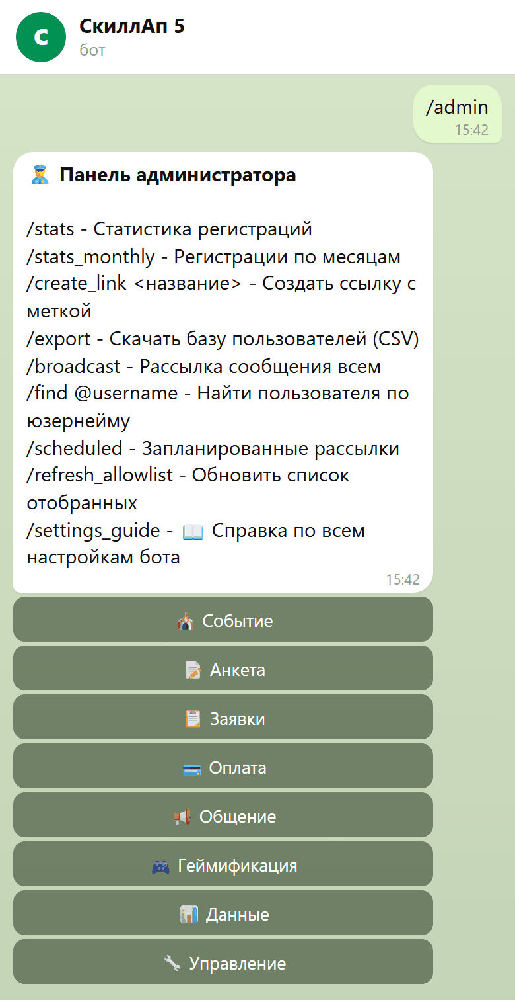
Так выглядит ответ на /adminу менеджера регистраций, которому добавили права «📢 Рассылки», «⚙️ Настройки» и «📊 Статистика». С правами роли «🛂 Менеджер регистраций» по умолчанию вы увидите только «📋 Заявки» и «💳 Оплата». Раздел «💳 Оплата» у этой роли виден всегда, даже если участие бесплатное: тогда его просто не открывайте. Над кнопками команды, которые вам доступны. - Откройте «📋 Заявки» и нажмите ещё раз «📋 Заявки». Бот покажет одну заявку: самую раннюю или, если включён балл, самую сильную. Нажмите «✅ Одобрить» или «❌ Отклонить». Перед самым первым одобрением спросите руководителя, переписан ли под ваше событие текст «🎉 После одобрения»: иначе делегат может получить прошлогоднее письмо с чужими датами, а отозвать письмо нельзя. Разбор заявок подробно.
- Пришло «❓ Новый вопрос от @ник»? Это вопрос делегата. Нажмите на это сообщение, выберите «Ответить» и напишите ответ: бот перешлёт его делегату и напишет вам «✅ Ответ отправлен пользователю.». Обычное сообщение без «Ответить» делегату не уйдёт: бот не поймёт, кому его переслать. Подробнее про вопросы.
- Только разбираете заявки? Тогда на этом всё: дочитайте «Пять правил» ниже и работайте. Настраиваете событие вы (у вас есть право «⚙️ Настройки»)? Прочитайте «Проверьте в первую очередь»: там то, что чаще всего оказывается настроено не так, как вы ожидаете. Потом пройдите маршрут под свой тип события: «Какое у вас событие?».

Пять правил от больших ошибок
Не проверяйте рассылку на «📢 Все пользователи»
На одном из событий тестовое «Привет» ушло 951 человеку, остановить его было нельзя.
Теперь есть предпросмотр и кнопка «⛔ Остановить», но привычка важнее. Чтобы посмотреть, как выглядит сообщение, отправлять его никому не нужно: бот сначала присылает вам точную копию и число получателей, а «❌ Отмена» на этом экране ничего не отправит. Правила рассылки.
«✅ Одобрить все» нельзя откатить
Всем сразу уходят письма об одобрении. Нажимайте, только если вы прочитали очередь.
Не переименовывайте вкладки в Google-таблице
Бот ищет вкладки по имени. Переименовали, и бот создаст новую пустую, а старая перестанет обновляться. Что можно и нельзя в таблице.
Не нажимайте пресет «для проверки»
Пресет это готовый набор вопросов и настроек под тип события. Пресет в «🎛 Тип события (пресет)» перезаписывает набор вопросов анкеты, а «🎓 Форум СкиллАп» меняет и другие настройки и записывает делегатам тексты СкиллАпа: на другом событии бот пообещает делегатам разбор резюме с рекрутером. Вернуть прежнее кнопкой нельзя. Пресет применяют один раз, на старте события. Подробнее.
Роли выдавайте со сроком и с умом
Право «⚙️ Настройки» равно правам администратора: с ним можно выдать любую роль кому угодно. Волонтёрам и временным людям ставьте срок роли кнопкой «⏳». Если роль сняли и выдали снова, срок нужно поставить заново: по умолчанию роль бессрочная. Как выдать роль.
Если что-то пошло не так, загляните в «Частые проблемы». Для каждого случая там написано, что делать самому и когда писать владельцу бота @qleafye.
Проверьте в первую очередь
Зачем это. Здесь то, что на новом событии чаще всего оказывается настроено не так, как вы ожидаете. Ничего не сломано, но разобраться лучше до того, как придёт поток заявок.
Чек-лист до открытия регистрации
Пройдите по порядку, прежде чем публиковать ссылку на бота. Чек-лист общий для любого события. Что добавить к нему для вашего типа события и в какой момент, написано в маршрутах: форум в одном городе, в нескольких городах, конференция.
- Название, даты, место, описание бота: «🎪 Название мероприятия», «🗓 Дата», «📍 Место», «🪪 Описание бота (до /start)». Путь: «🎪 Событие» → «🎪 Событие/Медиа». «🗓 Дата» это просто текст для делегатов. Дату, по которой работают QR и «🆘 SOS», задаёт отдельное поле «🗓 Дата начала форума», когда до него дойдёт ваш маршрут.
- Вопросы анкеты. Один раз пресет в «📝 Анкета» → «🎛 Тип события (пресет)» (какой, подскажет ваш маршрут), потом точная настройка в «📋 Вопросы регистрации» (как).
- Карточка заявки. «📋 Заявки» → «🧾 Поля карточки заявки» → «⚠️ Показать всё, что спрашиваем», если такая кнопка есть.
- Тексты одобрения и отказа. «✏️ 🎉 После одобрения» и «✏️ 🚫 При отклонении» в «📋 Заявки» → «⚙️ Тексты и настройки». Образцы в гайде взяты с другого события, их нужно переписать.
- Таблица. Получите ссылку и доступ (как), проверьте, что основная вкладка задана в «📊 Данные» → «📄 Вкладки таблицы».
- Второй менеджер. Выдайте роль хотя бы ещё одному человеку и попросите его нажать «Начать» у бота (как выдать роль). Если вы заболеете, заявки не встанут.
- Тестовая заявка. Заполните анкету со своего аккаунта или попросите коллегу. Проверьте карточку в «📋 Заявки», строку в таблице и письмо после одобрения. Потом уберите её:
/find @ник→ «↩️ Вернуть в ожидание» (как при ошибочном решении), затем отклоните её с причиной «тест» в очереди «📋 Заявки». Кнопки «Отклонить» в карточке/findнет, поэтому сначала возврат в ожидание.
Что чаще всего настроено не так
Пункты идут по важности. Первые пять на виду, остальные раскрываются.
Менеджеру или делегату «ничего не приходит».
Телеграм не разрешает боту писать первым. Если человек не нажимал «Начать» или заблокировал бота, до него не дойдут ни сводки, ни ответы на вопросы, ни письмо об одобрении. Сам бот при этом скажет «Одобрено».
Пометку «⚠️ не получает уведомления» бот ставит на экране «👥 Роли и доступы», но только после первой неудачной отправки. Поэтому просите каждого нового менеджера нажать «Начать» заранее. Как это выглядит.
Название, даты и описание бота остались от прошлого события.
Откройте «🎪 Событие» → «🎪 Событие/Медиа» и пройдите поля сверху вниз: «🎪 Название мероприятия», «🗓 Дата», «📍 Место», «🔹 TG», «💬 Приветствие».
Там же два поля, которые человек видит раньше всего: «🪪 Описание бота (до /start)» (текст в пустом чате до нажатия «Начать», до 512 символов) и «🪪 Строка «О боте» в профиле» (до 120 символов). Бот применяет их сразу после сохранения. Где какой текст.
В карточке заявки не хватает ответов анкеты.
Если вы включили новые вопросы, карточка может их не показывать.
- Откройте «📋 Заявки» → «🧾 Поля карточки заявки» (нужно право «⚙️ Настройки»).
- Если наверху есть строка «⚠️ Спрашиваем в анкете, но не показываем в карточке: N», нажмите «⚠️ Показать всё, что спрашиваем».
- Все такие поля включатся сразу. Кнопка только добавляет поля, ничего не убирает.
Набор вопросов анкеты нужно утвердить до открытия приёма.
Таблица Google строится по набору вопросов: вопрос, включённый посреди набора, сдвигает новые строки относительно старых. Проверьте «📝 Анкета» → «📋 Вопросы регистрации» и тексты одобрения и отказа до первой заявки. Как настроить вопросы.
В экране «🏙 Города мероприятия» лежат города прошлого события.
Список городов переходит из сезона в сезон. Пока модуль городов выключен, он ни на что не влияет. Если включить «🏙 Выбор города», делегаты увидят именно эти кнопки, поэтому сначала переименуйте или выключите лишние.
Название города по умолчанию стоит и в заголовке экрана программы в админке. Глава про города.
Ещё 8 подсказок
Срок роли ставится отдельно.
Роль снимается кнопкой «➖» с подтверждением «Снять роль … с …?». Если потом выдать её заново, срок действия придётся поставить снова: по умолчанию роль бессрочная.
Делегат из приложения и из чата получает разные «спасибо».
Из чата приходит текст «✅ После регистрации». Из приложения приходит экран «Заявка принята».
Тексты правятся в разных местах: второй только в приложении («⚙️ Настройки», поиск «заявка принята»). Если обещаете срок ответа, правьте оба.
Сроки ответа в приложении и в чате могут расходиться.
Тексты экрана статуса заявки в приложении показываются только при включённом тумблере «📶 Экран статуса заявки во всю ширину» (раздел «📝 Анкета»). Решите, какой срок честный, и напишите его одинаково в обоих местах.
Не нажимайте пресет «для проверки».
Кнопки в «🎛 Тип события (пресет)» перезаписывают набор вопросов, а «🎓 Форум СкиллАп» молча меняет и другие настройки: резюме, предложение личной ссылки, тексты ступеней амбассадоров. Эти тексты написаны под СкиллАп, поэтому на другом событии его не нажимайте. Пресет применяют один раз, на старте события. Подробнее.
У делегата нет кнопки «❓ Частые вопросы».
Кнопка появляется, когда есть хотя бы один видимый пункт. Заведите от 5 до 10 пунктов, это снимет часть вопросов к вам. Как вести частые вопросы.
Тихие часы и вечерняя сводка по умолчанию выключены.
Без тихих часов решения и ответы уходят делегатам сразу, в том числе ночью. «📊 Итоги дня менеджерам» тоже выключены. Включайте по желанию: что можно включить.
В Google-таблице лишние вкладки.
Пустая «Лист1» или вкладки прошлого события боту не нужны. Кнопка «🔍 Сверить с БД» (БД значит база данных, то есть собственный учёт бота) покажет их как «неизвестные вкладки». Удалять можно только те, что бот не пишет: список его вкладок в «📊 Данные» → «📄 Вкладки таблицы».
Событие идёт не два дня, а в программе предлагаются два.
«🗓 Сколько дней идёт форум» по умолчанию равно 2. Поле действует на любое событие, не только на форум: для однодневного поставьте 1, для трёхдневной конференции 3. Путь: «🎪 Событие» → «🎪 Событие/Медиа». От этого числа зависят кнопка «🆘 SOS», меню дня форума, отчёт за день и опрос тех, кто не пришёл.
Разбор заявок и письма делегату
В этой главе: Как узнать о заявках Очередь Одобрить Отклонить «Одобрить все» Одобрили не того Список заявок Поля карточки Правила балла Автоотказ Режимы и тихие часы В приложении
Зачем это. Чтобы принять решение по каждой заявке и сообщить его делегату.
Заявка это анкета, которую человек отправил и которая ждёт вашего решения. Ваше решение превращается в письмо делегату в чате с ботом.
Как вы узнаёте о новых заявках
По умолчанию бот работает в режиме «🔔 Уведомление: 🕒 Пачкой»: все, у кого есть право «📋 Модерация заявок», периодически получают сводку «📋 Заявок в ожидании: N. Открой /admin → Заявки.». Если заявок нет, сообщения нет.
- Как часто приходит сводка, задаёт «🕒 Тайминг батчей заявок» (батч значит пачка: заявки, собранные в одну сводку) в «📋 Заявки» → «⚙️ Тексты и настройки». Значение в секундах: 1800 это 30 минут (так по умолчанию), 10800 это 3 часа.
- Сообщение на каждую заявку включается кнопкой «🔔 Уведомление: 🕒 Пачкой → 📨 Сразу» в разделе «📋 Заявки». Соседняя кнопка «📥 Уведомления о заявках» решает, приходят ли такие сообщения по одному или одной сводкой, когда поток стихнет. Она работает, только если выше выбрано «📨 Сразу»; при «🕒 Пачкой» её можно не трогать.
- Сводку можно совсем выключить тумблером «📋 Сводка о заявках».
- Тот, кто заблокировал бота, сводку не получит.
Очередь: карточка за карточкой
- Откройте «📋 Заявки» → «📋 Заявки». На экране всегда одна заявка, это не список.
- Порядок такой: сначала более ранние заявки. Если на событии включены балл и тумблер «🧮 Очередь заявок: сначала с высоким баллом», сверху идут самые сильные по баллу, заявки без балла в конце.
- Прочитайте карточку. Сверху «📋 Заявка 1/4»: номер в очереди и сколько всего ждёт. Дальше ФИО и ник, балл (если включён), ответы анкеты, блок про резюме и пометки.
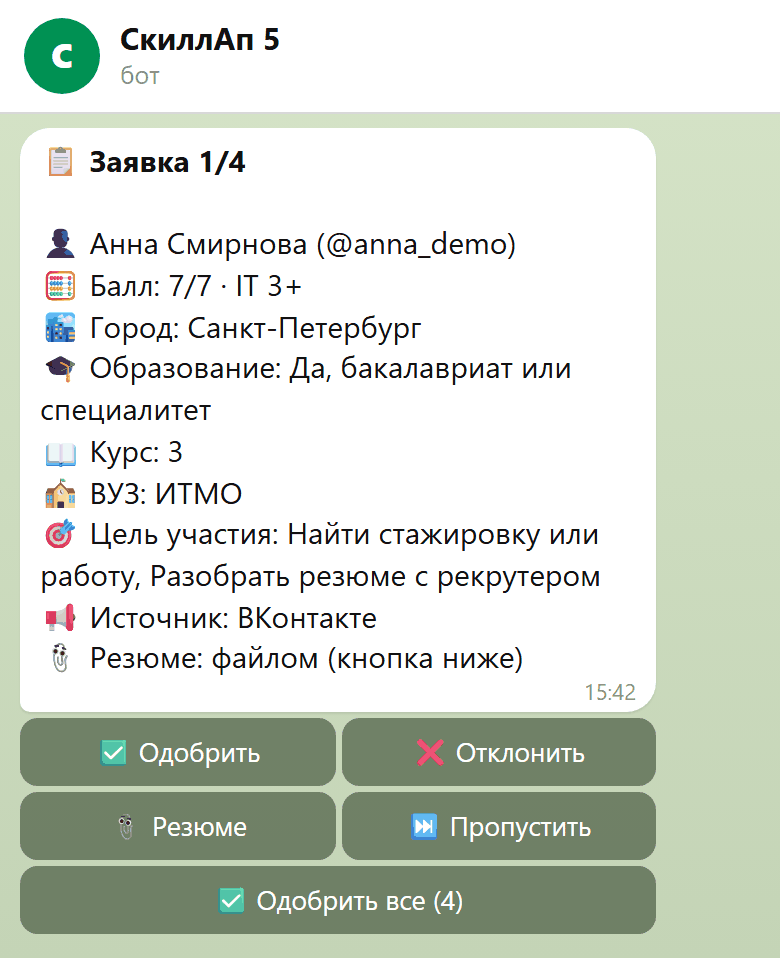
Карточка заявки. Все имена на картинках вымышленные. - Примите решение кнопкой. Решённая карточка исчезает, приходит следующая. Когда очередь пуста, бот пишет «✅ Заявок нет.».

Подробнее: что значит балл
Балл нужен событиям с отбором по резюме и опыту, его придумали для СкиллАп. «🧮 Балл: 7/7 · IT 3+»: бот сам считает баллы по ответам анкеты, чтобы сильные заявки вы разбирали раньше. Максимум 7:
- 2 балла за IT: направление обучения из списка или не меньше двух пунктов стека.
- 2 балла за старший курс: 3 курс и старше, магистратура, выпускник.
- 1 балл за резюме файлом или ссылкой.
- 1 балл за готовность выйти на работу сейчас или через 3 или 6 месяцев.
- 1 балл за опыт: пет-проекты, стажировка, коммерческий.
«IT 3+» стоит, когда выполнены обе «двойки». Балл подсказка, а не решение: решаете вы.
Подробнее: кнопки под карточкой
| Кнопка | Что делает |
|---|---|
| «✅ Одобрить» | Заявка становится одобренной, делегату сразу уходит письмо об одобрении, в таблице статус меняется на «Одобрена». Вам всплывает «Одобрено», приходит следующая карточка. |
| «❌ Отклонить» | Бот попросит причину (см. ниже). Заявка отклоняется после того, как вы её пришлёте. |
| «📎 Резюме» | Только если резюме есть. Присылает файл документом или текст резюме. Если человек вместо файла дал ссылку или заполнил мини-профиль, кнопка не нужна: ответы уже стоят в тексте карточки. |
| «🕓 История» | Только если делегат правил анкету после отправки. Показывает последние правки: «поле: было → стало». |
| «📄 Полная анкета» | Только если карточка не влезла в лимит Телеграм. Присылает все ответы целиком. |
| «⏭ Пропустить» | Прячет карточку до конца вашей сессии, ничего не решая. В следующий раз, когда вы откроете «📋 Заявки», она вернётся. |
| «✅ Одобрить все (N)» | Одобряет сразу всю очередь. См. ниже, это самая опасная кнопка. |
Одобрить: что получит делегат
Делегат получает сообщение вместе с главным меню. Текст пишете вы. Ниже пример с СкиллАп 5, а не текст вашего бота:
Ты прошёл(а) отбор на СкиллАп 5.
Ждём тебя 21 ноября в Петербурге. Адрес и тайминг пришлём сюда за неделю до форума.
Ссылку на чат делегатов пришлём сюда в октябре.
Если отметил(а) кейс-чемпионат, в конце октября позовём на короткое интервью, минут на семь.
Правится в «📋 Заявки» → «⚙️ Тексты и настройки» → «✏️ 🎉 После одобрения».
Бот записывает, дошло ли письмо. Если делегат не открывал бота или заблокировал его, письмо не дойдёт, хотя вы увидите «Одобрено». Как найти таких людей: «Делегат пишет, что ему не пришло одобрение».
Отклонить: причина и письмо
- Нажмите «❌ Отклонить».
- Бот напишет «Укажи причину отклонения:» и напомнит, что причину увидит делегат. Внизу появится кнопка «Отмена».
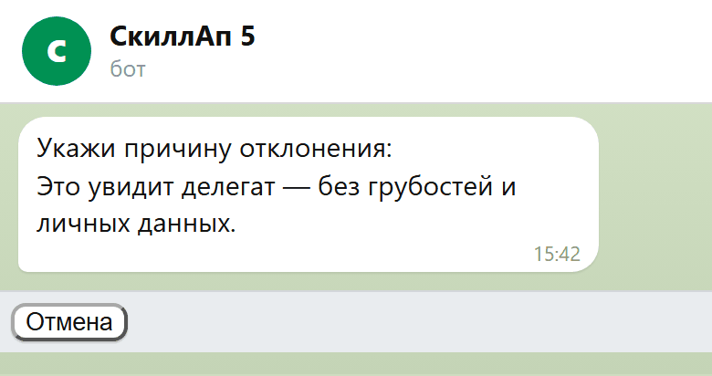
Бот ждёт причину отказа. Её увидит делегат. - Напишите причину обычным сообщением. Готовых вариантов в чате нет, они есть только в приложении.
- Бот ответит «Заявка отклонена.». Делегату уйдёт общий текст отказа и ваша причина отдельным абзацем.

Передумали? Нажмите «Отмена» или отправьте любую команду на «/». Бот ответит «Отклонение отменено.» и покажет заявку снова.
Делегат получит общий текст отказа (например, на СкиллАп 5: «Спасибо, что заполнил(а) анкету. В этот раз позвать тебя на СкиллАп 5 не получится.») и ниже ваш текст. Общий текст правится в «✏️ 🚫 При отклонении» (форматирование в нём не работает).
Пишите причину так, чтобы человеку было понятно, что делать дальше: отказанный делегат может подать анкету заново, и точная формулировка подскажет, что поправить. Без грубостей и личных данных.
Подробнее: готовые причины в приложении
В приложении («🗂 Отбор заявок») есть готовые причины и поле «Своя причина». Готовые причины задаются списком «✍️ Причины отказа» в «📋 Заявки» → «⚙️ Тексты и настройки». Из коробки там «Анкета заполнена не полностью», «Не подходит по критериям участия», «Мест на это мероприятие уже нет», «Заявка-дубликат». Например, на СкиллАп 5 их заменили на три своих:
- «На площадке ограниченное число мест, и приоритет получили студенты IT-направлений с 3 курса и выпускники.»
- «В анкете не хватило информации о проектах или опыте. Допиши и подай заново, посмотрим ещё раз.»
- «Анкета заполнена не полностью или с ошибкой в контактах.»
«✅ Одобрить все»: когда и как
Кнопка спрашивает «Одобрить все N заявок?» и предлагает «✅ Да» или «❌ Отмена». После «Да» все заявки в очереди одобряются разом, и каждому уходит письмо.
Откатить нельзя. Можно только по одной вернуть заявку в ожидание через /find (как это сделать), но письмо уже будет отправлено.
Пользуйтесь кнопкой, только если вы заранее прочитали очередь и все заявки подходят.

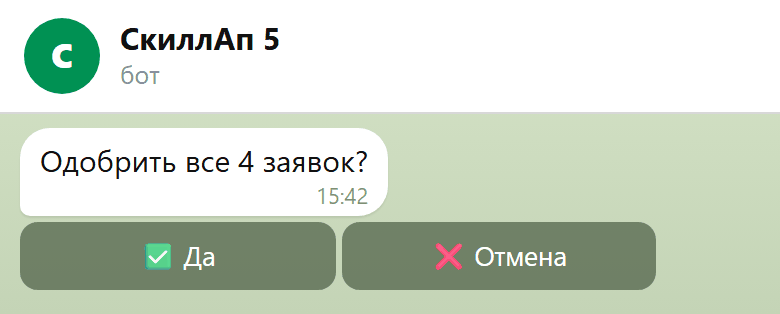
Случайно одобрили или отклонили не того
Такое бывает: нажали не ту кнопку, перепутали людей. Решение можно вернуть, а письмо делегату отозвать нельзя, поэтому ему нужно написать.
- Отправьте боту
/find @никэтого человека (про поиск). - В карточке нажмите «↩️ Вернуть в ожидание». Бот покажет экран «↩️ Вернуть в ожидание модерации?»: что изменится (строка в таблице станет «Новая», напоминания об оплате снимутся, QR перестанет пускать на форум) и что останется как было (монеты, подтверждённая оплата).
- Решите, кто напишет делегату. Кнопка «🔔 Сообщить делегату: ВЫКЛ» означает, что бот промолчит. Нажмите её, чтобы стало «ВКЛ», и бот отправит текст «↩️ Возврат в ожидание: текст делегату». По умолчанию это «Ваша заявка снова на рассмотрении — менеджер посмотрит её ещё раз.» Извинения в нём нет, поэтому лучше написать самому.
- Нажмите «✅ Вернуть в ожидание». Заявка снова в очереди «📋 Заявки», примите решение заново. Если человека отклонили по ошибке, после одобрения ему уйдёт обычное письмо об одобрении.
«Привет! Это оргкомитет [событие]. Сегодня тебе по ошибке пришло сообщение, что заявка одобрена. Это наша ошибка, извини, пожалуйста. Твоя заявка ещё на рассмотрении, решение придёт в этот же чат с ботом до [дата]».
Если отклонили по ошибке: «…тебе по ошибке пришёл отказ. Извини, пожалуйста! Заявка одобрена, подробности уже в чате с ботом».
«📇 Список заявок»
Обзор уже принятых и ожидающих решений. Здесь удобно проверить, что вы или коллеги уже разобрали. Конкретного человека ищите через /find @ник.
- Три фильтра: «✅ Одобренные», «❌ Отклонённые», «⏳ Ожидают».
- В строке: номер, имя ссылкой, ник, дата и время, кто принял («приняла Мария Иванова» или «отклонил(а) …»).
- Страницы по 15.

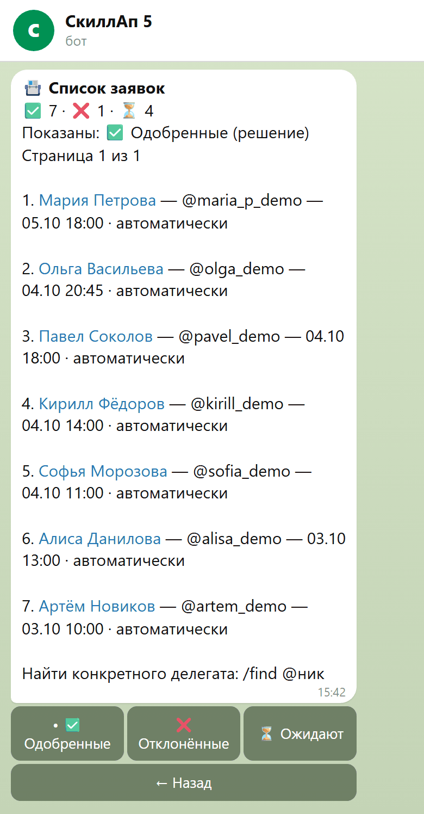
Что показывает карточка: «🧾 Поля карточки заявки»
Нужно право «⚙️ Настройки». Экран показывает все вопросы анкеты, у каждого свой значок: ✅ показываем в карточке, ☐ не показываем, ⚠️ анкета спрашивает, а карточка не показывает.
- Откройте «📋 Заявки» → «🧾 Поля карточки заявки».
- Если вверху есть строка «⚠️ Спрашиваем в анкете, но не показываем в карточке: 11», нажмите «⚠️ Показать всё, что спрашиваем». Бот добавит все вопросы со значком ⚠️ и скажет «Добавили в карточку: 11».
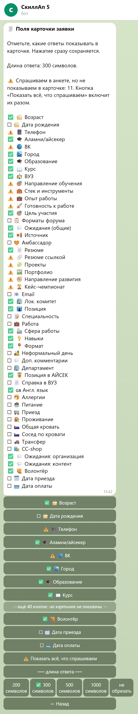
Пример со СкиллАп 5: ⚠️ горит у телефона, ВК, направления, стека, опыта, готовности, резюме ссылкой, проектов, портфолио, направления развития и кейс-чемпионата. Середина списка скрыта. - Каждый вопрос можно включать и выключать отдельным нажатием, изменения сохраняются сразу.
- Внизу выберите длину ответа: «200 символов», «300 символов», «500 символов», «1000 символов» или «не обрезать». По умолчанию 300.

Правила балла
Нужно право «⚙️ Настройки». Экран «🧮 Правила балла» показывает, какие ответы дают баллы. Нажатие на вариант (✅ или ☐) включает или выключает его.
Внизу порог для курса («🎓 Курс от: 3») и для стека («🧰 Стек от (пунктов): 2»).
Сам балл включает тумблер «🧮 Автоматический балл заявки», порядок очереди по баллу тумблер «🧮 Очередь заявок: сначала с высоким баллом». Оба в разделе «📋 Заявки», по умолчанию оба выключены. Пресет «🎓 Форум СкиллАп» включает балл сам.

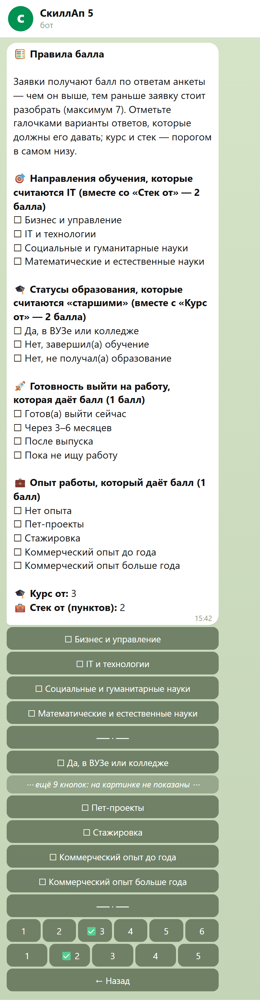
Подробнее: пример правил и когда их менять
Так правила выставлены на СкиллАп 5. На вашем событии списки вариантов свои, отмечайте их галочками.
- IT-направления: Разработка ПО и программная инженерия; Информационные системы и безопасность; Прикладная математика и анализ данных; Электроника и приборостроение.
- Старшие статусы: «Да, магистратура или аспирантура», «Нет, уже закончил(а) вуз».
- Готовность: «Готов(а) выйти сейчас», «Через 3–6 месяцев».
- Опыт: пет-проекты, стажировка, коммерческий опыт.
Менять правила посреди набора лучше осторожно. Балл считается при отправке анкеты и при её правке, поэтому у уже поданных заявок он остаётся прежним, пока делегат не поправит анкету.
Автоотказ по правилам
Правило автоотказа само отклоняет или помечает заявку, если ответы анкеты подходят под условие. Например, «младше 18 на дату форума» или «нет резюме». Одобрять правило не умеет: помеченная заявка всегда ждёт решения человека.
Путь: «📋 Заявки» → «🚫 Правила автоотказа». Нужно право «⚙️ Настройки».
- Нажмите «➕ Новое правило». Можно взять заготовку («🧩 Младше 18 на дату форума», «🧩 Курс из списка», «🧩 Нет резюме») или собрать «✏️ Своё правило». Правило создаётся сразу, но выключенным.
- На карточке правила добавьте условия кнопкой «➕ условие в группу 1»: выберите вопрос анкеты, затем условие («один из», «ни один из», «меньше», «больше», «между», «возраст на дату форума меньше», «не заполнено» и другие) и значение. Условия одной группы должны выполниться все сразу. Кнопка «➕ новая группа (ИЛИ)» добавляет запасной вариант: хватит любой группы.
- Выберите действие кнопкой «↔ Действие»: «🚫 Отклонять» или «⚠️ Помечать для модератора». Пометка это пробный режим: делегат ничего не получает, вы видите метку на карточке.
- Для отказа впишите «✏ Текст отказа». Без него правило с отказом не включится.
- Нажмите «🔢 Сколько заявок попадёт». Бот скажет, сколько уже поданных заявок подошло бы под правило, и предупредит, если это больше половины.
- Нажмите «✅ Включить». Бот ещё раз покажет предпросмотр, включите кнопкой «✅ Всё равно включить».
Подробнее: что получает делегат и как вернуть заявку
- Делегат получает общий текст «🚫 При отклонении» и под ним текст сработавшего правила. Если идут тихие часы, сообщение ждёт их конца.
- Менеджерам приходит «🤖 Автоотказ: имя — правило «…»». В режиме уведомлений пачкой автоотказы попадают в общую сводку.
- Журнал «🤖 Автоотказы» на экране правил (право «📋 Модерация заявок») показывает, кого и каким правилом отклонили. Кнопка «↩️ Вернуть: имя» → «↩️ Да, вернуть» возвращает заявку в очередь, делегат получает текст «🔄 При возврате заявки на пересмотр». Массового возврата нет, это сделано намеренно.
- В карточке заявки видно «⚠️ Помечена правилом: …» или «🤖 Автоотказ по правилу: …». В очереди «📋 Заявки» есть флажок «☐ Только помеченные правилами», в приложении фильтр «Помечены правилом».
- Если выключить вопрос анкеты, на котором держится правило, правило встанет на паузу (значок ⚠️), и держатели права «⚙️ Настройки» получат об этом сообщение.
Подробнее: города, общий рубильник, отчётность
- Правило действует в одном городе или во всех («🏙 Город: …» на карточке) и только на отмеченные формы: «Полная», «Краткая», «Вечеринка». Менеджер, привязанный к городу, видит и правит только правила своего города. «📋 Скопировать в другой город» создаёт выключенную копию.
- Кнопка «🚫 Выключить все правила» останавливает все правила разом и сохраняет состояние каждого. Её видят только суперадмин и руководитель без привязки к городу. Обратно: «✅ Включить все правила».
- Выключить одно правило можно кнопкой «🚫 Выключить» на его карточке. Удаление («🗑 Удалить») необратимо, бот предложит «🚫 Выключить вместо удаления».
- «📊 Отчётность»: вкладка автоотказов в таблице и кнопка «🔄 Обновить вкладку сейчас». «📄 Выгрузить файлом» в журнале присылает всю историю.
Режимы одобрения и тихие часы
- «✅ Полная форма: 👮 Ручная → ⚡ Авто». По умолчанию «Ручная»: каждую заявку решаете вы. В режиме «Авто» все новые заявки одобряются сами, без очереди. Вместо письма «прошёл отбор» делегат сразу получает короткое подтверждение: текст «✅ После автоприёма (без модерации)» в «📝 Анкета» → «📝 Регистрация», по умолчанию «Заявка принята ✅ Всё получили — ждём тебя!».
- Такие же кнопки есть для краткой формы («✅ Краткая форма», по умолчанию «Авто») и для вечеринки («✅ Модерация вечеринки», по умолчанию «Ручная»). Они нужны, только если эти формы включены (про формы).
- «🌙 Тихие часы». По умолчанию выключены.
- «✏️ Правка анкеты делегатом» и «🔁 Повторная подача после отказа». По умолчанию делегат может править анкету всегда, а отказанный может подать заново. Исключение для одного человека выдаётся из
/find.

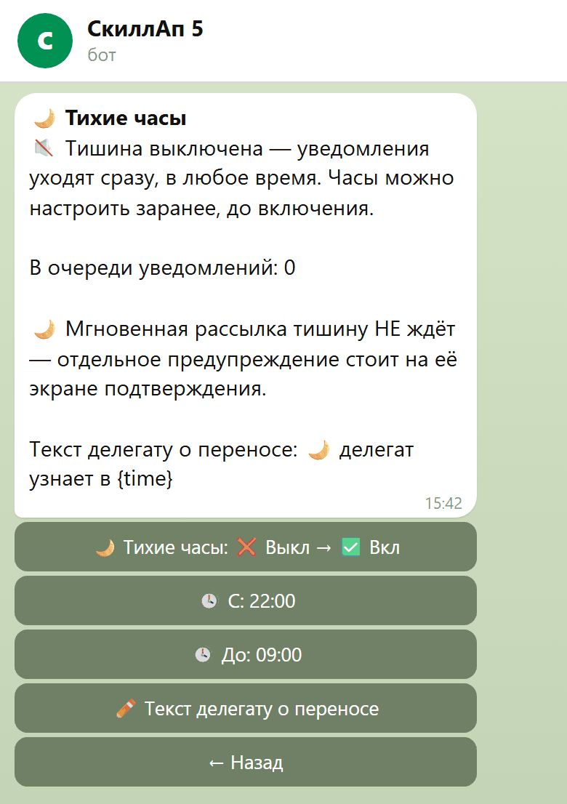
Подробнее: «Авто» и тихие часы
- Когда «Авто» уместен: отбора нет совсем, например открытое событие или акция с краткой формой. Если отбор есть, не включайте «Авто» даже ненадолго. На одном из событий режим простоял пять часов, и за это время 38 заявок одобрились без проверки.
- Переключение на «Авто» бот подтверждает: «⚠️ Выключить модерацию полной формы?». После «Да, выключить модерацию» всем менеджерам уходит сообщение с вашим именем. Обратное переключение «Авто → Ручная» срабатывает сразу.
- Если включить тихие часы, решения по заявкам и ответы на вопросы откладываются до конца окна (по умолчанию с 22:00 до 09:00; если у города задан часовой пояс, окно считается по часам города), а менеджеру бот пишет «🌙 делегат узнает в ЧЧ:ММ». Мгновенная рассылка тихие часы не ждёт. Время правится на экране «🌙 Когда молчим: «с» и «до»».
То же самое в приложении
В приложении («🗂 Отбор заявок», глава про приложение) заявки идут карточками с кнопками «принять» и «отклонить». Порядок и поля карточки те же, что в чате.
- У принятия или отказа есть 5 секунд на «Отменить». Пока они не прошли, письмо делегату не уходит.
- Кнопка «Принять всех N» тоже необратима.
Поиск делегата: /find
Зачем это. Чтобы найти человека и поправить его заявку.
Команда /find @ник находит человека и показывает его карточку с действиями. Нужно право «📋 Модерация заявок».
- Искать можно только по нику (с @ или без, регистр не важен). По имени и номеру команда не ищет. Если ника нет, найдите человека в «📇 Списке заявок».
- Без ника бот скажет «⚠️ Используйте формат: /find @username». Если не нашёл: «❌ Пользователь @ник не найден в базе данных.»
- Если человек нажимал «Начать», но анкету не отправил, бот пишет «Пользователь найден (анкету не подавал(а))» и показывает кнопки «👥 Выдать роль» (только при праве «⚙️ Настройки») и «🧹 Сбросить зависшую анкету».
В карточке: номер, имя, ник, e-mail (если его спрашивали), дата регистрации, статус («⏳ На рассмотрении», «✅ Одобрена», «❌ Отклонена») и сезон. Кнопки зависят от статуса.

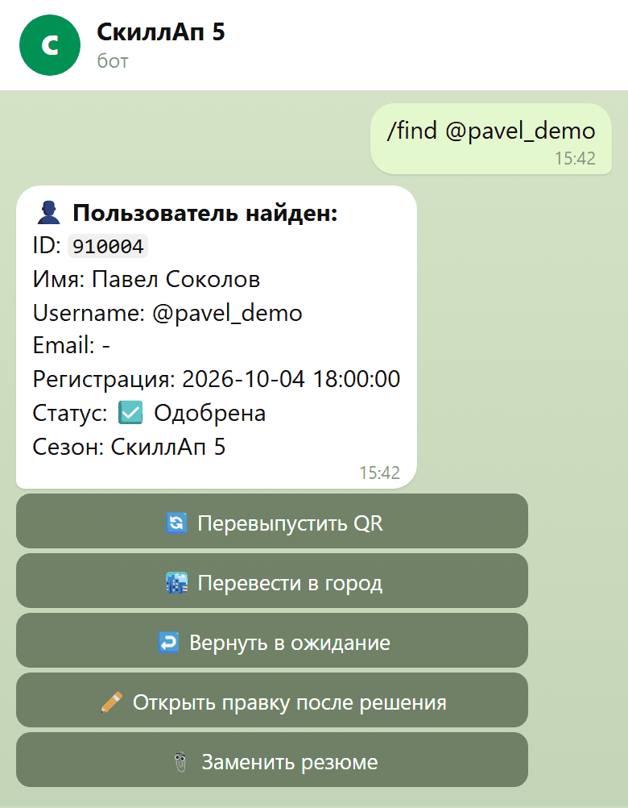
Каждое действие показывает отдельный экран с описанием того, что изменится, и кнопками «✅ …» и «✖️ Отмена». Читайте его: он называет последствия словами.

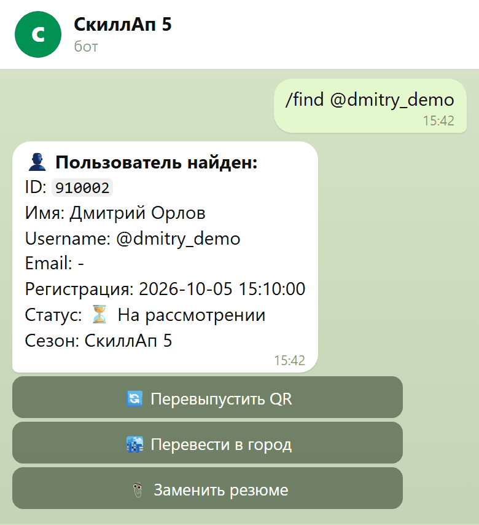
Подробнее: все кнопки карточки
| Кнопка | Когда видна | Что произойдёт |
|---|---|---|
| «↩️ Вернуть в ожидание» | Заявка одобрена или отклонена | Заявка снова попадает в очередь. Бот покажет, что изменится (в таблице статус станет «Новая», напоминания об оплате снимутся). Тумблер «🔔 Сообщить делегату» по умолчанию выключен. Монеты и оплата не меняются. |
| «🔁 Разрешить повторную подачу» | Заявка отклонена | Отказанный делегат сможет заново пройти /start и заполнить анкету, даже если общий переключатель стоит на «нельзя». Разрешение одноразовое. Если оно уже выдано, вместо кнопки строка «🔁 Разрешена повторная подача — выдал …» и кнопка «🔁 Отозвать разрешение». |
| «✏️ Открыть правку после решения» | Заявка одобрена | Делегат один раз сможет отредактировать одобренную анкету. Будет ли заявка снова на модерации после правки, зависит от тумблера «🔁 Изменённая анкета — снова на модерацию» (экран подтверждения скажет, как сейчас). Отозвать: «✏️ Отозвать разрешение». |
| «🧹 Сбросить зависшую анкету» | Есть незавершённый черновик | Удаляет черновик (для новой анкеты ещё и отметку «начал регистрацию»), следующий /start начнётся с чистого листа. Уже отправленная анкета не затрагивается. Бот предупредит, если человек был активен несколько минут назад. |
| «📎 Заменить резюме» | У делегата есть анкета | Покажет, что сейчас, и попросит прислать новый файл PDF или DOCX одним сообщением. Ссылка в таблице обновится. |
| «🔄 Перевыпустить QR» | Всегда | Нужна, если на форуме вход по личному QR. Бот предупредит: «⚠️ Старый QR перестанет работать — если делегат уже сохранил скриншот, тот больше не пропустит на форум. Перевыпустить?». После «🔄 Да, перевыпустить» новый QR уйдёт делегату. Про QR. |
| «🏙 Перевести в город» | Кнопка есть всегда, нужна только при нескольких городах | Выберите город, затем решите, оставить статус или вернуть заявку на модерацию и сообщать ли делегату. Строка в таблице переедет на вкладку нового города. Если модуль городов выключен, бот ответит «Модуль городов выключен — переводить некуда.». Про города. |
| «📝 Ответы форм» | Если человек заполнял подключённую внешнюю форму | Присылает его ответы из Яндекс или Google Формы. Про внешние формы. |
Тексты уведомлений делегату правятся в «📋 Заявки» → «⚙️ Тексты и настройки»: «↩️ Возврат в ожидание: текст делегату», «🔁 Разрешена повторная подача: текст делегату», «✏️ Открыта правка после решения: текст делегату», «🧹 Сброс зависшей анкеты: текст делегату».
Вопросы делегатов и частые вопросы
Зачем это. Чтобы отвечать делегатам быстро, а повторяющиеся вопросы закрыть заранее.
Как делегат задаёт вопрос и как вы отвечаете
У делегата в нижнем меню есть кнопка «❓ Задать вопрос». Он пишет вопрос текстом, и бот отвечает «Твой вопрос отправлен!». Если в частых вопросах есть хотя бы один пункт, делегат сначала увидит их и сможет нажать «Не нашёл ответ — спросить менеджера».
Каждый, у кого есть право «📋 Модерация заявок» (все менеджеры регистраций и суперадмины), получает личное сообщение «❓ Новый вопрос от @ник:» с номером вопроса.
Способ А: ответить на сообщение с вопросом
- Нажмите на сообщение с вопросом и выберите «Ответить». В Телеграм это называют реплаем: ваш ответ будет привязан к сообщению с вопросом, и по этой привязке бот поймёт, кому его переслать.
- Напишите ответ: текст, фото, голосовое, видео-кружок.
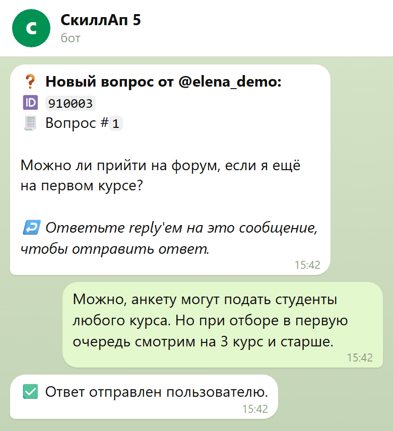
Вопрос приходит менеджерам, ответ уходит делегату. Ответ на картинке написан менеджером в ответ на сообщение. - Делегат получит «💬 Ответ от организаторов:» и ваше сообщение. Вам придёт «✅ Ответ отправлен пользователю.», остальным менеджерам «✅ Имя ответил(а) на вопрос от пользователя …».

Отвечает тот, кто успел первым. Остальные увидят «⚠️ На этот вопрос уже ответил(а) …».
Способ Б: из журнала
Откройте «📋 Заявки» → «❓ Вопросы делегатов». Вверху счётчики «без ответа · в работе · отвечено» и фильтры «Все», «Без ответа», «В работе», «Отвечены». Под вопросом без ответа есть «✉️ Ответить #N»: бот просит «Напишите ответ делегату одним сообщением.».

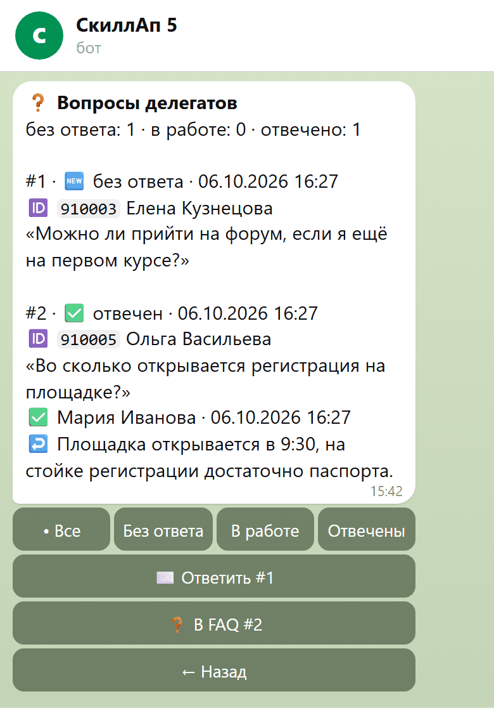
Под отвеченным вопросом есть «❓ В FAQ #N» (FAQ это английское сокращение для частых вопросов): эта кнопка превращает пару в пункт частых вопросов. Ваши ответы идут и во вкладку «Вопросы» в таблице.
Подробнее: значки в журнале
- «🆕 без ответа».
- «✍️ в работе»: кто-то взял вопрос, но ответ не доставлен. Если прошло больше 30 минут, значок «🔒 залип».
- «✅ отвечен».
Частые вопросы (FAQ)
Путь: «📋 Заявки» → «❓ Частые вопросы». Пока нет ни одного видимого пункта, у делегатов нет и кнопки «❓ Частые вопросы». Как только появится хотя бы один, кнопка появится сама.
- Нажмите «➕ Добавить».
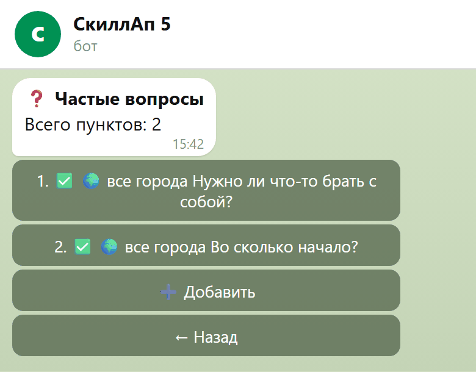
Список частых вопросов. Здесь два демонстрационных пункта. - Пришлите текст вопроса, затем текст ответа. Бот скажет «✅ Пункт добавлен в FAQ.».
- Нажмите на пункт в списке, чтобы открыть карточку: «✏️ Вопрос», «✏️ Ответ», «⬆️» и «⬇️» (порядок), «🚫 Скрыть от делегатов» или «✅ Показать делегатам».
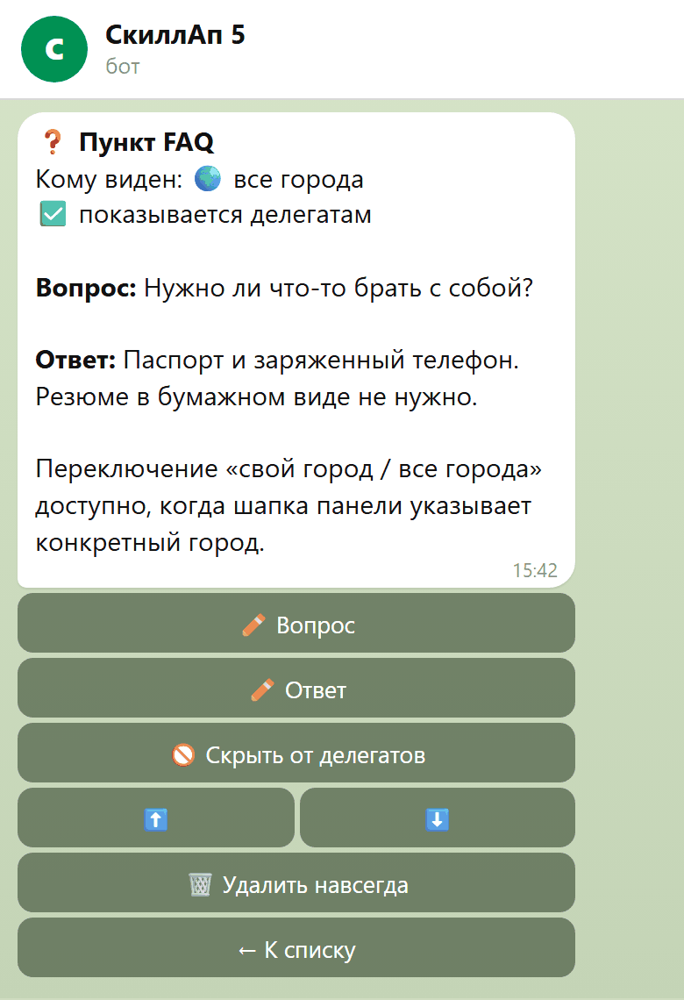
Карточка пункта.


Подробнее: быстрый способ и тексты экрана
Когда ответили на хороший вопрос, откройте журнал вопросов и нажмите «❓ В FAQ #N». Бот соберёт черновик из вопроса и вашего ответа.
Его можно поправить кнопками «✏️ Вопрос» и «✏️ Ответ» и сохранить. Дубль бот не даст создать («Такой вопрос уже в FAQ»).
Вступительный текст экрана и подпись кнопки «Не нашёл ответ — спросить менеджера» правятся в «🎪 Событие» → «🎪 Событие/Медиа». Пункты вручную на английский не переводятся.
Рассылки
В этой главе: Кому По фильтру Сообщение и отправка Отложенная Готовые сценарии
Зачем это. Чтобы отправить одно сообщение многим делегатам и никого не напугать лишним.
Рассылка это одно сообщение, которое бот отправляет многим делегатам. Нужно право «📢 Рассылки» (раздела нет?). Путь: «📢 Общение» → «📢 Рассылка» или команда /broadcast.
9 сентября на одном из событий менеджер одним касанием отправил тестовое «Привет» 951 человеку. Остановить рассылку было нельзя: кнопка «Отмена» очищала только диалог, а сама отправка шла.
После этого в бот добавили предпросмотр, число получателей на кнопке, «⛔ Остановить», журнал и отзыв. Эти защиты работают, если вы ими пользуетесь.
- Не тестируйте на «📢 Все пользователи». Тестовая рассылка вообще не нужна: когда вы пришлёте сообщение, бот покажет вам точную копию того, что получат делегаты, и экран «Отправить это N пользователям?». Не понравилось — нажмите «❌ Отмена», бот ответит «Рассылка отменена.», и никто ничего не получит.
- Перед «✅ Отправить» прочитайте число на кнопке. «✅ Отправить 8 пользователям» значит, что восемь человек получат это сообщение.
- Ошиблись? Сразу нажмите «⛔ Остановить» в сообщении с прогрессом. Уже доставленное останется, остальным не уйдёт. Потом «🗒 Последние рассылки» → «🗑 Удалить у получателей» (работает 48 часов).
- «📢 Все пользователи» включает и отклонённых. Если нужно только одобренным, используйте фильтр по статусу.
Подробнее: правила для отложенной рассылки
- Время отложенной рассылки московское. Если указать время, которое уже прошло, бот ответит «Это время уже прошло».
- На экране подтверждения отложенной рассылки нет числа получателей. Заранее посмотрите число через «🎯 По фильтру» → «📊 Показать и отправить».
- Не отправляйте видео, файлы и альбомы через «🕓 Запланировать»: отложенная рассылка умеет только текст и одно фото.
Шаг 1. Кому отправить
Бот просит выбрать целевую аудиторию. «Пользователь» для бота это человек, который отправил анкету (на рассмотрении, одобрен или отклонён). Те, кто только нажал «Начать», сюда не входят.
Самая безопасная кнопка: «🎯 По фильтру».
Подробнее: все кнопки выбора аудитории
| Кнопка | Кому уйдёт |
|---|---|
| «📢 Все пользователи» | Все, кто отправил анкету, включая отклонённых. |
| «📄 По файлу в проекте» | Служебная кнопка, обычно её нет. Если видите её, не нажимайте: список получателей у неё не ваш. Спросите @qleafye. |
| «🚫 Не подписаны на канал» | Те, кого бот при проверке не нашёл среди подписчиков канала. Если бот подписку не проверял, сегмент пустой («В этом сегменте сейчас нет пользователей.»). |
| «📝 Не завершили регистрацию» | Нажали «Начать», но не отправили анкету. Удобно для напоминания. |
| «🎯 По фильтру» | Конструктор условий: статус, вуз, курс, источник, дата регистрации и другие. Самая безопасная кнопка. |
| «🕓 Запланировать» | Отложенная рассылка всем. |
| «🗒 Последние рассылки», «⏰ Запланированные» | Журнал и список отложенных. |

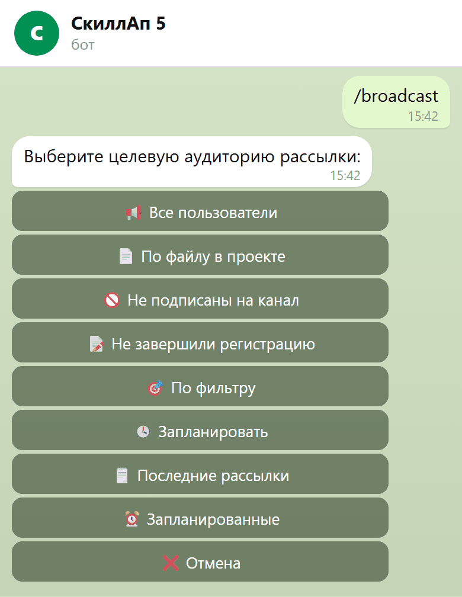
/broadcast.«🎯 По фильтру»: выбор кнопками
- Нажмите «🎯 По фильтру».
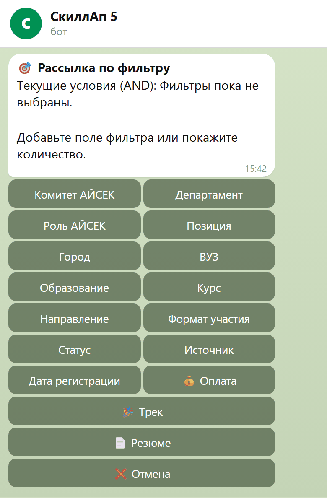
Меню фильтра. Всегда открывается пустым, чтобы вы сами выбрали условия. - Выберите поле, например «Статус». Бот покажет значения кнопками, по 8 на страницу, листайте «◀» «▶». Вводить текстом нельзя: значения берутся из базы.
- Для статуса кнопки показывают «Новая» (на рассмотрении), «Одобрена» и «Отклонена».
- Условия складываются через «И», поэтому можно выбрать несколько полей.
- Нажмите «📊 Показать и отправить». Бот скажет, сколько человек попадает под фильтр. Дальше «📨 Отправить сейчас» или «🕓 Запланировать».
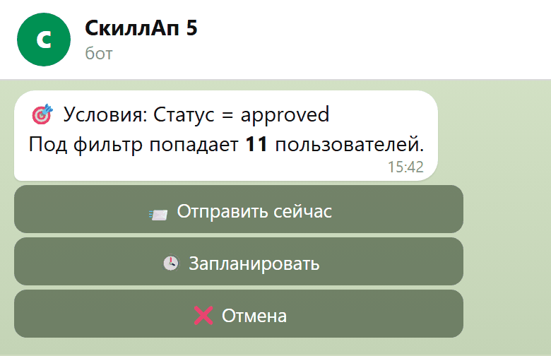
Бот показал, сколько человек попадёт под условие. Только после этого можно отправлять.


Подробнее: даты и редкие кнопки фильтра
Фильтр по дате регистрации работает как «После» или «До» выбранной даты. Некоторые кнопки появляются, только когда есть по чему фильтровать: «🏙 Город мероприятия» (включены города), «Сезон» (сезонов больше одного), «📄 Резюме», «💬 Чат делегатов», «🤖 Автоотказ по правилу», «🏫 Делегации» и «🏫 Вуз делегации», «🚪 Отметка на форуме», «🎤 Были на сессии…» и «🚫 Не были на сессии…» (заведена программа), «📝 Внешняя форма». Для конференций пригодятся «Комитет АЙСЕК», «Департамент», «Роль АЙСЕК», «💰 Оплата». Если выбранное значение исчезло, бот не расширяет аудиторию, а даёт пустой список.
Шаги 2 и 3. Сообщение, предпросмотр, отправка
- После выбора аудитории бот просит прислать само сообщение: текст, фото с подписью, видео, файл, пересланный пост, альбом. Форматирование сохраняется. Конструктора кнопок в боте нет.
- Бот сразу присылает вам точную копию того, что получит делегат, и экран подтверждения «Отправить это N пользователям?».
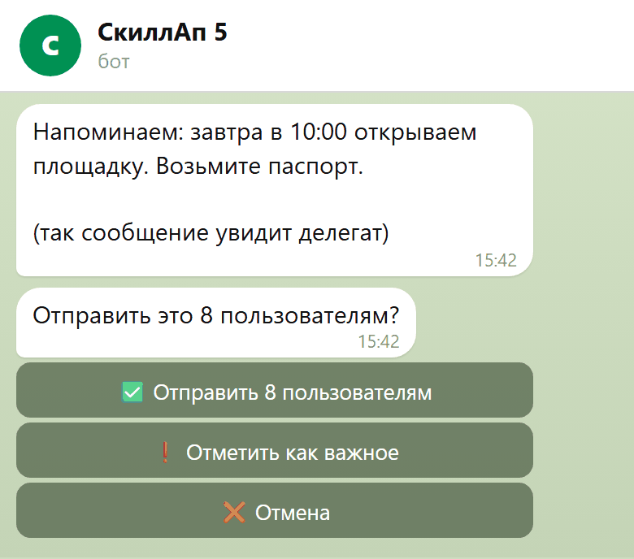
Экран подтверждения. Число N на кнопке и есть число получателей. - Если сообщение важное, нажмите «❗ Отметить как важное» (кнопка станет «✅ Отмечено как важное»). К тексту добавится пометка «❗ Важно», сообщение дойдёт и до тех, кто нажал «🔕 Не присылать сегодня», а у делегата в этот день появится кнопка меню «❗ Важное».
- Нажмите «✅ Отправить N пользователям». Бот покажет «📨 Отправлено 25 из N…» с кнопкой «⛔ Остановить».
- В конце бот напишет «Рассылка завершена. ✅ Отправлено X, ❌ недоступно Y».

Подробнее: кнопка «🔕 Не присылать сегодня»
Под каждой неважной рассылкой у делегата есть кнопка «🔕 Не присылать сегодня». До конца суток по Москве он не получает необязательное. В отчёте это отдельная строка: «🔕 Не отправлено (выключили уведомления на сегодня): N».
У альбомов кнопку прислать нельзя, поэтому бот отправляет её отдельным сообщением.
Отложенная рассылка
- Нажмите «📢 Рассылка» → «🕓 Запланировать» (всем) или через фильтр «📊 Показать и отправить» → «🕓 Запланировать».
- Введите дату и время по Москве в формате
ДД.ММ.ГГГГ ЧЧ:ММ: день, месяц, год, пробел, часы и минуты. Например, для 15 ноября 2026 года в 10 утра:15.11.2026 10:00. Если формат другой, бот скажет «❌ Не понял дату. Формат: ДД.ММ.ГГГГ ЧЧ:ММ…». - Пришлите текст или одно фото с подписью. Видео, файлы и альбомы не поддерживаются.
- Бот покажет копию и «Запланировать эту рассылку на …?». Нажмите «🗓 Запланировать» (можно сначала «❗ Отметить как важное»).
- Готово: «✅ Рассылка #N запланирована на …». Отменить до отправки можно через «⏰ Запланированные» → «❌ Отменить». После старта её нельзя остановить, только отозвать.
Отложенные рассылки хранятся в базе и переживают перезапуск бота. Отчёта менеджеру после отправки нет, итог смотрите в «🗒 Последние рассылки».
Подробнее: отозвать отправленное и тихие часы
Чтобы отозвать, откройте «🗒 Последние рассылки» (последние 10, каждая отдельным сообщением) → «🗑 Удалить у получателей» → «🗑 Да, удалить». Это работает 48 часов после отправки, таков предел Телеграм. Дальше бот скажет «Удалить нельзя: прошло больше 48 часов».
Если включены тихие часы, мгновенная рассылка всё равно уйдёт сразу, но бот предупредит на экране подтверждения и предложит кнопку «🌙 Всё равно отправить сейчас». Для отложенной бот спросит, переносить ли отправку на конец окна.
Готовые сценарии
Всем одобренным прямо сейчас
Подходит и для «завтра в 10:00 сбор»: такое сообщение отправляют сегодня, планировать его не нужно. «📢 Рассылка» → «🎯 По фильтру» → «Статус» → «Одобрена» → «📊 Показать и отправить» → смотрим число → «📨 Отправить сейчас» → присылаем сообщение → читаем копию → «✅ Отправить N пользователям».
Всем одобренным завтра в 10:00
«📢 Рассылка» → «🎯 По фильтру» → «Статус» → «Одобрена» → «📊 Показать и отправить» → смотрим число → «🕓 Запланировать» → завтрашняя дата в виде ДД.ММ.ГГГГ 10:00 (сообщение придёт завтра в 10:00 по Москве) → сообщение → «🗓 Запланировать». Передумали: «⏰ Запланированные» → «❌ Отменить».
⚠️ Не берите короткий путь «📢 Рассылка» → «🕓 Запланировать» сразу с первого экрана: так сообщение уйдёт всем, кто подавал анкету, включая отклонённых. Они могут решить, что их всё-таки ждут.
Важное сообщение
На экране подтверждения нажмите «❗ Отметить как важное», затем «✅ Отправить N пользователям».
Отозвать ошибочное
«⛔ Остановить», затем «🗒 Последние рассылки» → карточка → «🗑 Удалить у получателей» → «🗑 Да, удалить».
Напомнить тем, кто не дописал анкету
«📢 Рассылка» → «📝 Не завершили регистрацию» → сообщение → отправить.
Подробнее: ограничения рассылок
- Кастомные эмодзи Телеграм Премиум бот не отправляет: они превращаются в обычные. Это ограничение Телеграм.
- Длина сообщения до 4096 символов, подписи под фото до 1024.
- Текст рассылки на английский автоматически не переводится.
- Нижнее меню делегата обновляется только после его
/start. Если вы включили новую кнопку, попросите делегатов нажать/start.
Опросы
Зачем это. Чтобы быстро спросить делегатов и получить ответы цифрами.
Опрос это настоящий опрос Телеграм. Он отправляется той же аудитории и тем же каналом, что рассылка.
Нужно право «📢 Рассылки». Путь: «📢 Общение» → «📊 Опросы».
- Нажмите «➕ Новый опрос». Это шаг 1 из 4: напишите вопрос (до 300 символов), например «Во сколько тебе удобнее начать первый день?».
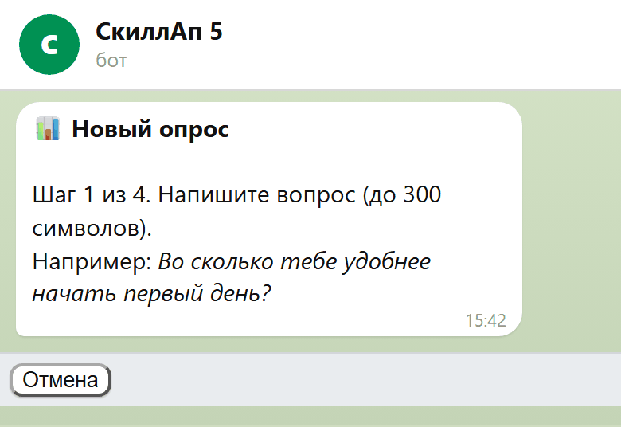
Шаг 1 мастера опроса. Отмена: кнопка «Отмена» или /cancel. - Шаг 2. Пришлите варианты ответа: по одному сообщением или сразу несколько через «;» (например:
10:00; 11:00; 12:00). От 2 до 10 вариантов, каждый до 100 символов. Закончили: «✅ Готово». - Настройки. «⚪/🟢 Анонимный опрос»: делегаты не видят, кто как голосовал, а вы получите только итоги по вариантам, без имён. «⚪/🟢 Несколько вариантов»: можно выбрать больше одного. Затем «Дальше ➡️».
- Шаг 3. Кому: «👥 Все делегаты» или «✅ Только одобренные», либо по треку, то есть по виду анкеты, которую заполнил человек: полная, вечеринка, краткая.
- Шаг 4. Бот присылает закрытую копию опроса (голосовать в ней нельзя) и спрашивает: «🚀 Отправить сейчас» или «🕒 Запланировать» (дата в формате
ДД.ММ.ГГГГ ЧЧ:ММ, по Москве). Число получателей написано на этом же экране.

После отправки бот напишет: «📊 Опрос #N отправлен. ✅ Доставлено: X ❌ Недоступно: Y». Идущую отправку опроса остановить нельзя, поэтому внимательно читайте шаг 4.
Результаты и закрытие
Нажмите на опрос в списке. Бот покажет полоски по вариантам и «Ответили: X из Y получивших».

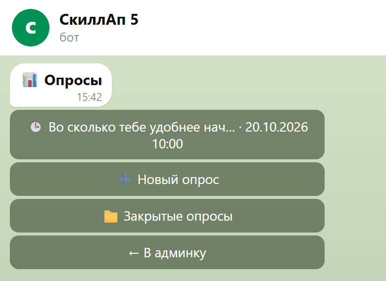
Подробнее: кнопки опроса
- «⏹ Закрыть опрос».
- «📄 В таблицу» перезаписывает вкладку «Опросы» целиком.
- «🗑 Удалить» с подтверждением: пропадут все ответы.
- Для запланированного опроса есть «❌ Отменить отправку».
Типов «викторина» и «оценка» нет, только один или несколько вариантов, анонимно или по людям.
Таблица Google: что можно и нельзя
В этой главе: Как открыть Список участников Кнопки «📊 Данные» Строка не попала
Зачем это. Чтобы пользоваться таблицей и не сломать то, что бот пишет в неё сам.
У каждого события своя Google-таблица. Бот сам пишет в неё каждую заявку и обновляет статус. Главная копия данных хранится в самом боте, а таблица её повторяет. Для просмотра, фильтров и совместной работы она удобна.
Как открыть таблицу
Ссылки на таблицу в админке бота нет. Попросите ссылку и доступ у руководителя события или у владельца бота @qleafye. Чтобы только смотреть, хватит доступа «Читатель»; чтобы красить строки и писать свои колонки, нужен «Редактор».
С компьютера таблица открывается в браузере, с телефона удобнее приложение «Google Таблицы». Сохраните ссылку в закладки.
Статус, поправленный в таблице руками, в бота не возвращается. Решения принимайте в боте.
Подробнее: какие вкладки есть
| Вкладка | Что в ней |
|---|---|
| Регистрации | Основная: по строке на делегата. Колонки зависят от набора вопросов анкеты. Например, на СкиллАп 5: ID Телеграм, Username, Дата регистрации, Статус, ФИО, Детали, Балл, IT 3+, Телефон, ВК, Город, Образование, Курс, ВУЗ, Направление обучения, Стек, Опыт работы, Готовность, Цель участия, Источник, резюме (текст, ссылка, способ, проверка, ссылка на профиль), Проекты, Портфолио, Направление развития, Кейс-чемпионат, Пришёл, В чате. |
| Незавершённые | Кто начал анкету и бросил: на каком вопросе остановился, что успел ответить. Переписывается целиком каждые 2 часа и по кнопке «📝 Незавершённые → таблица». |
| История правок, Вопросы | Журнал правок анкет и вопросы делегатов. Обновляются сами, ручное обновление: «🕓 Журналы в таблицу». |
| Вкладки модулей | Появляются, когда модуль включён: краткая форма, вечеринка, вкладки городов, геймификация («🎮 Гейма (матрица)», «🕓 История сдач»), «🎯 Отобранные (предотбор)», «📊 Опросы», автоотказы, копии внешних форм. Имена задаются в «📊 Данные» → «📄 Вкладки таблицы». |
| Лист1 | Если осталась с создания таблицы, пустая и боту не нужна. Можно удалить. |
Колонка «Статус» принимает «Новая» (жёлтая), «Одобрена» (зелёная), «Отклонена» (красная).
Нужен список участников
Руководитель просит «скинь список участников»? Обычно это значит одобренных делегатов. Готовой кнопки «список одобренных» в боте нет, удобнее всего взять его из Google-таблицы.
- Откройте таблицу события (как открыть) и основную вкладку, обычно «Регистрации». Если городов несколько, у каждого города своя вкладка.
- Включите фильтр: «Данные» → «Создать фильтр». В колонке «Статус» оставьте только «Одобрена».
- Если таблицу не заводили заново после прошлого события, в ней остались и прошлые делегаты. Проверьте по колонке «Дата регистрации».
- Нужен файл? Сделайте копию таблицы («Файл» → «Создать копию») и работайте в копии: удалите строки, где статус не «Одобрена», и колонки, которые получателю не нужны (телефон, резюме, ВК). Потом «Файл» → «Скачать» → «Microsoft Excel». В основной таблице строки и колонки не удаляйте: её ведёт бот.
Подробнее: почему не «📄 Экспорт CSV»
Кнопка «📄 Экспорт CSV» в разделе «📊 Данные» (и команда /export) присылает файл, но он для сверки, а не для списка участников. Нужно право «📊 Статистика»: у роли «🛂 Менеджер регистраций» его по умолчанию нет. В файле все, кто когда-либо отправлял анкету: одобренные, отклонённые, ждущие решения и делегаты прошлых сезонов. Статус там записан по-английски, а не «Одобрена», и есть служебные колонки, которые человеку ничего не скажут. Если городов несколько, кнопка выгружает город, выбранный в шапке раздела, а /export выгружает всех.
Что можно делать руками
- Смотреть, фильтровать, сортировать. Строки находятся по ID в колонке A, а не по номеру строки.
- Добавлять свои колонки правее последней колонки бота.
- Красить, закреплять строки, делать копии таблицы и ссылаться на неё из других таблиц.
Чего делать нельзя
- Переименовывать вкладки. Бот ищет вкладку по имени. Если переименовать, он создаст новую пустую вкладку с прежним названием, а старая перестанет обновляться. Нужно новое имя? Меняйте в боте: «📊 Данные» → «📄 Вкладки таблицы». Бот предложит «✏️ Переименовать вкладку» с сохранением данных.
- Вставлять, удалять и переставлять колонки среди колонок бота, менять заголовки в первой строке, удалять шапку.
- Править ID Телеграм и ставить текст в колонку A.
- Хранить свои заметки в колонках бота и на вкладках, которые бот перезаписывает («Незавершённые», «История правок», «Вопросы»). При перезаписи они пропадут.
Подробнее: почему нельзя трогать колонки
Заголовки «Статус», «Пришёл» и «В чате» бот находит по тексту, остальное пишет по позиции. Колонка, вставленная посреди, сдвинет все новые записи.

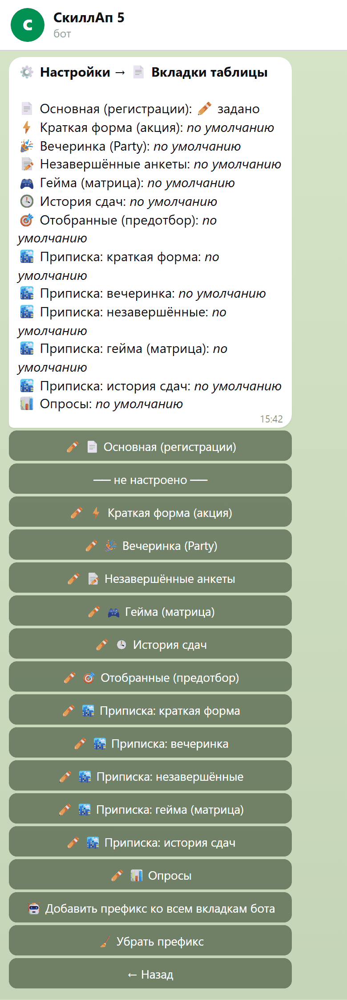
Кнопки раздела «📊 Данные» для таблицы
Три кнопки безопасны, две стирают данные и просят подтверждение. Перед «♻️ Пересобрать таблицу» сделайте копию: «Файл» → «Создать копию».
Подробнее: что делает каждая кнопка
| Кнопка | Что делает | Опасность |
|---|---|---|
| «🔄 Синхронизация таблицы» | Дописывает в таблицу делегатов, которых там нет по ID. Ничего не стирает. Итог: «✅ Синхронизация завершена! Добавлено записей: N» или «✅ Таблица синхронизирована, пропущенных записей нет.». | Безопасна |
| «🔍 Сверить с БД» | Сравнивает таблицу и базу. В отчёте: вкладки, которых нет; делегаты без строки; строки не на своей вкладке; дубли; расхождение статуса; «📨 Решения не доставлены». Сама ничего не меняет, пока не нажмёте одну из кнопок действий: «➕ Дописать недостающие строки», «🔄 Выправить статусы», «📨 Переотправить решения» (каждая с подтверждением), «📥 Полный список (CSV)». | Безопасна. Каждое действие называет число строк |
| «♻️ Пересобрать таблицу» | Очищает основную вкладку целиком и заполняет заново из базы: правильный порядок колонок, выпадающий список статуса, цвета. Нужна после смены набора вопросов. | Стирает ручные правки и заметки. Бот просит подтверждение. Сначала сделайте копию: «Файл» → «Создать копию» |
| «🧹 Убрать дубли из таблицы» | Удаляет повторные строки с одним ID, оставляет самую свежую. | Удаляет целые строки вместе с заметками на старой. Просит подтверждение |
| «📝 Незавершённые → таблица» | Обновляет вкладку «Незавершённые» и пишет «📊 Где отваливаются» (на каких вопросах бросают). | Очищает вкладку «Незавершённые» и пишет заново |
| «📄 Вкладки таблицы», «🕓 Журналы в таблицу» | Имена вкладок и автообновление журналов. Если переименуете вкладку, бот предложит либо переименовать её в таблице (данные останутся), либо создать новую пустую. | Читайте экран, он объясняет последствия |
Подтверждение у «♻️ Пересобрать таблицу» начинается словами «Перезапишу на основной вкладке шапку и все строки из базы бота…» и предупреждает: «Любые ручные правки и заметки, которых нет в базе бота, пропадут безвозвратно». Если менеджеры что-то дописывали руками, сохраните копию.

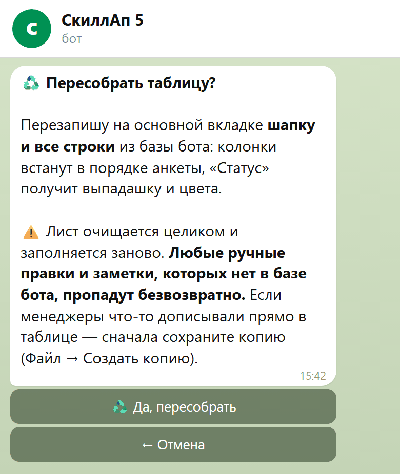
Для «🧹 Убрать дубли из таблицы» бот тоже показывает подтверждение с числом строк.

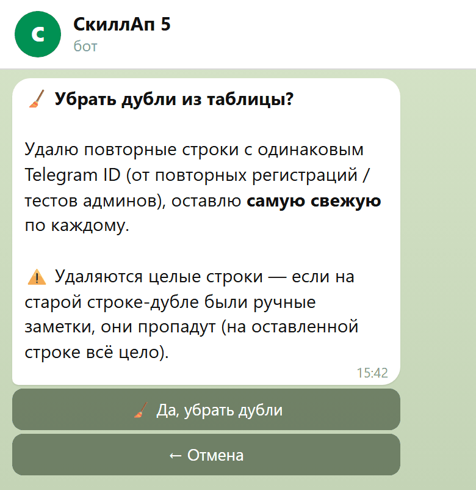
А так выглядит экран «🕓 Журналы в таблицу»: через него журналы правок и вопросов обновляются вручную.

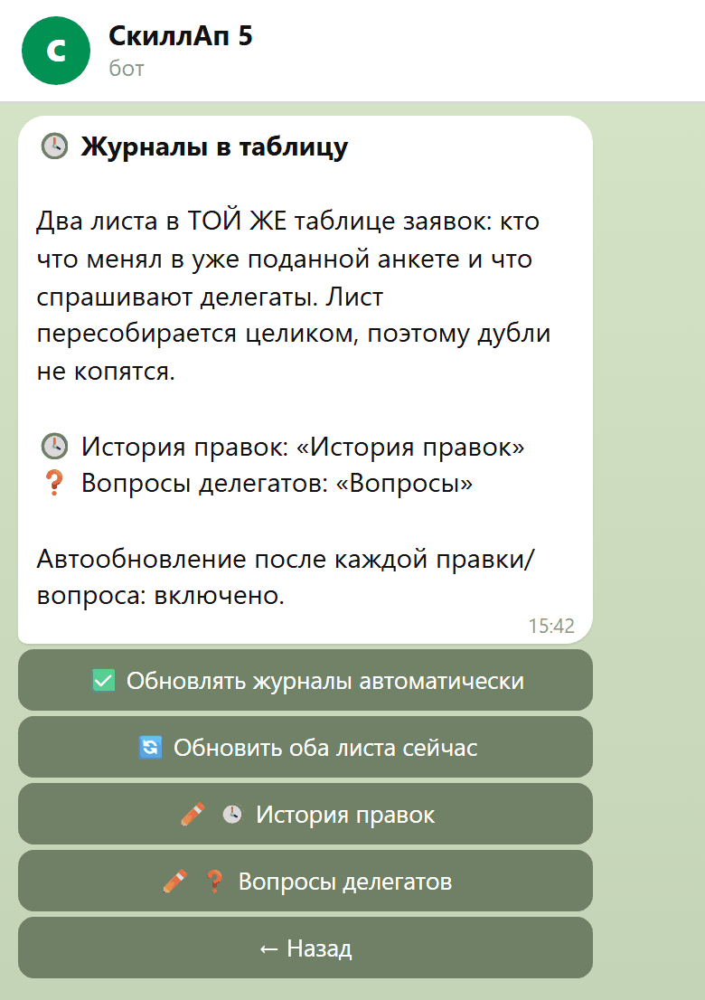
Если строка делегата не попала в таблицу
Иногда связь обрывается в момент записи, и строка в таблице пропадает. В базе при этом всё есть. Запустите «🔍 Сверить с БД» и нажмите «➕ Дописать недостающие строки».
Если вместо этого бот сказал «⚠️ Google Sheets: основная вкладка не задана» или «Основная вкладка Google-таблицы не задана», задайте её: «📊 Данные» → «📄 Вкладки таблицы» → «📄 Основная (регистрации)».
Подробнее: где лежит резюме
Файл резюме хранится в Телеграм (получить: «📎 Резюме» в карточке заявки) и в облаке. В таблице лежит ссылка на файл в колонке «Резюме (ссылка)».
Облако при открытии один раз просит пароль общей папки. Пароль даёт владелец бота @qleafye. Если облако не отвечает, заявка всё равно сохраняется, а ссылка появится позже сама.
Статистика и дашборд
Зачем это. Чтобы видеть, сколько заявок пришло, откуда и где люди бросают анкету.
Статистика в боте
Нужно право «📊 Статистика». Откройте раздел «📊 Данные» или используйте команды.
- «📊 Статистика регистраций» (
/stats): всего регистраций (все статусы, включая отклонённых), топ-3 вуза, «🔁 Повторных» (были на прошлом событии). Сверху кнопка «🌐 Открыть дашборд». - «🗓 Регистрации по месяцам» (
/stats_monthly): по датам подачи. - «📈 Источники»: откуда пришли заявки (ответы на «Откуда узнал» и метки ссылок).
- «📄 Экспорт CSV» (
/export): файл со всеми данными делегатов. CSV это простая таблица в файле, её открывают Excel и Google Таблицы. Разделитель «;», кодировка для Excel. В файле все, кто отправлял анкету, с любым статусом и за все сезоны. Список участников удобнее брать из таблицы: как это сделать.

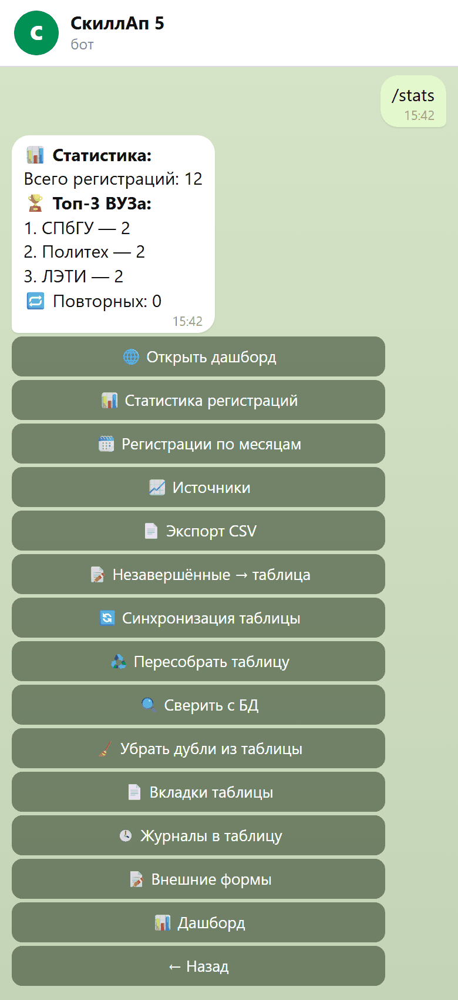
Ссылки с метками
Чтобы понять, какая реклама приводит людей, сделайте отдельную ссылку на каждую площадку. Откройте «📊 Данные» → «🔗 Ссылки с метками» (право «🔗 Ссылки с метками») или отправьте команду /create_link vk_poster.
Метка состоит из латинских букв, цифр, «_» и «-», без пробелов. Бот даст ссылку вида https://t.me/бот?start=src_vk_poster, а регистрации по ней появятся в «📈 Источники».
Подробнее: что ещё нужно знать про метки
Тем, кто пришёл по такой ссылке, вопрос «Откуда узнал» не задаётся. Метка появляется в списке после первой анкеты, поданной по ней.

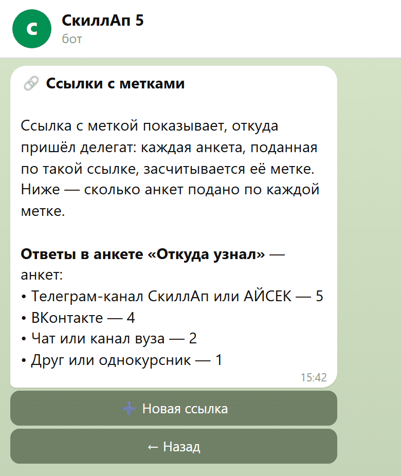
Сводки, которые бот присылает сам
- «📋 Заявок в ожидании: N…» менеджерам заявок, по умолчанию раз в 30 минут (как поменять).
- «📊 Итоги дня»: вечерняя сводка по заявкам, одобрениям и отказам, автоотказам, геймификации и тем, кто не получает уведомления бота. Включается тумблером «📊 Итоги дня менеджерам» в «🔧 Управление», по умолчанию выключен. Сводка приходит в 21:00. Нужно другое время, напишите @qleafye. Если день пуст, сводка не отправляется. 🏙 только несколько городов При включённых городах сводка приходит по каждому городу.
- В дни форума «📊 Отчёт дня форума» (подробнее).
Веб-дашборд
Это страница со статистикой по всему событию: воронка, динамика по дням, вузы, источники. У каждого события свой адрес. Его даёт кнопка «🌐 Открыть дашборд» под статистикой в вашем боте: откройте один раз и сохраните в закладки. Данные считаются при открытии страницы, поэтому для свежих цифр перезагрузите её.
Как войти
- Откройте адрес дашборда или кнопку «🌐 Открыть дашборд» под статистикой в боте. В приложении есть плитка «Дашборд»: её видят все менеджеры, но войти получится только с правом «📊 Статистика».
- На странице входа нажмите кнопку Телеграм и подтвердите вход. Сессия живёт 30 дней.
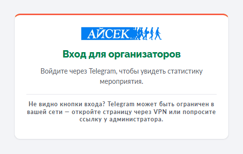
Страница входа. В этой съёмке кнопка входа через Телеграм не загрузилась, поэтому под текстом пусто. У вас здесь будет кнопка входа. Если её нет, смотрите «Частые проблемы». - Если бот пишет «Нет доступа», попросите выдать вам право «📊 Статистика» и нажмите «Проверить доступ ещё раз».
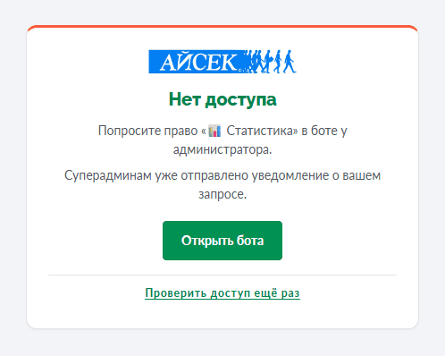
Если права «📊 Статистика» нет, показывается «Нет доступа». Суперадмины получают уведомление о вашем запросе.


Что на дашборде
Сверху шапка, быстрое оглавление и плитки «Сейчас»: «Всего заявок», «Сегодня», «За 7 дней» (с сравнением с прошлой неделей), «На модерации» и сколько ждёт самая старая.

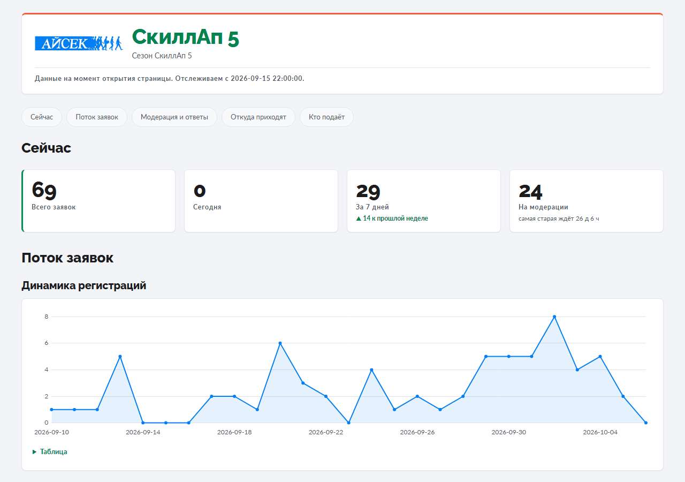
«Поток заявок»: «Динамика регистраций», «Воронка регистрации» (от «Зашли» до «Одобрено»), «Где бросают» (на каких вопросах уходят) и таблица по месяцам.

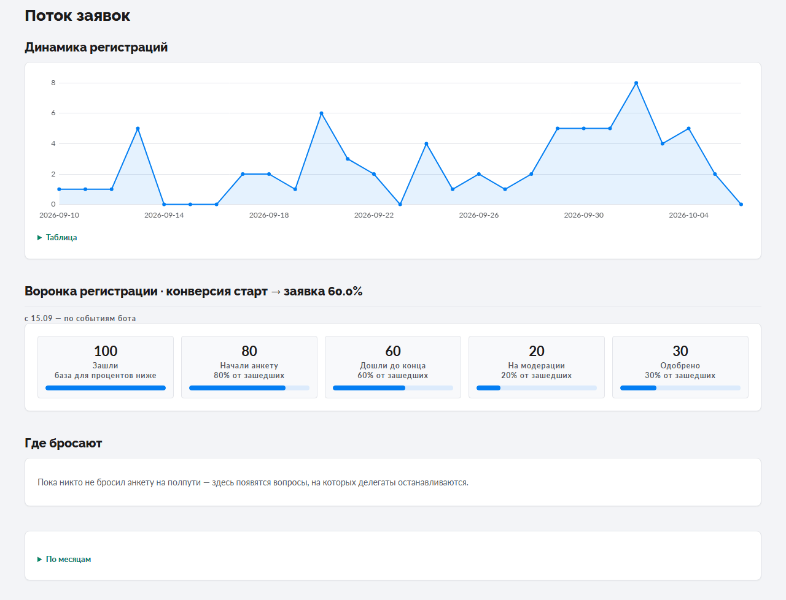
«Модерация и ответы»: «Среднее время обработки» (от подачи до решения) и «Вопросы делегатов».

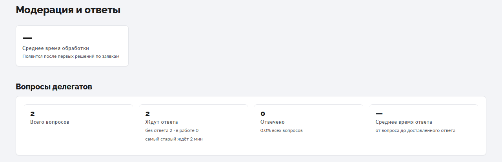
«Кто подаёт»: срезы по вузу, курсу, направлению обучения.

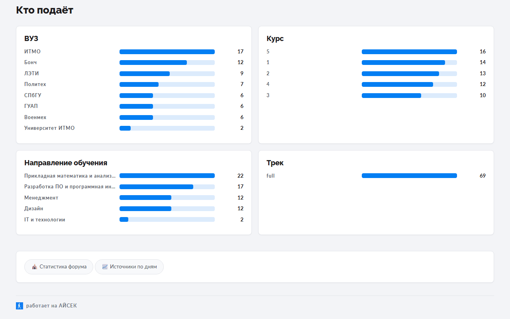
«Откуда приходят»: «Метки кампаний», «Каналы» (источники), «Рефералы». Ниже блоки модулей: «Гейма», «Амбассадоры», «Делегации». Блок выключенного модуля не показывается вовсе, а не пустой. Если на событии есть учёт чата, рейтинг чата лежит на отдельной странице «💬 Чат».
Какие блоки показывать
Откройте «📊 Данные» → «📊 Дашборд». Там галочки блоков. Выключенный блок просто не рисуется, данные не пропадают.
Подробнее: список блоков
«🪜 Воронка», «📈 Динамика по дням», «🏫 ВУЗы», «📢 Источники», «📖 Курсы», «🎯 Направления», «🚪 Где бросают», «🔗 Метки кампаний (UTM)» (UTM это метки в рекламных ссылках, по ним видно, откуда пришёл человек), «📅 По месяцам», «🎮 Гейма», «🏅 Амбассадоры», «🔗 Рефералы», «🏫 Делегации». Название дашборда в шапке берётся из названия события.

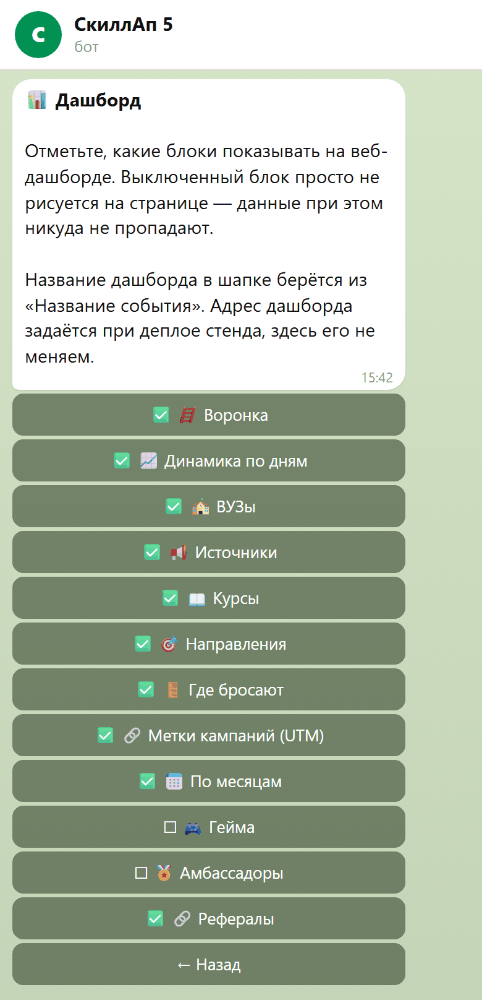
Дашборд открывается и с телефона: оглавление уезжает в горизонтальную полосу сверху, плитки встают по две.

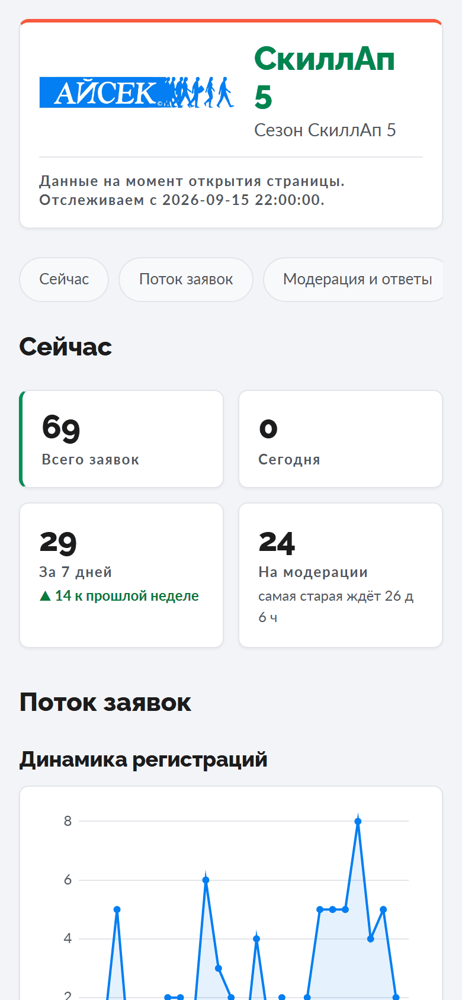
Частые проблемы
В этой главе: Готовые ответы Анкета зависла /admin молчит Делегату не пришло Дашборд Бот не отвечает
Зачем это. Чтобы за минуту понять, что делать, когда что-то не работает.
Нажмите на симптом, который видите. Внутри причина, что сделать самому и когда писать владельцу бота. Сначала проверьте очевидное на стороне человека: нажимал ли он «Начать», есть ли у него роль, правильно ли набрано.
Готовые ответы делегату
Скопируйте и поправьте под себя. В квадратных скобках то, что нужно подставить.
«Мне ничего не пришло» (одобрение, ответ, рассылка)
«Похоже, бот не может тебе написать. Открой бота [@ник_бота]. Если внизу кнопка «Разблокировать», нажми её, а потом отправь /start. Напиши мне, когда сделаешь, и я отправлю сообщение заново».
Как отправить заново: «Делегат пишет, что ему не пришло одобрение».
«Анкета зависла», «бот не отвечает на кнопки»
«Бот перезапускался, но твои ответы сохранились. Нажми, пожалуйста, /start и выбери «Продолжить» — продолжишь с того же вопроса».
«Когда будет решение?»
«Мы разбираем заявки по очереди, решение придёт в этот же чат с ботом до [дата]. Не блокируй бота, иначе сообщение не дойдёт».
Ошибочное письмо об одобрении или отказе
Образец есть в разделе «Случайно одобрили или отклонили не того».
Делегат пишет, что «анкета не работает» или «бот молчит», а вам бот отвечает
Сначала проверьте Отправьте /start своему боту сами. Ответил приветствием или вопросом анкеты — бот работает, дело в анкете делегата: читайте дальше. Анкету в ответ не заполняйте. Молчит — вам в пункт «Бот не отвечает совсем».
Причина Бот иногда перезапускается. В этот момент он забывает, на каком вопросе остановился человек, и перестаёт реагировать на кнопки анкеты. Ответы, которые человек уже дал, при этом сохранены.
Что сделать Попросите нажать /start: бот покажет кнопку «▶️ Продолжить с шага N из M», и человек продолжит с того же места. Если человек просто написал боту любое сообщение, бот сам ответит «🔄 Бот перезапускался, но твоя анкета сохранена — продолжим?».
Если и после /start анкета не идёт, найдите человека через /find и нажмите «🧹 Сбросить зависшую анкету». Начатое удалится, и он заполнит анкету с начала.
Что ответить делегату Готовый текст в блоке «Готовые ответы делегату»: «Анкета зависла».
Когда писать @qleafye Пишите, если после /start кнопки «Продолжить» нет или она не работает.
Я пишу /admin, а бот молчит или пишет «Недостаточно прав»
Причина У вас нет роли, она выключена или истекла. Молчание это штатное поведение для человека без прав. «Недостаточно прав» значит, что роль есть, но не на эту кнопку.
Что сделать Попросите того, у кого есть «⚙️ Настройки», открыть «🔧 Управление» → «👥 Роли и доступы» и проверить: вы в списке, роль включена, у роли отмечены нужные права, срок не истёк («⌛ истекла»). Потом нажмите /start и повторите.
Когда писать @qleafye Пишите, если всё верно, а доступа нет и после перезапуска Телеграм.
Не получается выдать роль: «Не понял, кого добавить» или «не найден в базе бота»
Причина Человек ни разу не нажимал «Начать» у бота либо скрыл аккаунт при пересылке.
Что сделать Попросите нажать «Начать» (одного раза достаточно) и повторите с @ником. При скрытой пересылке пришлите ник или числовой номер. Если ник менялся, используйте номер (он виден в карточке /find).
Когда писать @qleafye Пишите, если человек нажал «Начать», а бот всё равно не находит ни по нику, ни по номеру.
Менеджер не получает сводки и вопросы делегатов
Причина Он не нажимал «Начать» или заблокировал бота. Телеграм не даёт боту писать первым.
Что сделать Посмотрите «👥 Роли и доступы»: у такого человека будет «⚠️ не получает уведомления…» (но только после первой неудачной отправки). Попросите его открыть бота и нажать «Начать». Отметка снимется сама.
Суперадмины получают отдельное сообщение об этом не чаще раза в сутки на человека.
Когда писать @qleafye Пишите, если человек нажал «Начать», а уведомления всё равно не идут.
Делегат пишет «мне не пришло одобрение» или «не отвечают на вопрос»
Причина Скорее всего, он заблокировал бота или не открывал его. Вам бот при этом показал «Одобрено» или «Ответ отправлен», потому что письмо уходит фоном.
Что сделать Откройте «📊 Данные» → «🔍 Сверить с БД» и найдите блок «📨 Решения не доставлены». Там названа причина («бот заблокирован делегатом», «пользователь удалён», «чат не найден»).
Если бот не заблокирован, нажмите «📨 Переотправить решения». Если заблокирован, бот ему не напишет: пошлите ссылку или ответ лично.
Ответ на вопрос в таких случаях бот сам подсвечивает: «❌ Доставить ответ невозможно…».
Когда писать @qleafye Писать не нужно.
Случайно одобрили или отклонили не того
Что сделать /find @ник → «↩️ Вернуть в ожидание» → решите, включать ли «🔔 Сообщить делегату» → «✅ Вернуть в ожидание». Письмо, которое уже ушло, отозвать нельзя: напишите человеку сами. Пошагово и с образцом текста: «Случайно одобрили или отклонили не того».
Рассылка дошла не всем («❌ недоступно»)
Причина Часть людей заблокировала бота или не открывала его. Телеграм даёт одну и ту же ошибку для обоих случаев.
Что сделать Попросите их разблокировать бота и нажать «Начать». Для важного напишите лично. Поимённого списка бот не показывает.
Когда писать @qleafye Писать не нужно.
Бот говорит «❌ Не понял дату»
Причина Дата введена не в том формате.
Что сделать Вводите точно так: 31.10.2026 14:30 (день.месяц.год, пробел, часы:минуты, московское время). Для даты без времени: 15.10.2026. В программе форума дни вводятся как 31.10 или 31.10.2026, а время сессии как 10:00-11:30.
Я вставил список в несколько строк, а сохранилась только первая
Причина В мобильном Телеграм Enter отправляет сообщение, а бот обрабатывает одно сообщение за раз.
Что сделать Пишите пункты одной строкой через «;» (в списках вариантов, согласиях, вариантах опроса, правах роли) или добавляйте пункты по одному кнопкой «➕ Добавить пункт». Либо вводите с компьютера.
Новые заявки не появляются в таблице, или появилась вторая вкладка, или не хватает колонок
Причина По убыванию вероятности:
- Вкладку переименовали или переставили, и бот создал новую вкладку с прежним именем.
- Не задана основная вкладка.
- Оборвалась связь в момент записи: строка в базе есть, в таблице нет.
- Скрытые колонки или фильтр в таблице.
Что сделать Верните прежнее имя вкладки или задайте новое в «📊 Данные» → «📄 Вкладки таблицы». Для пропавших строк: «🔍 Сверить с БД» → «➕ Дописать недостающие строки» (или «🔄 Синхронизация таблицы»). Прежде чем звать разработчика, проверьте глазами: нет ли скрытых столбцов, фильтра, открытой копии таблицы.
Когда писать @qleafye Пишите, если после сверки строки не появились и вкладка названа верно.
Дашборд пишет «Нет доступа» или «Вход временно недоступен», либо не показывает кнопку входа
«Нет доступа» Нет права «📊 Статистика». Выдайте роль с этим правом и нажмите «Проверить доступ ещё раз».
Кнопки Телеграм не видно Чтобы понять, у кого проблема, попробуйте другую сеть (мобильный интернет вместо Wi‑Fi или наоборот) или другое устройство и обновите страницу. Не помогло, напишите @qleafye.
«Не удалось подтвердить вход через Telegram» Подпись входа просрочена (старше суток) или время на телефоне неверное. Откройте страницу входа заново и сразу нажмите кнопку.
«Вход временно недоступен…» Вход на дашборд не подключён. Сами вы это не исправите. Запуск, обновление и подключение бота делает @qleafye — напишите ему.
Нет блока «Гейма», «Амбассадоры» или подписи «реальных N» на дашборде
Причина Модуль выключен, и его блок не рисуется. Либо выбран другой «Город» или «Сезон» в шапке.
Что сделать Откройте «📊 Данные» → «📊 Дашборд» (тумблеры блоков) и проверьте переключатели в шапке страницы.
Когда писать @qleafye Пишите, если модуль включён, данные есть, а блока нет.
Приложение: «Откройте через бота», «Сессия истекла», «Приложение выключено», нет кнопки приложения
«Откройте через бота» Приложение открыто не из бота. Откройте его кнопкой бота или «Войти через Telegram» (для менеджеров).
«Сессия истекла — откройте приложение заново.» Закройте и откройте снова из бота.
«Приложение временно недоступно» Приложение выключено: включите «Mini App включён» в «🎨 Оформление» в боте.
Нет кнопки Проверьте тумблеры на экране «🎨 Оформление» (включено ли приложение, не стоит ли «Только менеджерам») и кнопку «📱 Приложение» в «🔘 Кнопки меню». Закройте и откройте чат, нажмите /start. Если на экране «🎨 Оформление» написано «⚠️ Адрес приложения не задан», пишите @qleafye.
Карточка «Нет доступа» на главном экране Откройте раздел по «На главную» и проверьте, есть ли у вашей роли нужное право и включена ли галочка раздела. Если карточка появляется сразу при открытии, напишите @qleafye.
Картинка не грузится Загрузите её заново в «🎭 Пресеты и ручки оформления» именно как фото.
«Исправили, а в приложении или дашборде по-старому»
Причина Телеграм и браузер могут держать старую версию страницы в памяти.
Что сделать Закройте приложение полностью и откройте заново. Дашборд обновите (Ctrl+F5).
Когда писать @qleafye Если после этого всё равно старое: обновление делает @qleafye.
У делегата нет кнопки «🎟 Мой QR», «🆘 SOS» или меню дня форума
Причина Не задана «🗓 Дата начала форума» для его города, выключен общий выпуск QR или сегодня не день форума: «🆘 SOS» видна только в дни форума («🗓 Сколько дней идёт форум»).
Что сделать Откройте «📋 Заявки» → «🎪 Форум: функции» → «🚦 Готовность к форуму» и исправьте красные строки. Проверьте «🔘 Кнопки меню». Попросите делегата нажать /start, чтобы меню обновилось.
Когда писать @qleafye Пишите, если дата задана, светофор зелёный, а кнопки нет после /start.
Рассылка QR или отзыв о сессии ушли не в то время
Причина У города не задан часовой пояс, и бот считает время по Москве.
Что сделать «🎪 Форум: функции» → «🕐 Часовой пояс» → выберите пояс города. Рассылки QR переставятся сами. Помните, что время шпаргалки, отчёта дня и опроса неявившихся вводится по Москве.
Правило автоотказа стоит с ⚠️ или отклоняет слишком многих
Причина Значок ⚠️ значит, что правило на паузе: выключили вопрос анкеты или вариант ответа, на который оно опирается. Слишком широкое правило обычно собрано не из тех условий.
Что сделать Откройте правило, поправьте условие или удалите его кнопкой «🗑 Удалить условие» и включите снова. Если правило уже отклонило лишних, верните их по одному: «🤖 Автоотказы» → «↩️ Вернуть: имя». Чтобы остановить всё разом, руководитель без привязки к городу нажимает «🚫 Выключить все правила».
Когда писать @qleafye Пишите, если правило отклоняет заявку, которая под условие не подходит.
Делегат из формы вуза не одобрен автоматически
Причина Бот ищет делегата только по нику из формы. Если ник в форме с ошибкой или человек ещё не открывал бота, он попадёт в «⏳ Не зашли». Если бот не уверен в курсе, ответ ждёт в «❔ Проверить курс». Если человеку раньше отказали в боте, бот молча не одобряет.
Что сделать «📋 Заявки» → «🏫 Делегации»: решите карточки в «❔ Проверить курс», в «⏳ Не зашли» привяжите человека по нику или пересланному сообщению.
Нет раздела «🤝 Амбассадоры» в админке
Причина Выключен модуль «🤝 Отбор амбассадоров». Тогда «🌊 Волны» и «🎓 Ступени амбассадоров» лежат в разделе «🎮 Геймификация».
Что сделать Если отбор нужен, сделайте три шага: включите тумблер «🎮 Геймификация» → «⚙️ Тексты и настройки» → «🤝 Отбор амбассадоров», затем в появившемся разделе «🤝 Амбассадоры» → «🚪 Вход и лимит» переключите способ входа на «🗳 Отбор менеджером» и задайте число мест. Одного тумблера мало: без второго шага бот продолжит брать в команду всех сразу. Нужен ли отбор вам, подскажет глава про амбассадоров.
Бот не отвечает совсем
Причина Чаще всего это сбой связи между ботом и Телеграм: бот работает, но не получает сообщения.
Как понять, что это ваш случай Вы сами отправили /start своему боту, и он молчит. Если вам бот отвечает, а не отвечает только делегату, смотрите пункт «анкета не работает».
Что сделать Подождите от 5 до 10 минут. Потом попросите коллегу отправить /start вашему боту со своего телефона. Коллеге бот ответил — бот работает, дело в связи у вас: переключитесь с Wi‑Fi на мобильный интернет или наоборот и попробуйте снова. Ботов других событий для проверки не открывайте.
Когда писать @qleafye Пишите, если бот молчит и у коллеги. Укажите время и симптом («не отвечает с 14:20»).
Вход и роли
В этой главе: Как попасть Выдать роль Кто что видит «Не получает уведомления» Глазами делегата
Зачем это. Чтобы попасть в админку и выдать доступ новому менеджеру.
Как попасть в админку
Админка открывается командой /admin в личной переписке с ботом. Отдельной кнопки у делегатов нет, а сама админка состоит из кнопок под сообщениями.
- Если роль есть, вы увидите «👮♂️ Панель администратора», список ваших команд и кнопки разделов.
- Если роли нет или она истекла, бот молчит: не пишет ошибку и ничего не подсказывает. Уверены, что роль выдана? Нажмите
/start, повторите/admin, а затем проверьте экран «👥 Роли и доступы» (его откроет тот, кто выдавал роль). - Если у вас ровно один доступный экран (например, только очередь чеков), бот откроет его сразу, минуя меню.
- Если вы видите «Недостаточно прав», роль у вас есть, но не на эту кнопку.
Как выдать роль, шаг за шагом
Нужно право «⚙️ Настройки». Заранее попросите человека открыть бота и нажать «Начать». Иначе роль получится выдать только по числовому номеру, а уведомления до человека не дойдут.
- Отправьте
/adminи откройте «🔧 Управление» → «👥 Роли и доступы». Сверху шесть ролей с правами и переключателями, ниже список людей с их ролями и сроком, затем суперадмины. Под сообщением кнопки: по паре на каждую роль, «➖» и «⏳» на каждого человека, «➕ Добавить менеджера» и «🔗 Пригласить волонтёров».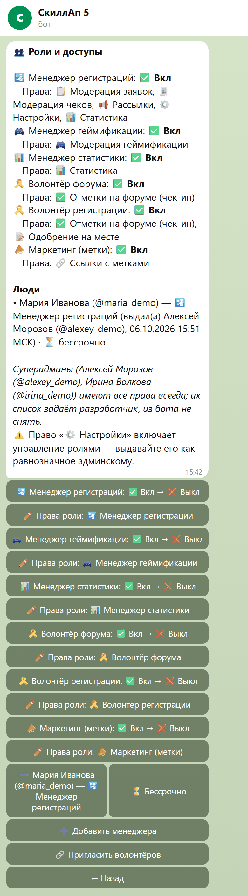
Экран «👥 Роли и доступы»: шесть ролей, люди и суперадмины. Имена на картинке вымышленные. - Нажмите «➕ Добавить менеджера». Бот спросит, кого добавить.
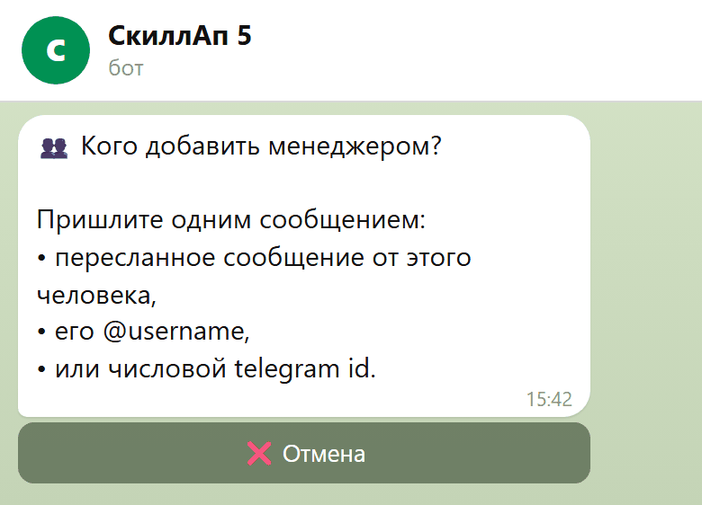
Шаг 2: бот просит прислать человека. Вместо кнопки можно написать слово «Отмена» или /cancel. - Пришлите одним сообщением одно из трёх. Проще всего
@никколлеги, например@ivan_ivanov. Ещё можно переслать сюда, в чат с ботом, любое его сообщение или прислать числовой Телеграм-номер.- Пересылка работает, только если у человека разрешено показывать аккаунт при пересылке.
- Номер человек узнаёт сам (например, у сторонних ботов). У делегата, подавшего анкету, номер виден в карточке
/find.
- Выберите роль кнопкой. Чтобы человек одобрял заявки и отвечал на вопросы делегатов, выберите «🛂 Менеджер регистраций». «🎗 Волонтёр форума» и «🎗 Волонтёр регистрации» нужны только на самом форуме: отметки на входе, а у второго ещё одобрение у стойки. Остальные роли описаны в «Кто что видит». Бот ответит «Добавлен» или «Уже был в этой роли». Одному человеку можно выдать несколько ролей.
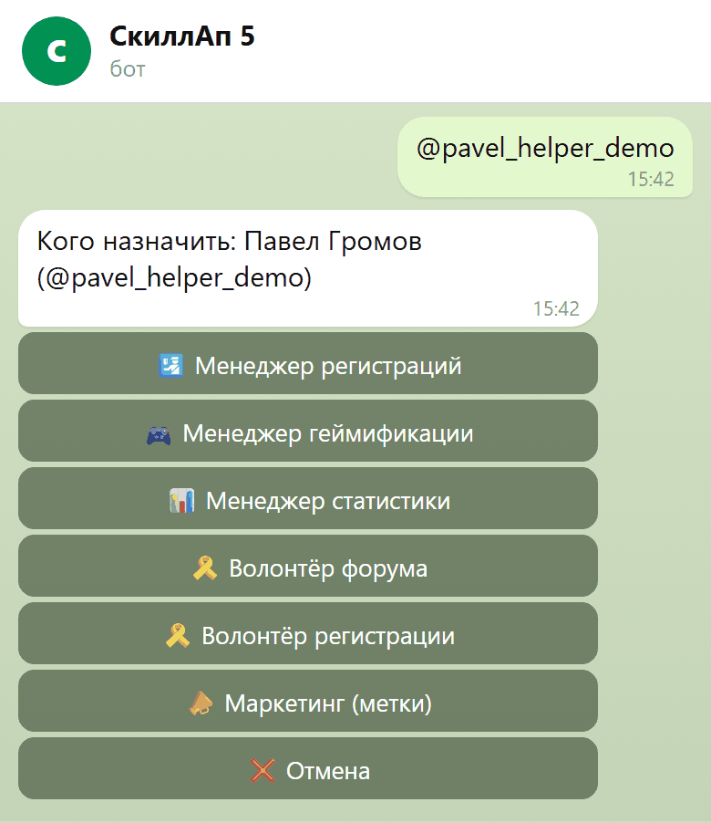
Шаг 4: выбор роли. Над кнопками написано, кого вы назначаете. - Скажите человеку лично, что роль выдана. Бот ему ничего не напишет (исключение: волонтёру приходит шпаргалка). Права читаются при каждом нажатии, перезапуск не нужен.


Подробнее: если бот отвечает «Не понял, кого добавить»
- «Не понял, кого добавить. Пришлите пересланное сообщение от человека, @username или числовой id.»: вы прислали что-то другое.
- «В этой пересылке нет аккаунта человека…»: у человека скрыта пересылка, попросите ник или номер.
- «Пользователь @имя не найден в базе бота — попросите числовой id.»: человек ни разу не нажимал «Начать». Попросите нажать и повторите.
Подробнее: права роли, срок и как снять роль
- Права роли. Кнопка «✏️ Права роли: …» открывает галочки (✅ разрешено, ☐ нет). Нажатие сохраняется сразу и действует на всех людей этой роли. Если снять все галочки, роль временно ничего не может, а люди остаются в списке.
- Выключить роль целиком. Верхняя кнопка пары: «🛂 Менеджер регистраций: ✅ Вкл → ❌ Выкл». Подпись показывает, что произойдёт при нажатии.
- Срок. Кнопка «⏳ Бессрочно» в строке человека. Можно выбрать «♾ Бессрочно» или «✏️ Ввести дату» в формате
04.10.2026. Роль действует по этот день включительно. После срока она не даёт прав, а строка остаётся с пометкой «⌛ истекла». - Снять роль. Кнопка «➖ имя — роль». Бот спросит «Снять роль «…» с …?» и перечислит, к чему человек потеряет доступ. Кнопки «Да, снять» и «Отмена».

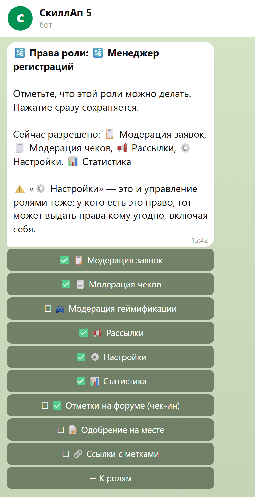
Кто что видит
Право это одна возможность в админке. Роль это набор прав, который выдаётся человеку целиком. У человека может быть несколько ролей, права складываются.
Подробнее: девять прав
Названия прав в таблице совпадают с теми, что вы увидите на экране «✏️ Права роли».
| Право | Что открывает |
|---|---|
| «📋 Модерация заявок» | Раздел «📋 Заявки»: очередь, список, вопросы делегатов, частые вопросы, «🆘 SOS», «🎪 Форум: функции». Команды /find, /create_link. В приложении: «Отбор заявок», «Вопросы делегатов», «Частые вопросы». |
| «🧾 Модерация чеков» | Раздел «💳 Оплата» → «🧾 Чеки». Нужно, только если на событии включена оплата (глава про оплату). |
| «🎮 Модерация геймификации» | Задания, проверка сдач, монеты, волны, ступени амбассадоров. Команда /coins. Нужно, если на событии есть задания (глава про геймификацию) или амбассадоры (глава про амбассадоров). |
| «📢 Рассылки» | Раздел «📢 Общение»: «📢 Рассылка» и «📊 Опросы». Команды /broadcast, /broadcasts, /scheduled. |
| «⚙️ Настройки» | Все настройки: тексты, тумблеры, вопросы анкеты, кнопки меню, программа, оформление, вкладки таблицы, синхронизация и сверка таблицы, «👥 Роли и доступы». Фактически это права администратора: с ним можно выдать любую роль кому угодно, в том числе себе. |
| «📊 Статистика» | Раздел «📊 Данные»: статистика, по месяцам, источники, «📄 Экспорт CSV», «📝 Незавершённые → таблица». Вход на веб-дашборд. Команды /stats, /stats_monthly, /export. |
| «✅ Отметки на форуме (чек-ин)» | Отметки на входе форума и «🧳 Нашли вещь»; сканер в приложении. |
| «📝 Одобрение на месте» | Одобрить делегата прямо у стойки регистрации на форуме (внутри экранов чек-ина). |
| «🔗 Ссылки с метками» | Только «📈 Источники» и «🔗 Ссылки с метками». Ни заявок, ни контактов, ни настроек. |
Подробнее: шесть ролей
| Роль | Что в ней по умолчанию |
|---|---|
| «🛂 Менеджер регистраций» | По умолчанию: «📋 Модерация заявок» и «🧾 Модерация чеков». Права роли расширяются галочками. Например, на СкиллАп 5 ей добавили «📢 Рассылки», «⚙️ Настройки» и «📊 Статистика». С таким набором менеджер видит почти всё, кроме отметок на форуме, геймификации, кнопки «🔄 Новый сезон» и команды удаления делегата. Картинки в этом гайде сняты именно у такого менеджера. |
| «🎮 Менеджер геймификации» | «🎮 Модерация геймификации». |
| «📊 Менеджер статистики» | «📊 Статистика»: раздел «📊 Данные» без таблицы и настроек, плюс дашборд. |
| «🎗 Волонтёр форума» | «✅ Отметки на форуме (чек-ин)». |
| «🎗 Волонтёр регистрации» | «✅ Отметки на форуме (чек-ин)» и «📝 Одобрение на месте». |
| «📣 Маркетинг (метки)» | «🔗 Ссылки с метками». |
Отметка «не получает уведомления»
Если боту не удалось написать человеку из списка (не нажимал «Начать» или заблокировал бота), в его строке появляется «⚠️ не получает уведомления с ДД.ММ — заблокировал бота или не нажал /start». Отметка снимается сама, когда человек напишет боту или ему удастся доставить сообщение.
Суперадминам при этом приходит отдельное сообщение, не чаще раза в сутки на человека.

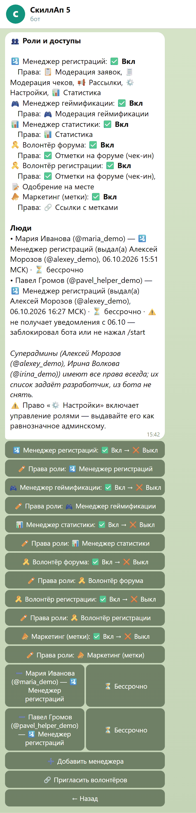
Как посмотреть бота глазами делегата
Отдельного режима «смотреть как делегат» нет. Меню делегата вы видите, когда нажимаете /start в своём аккаунте. Суперадмин, у которого уже есть анкета, получает кнопку «🔄 Пройти регистрацию заново» для проверки.
Какие кнопки видит делегат, решаете вы в «🎪 Событие» → «🔘 Кнопки меню» (подробнее). Ниже пример: одобренный делегат СкиллАп 5 видит ссылку, приглашённых, информацию, вопрос и приложение.

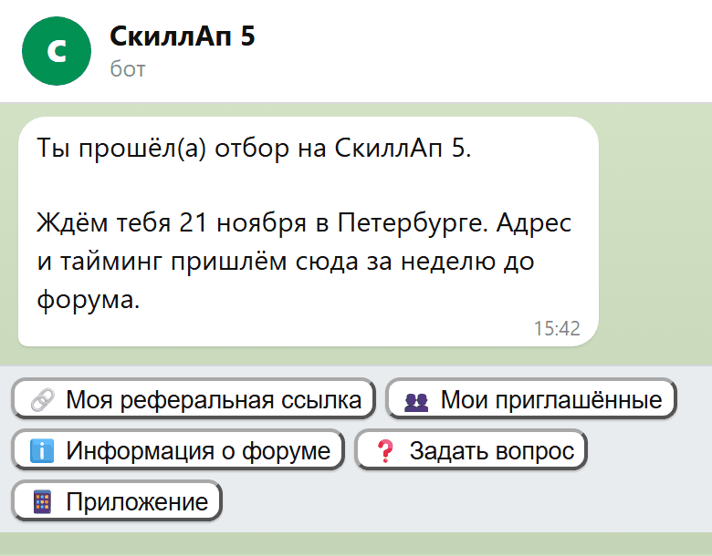
Настройка анкеты и текстов
В этой главе: Как править Вопросы Тексты вопросов Списки Английский Где какой текст Кнопки меню Программа
Зачем это. Чтобы поменять вопросы анкеты и тексты, которые видит делегат, без разработчика.
Всё, что делегат видит и читает, настраивается кнопками. Нужно право «⚙️ Настройки». Писать код не нужно: настройку выбираете кнопкой, значение присылаете сообщением.
Как править любое значение
- Откройте раздел, например «🎪 Событие» → «🎪 Событие/Медиа». Бот покажет список полей. У каждого стоит статус: «✏️ задано», «по умолчанию» или «— не задано». Само значение на экране не показано.
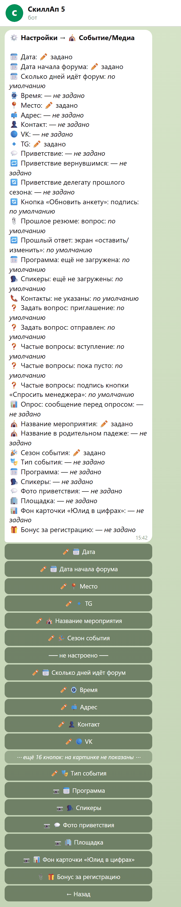
Группа «🎪 Событие/Медиа». Сначала настроенные поля, потом «── не настроено ──». Середина скрыта. - Нажмите «✏️ поле». Бот покажет «Сейчас задано: …», подсказку (часто с примером) и попросит прислать новое значение сообщением.
- Пришлите значение. Чтобы очистить поле и вернуть стандартное, пришлите «-».
- Бот вернёт вас на список. Подтверждения вроде «Сохранено» нет, это нормально: возврат на список и значит, что значение сохранено. Хотите убедиться — нажмите «✏️ поле» ещё раз: вверху будет «Сейчас задано: …» с вашим текстом. Выйти, ничего не меняя, можно кнопкой «❌ Отмена» под подсказкой. Второй раз текст присылать не нужно.

Подробнее: что бот отвергает и как работает форматирование
Неправильное значение бот отвергает и объясняет почему.
- Команду вида
/startбот не сохранит: «это команда, а не значение настройки». - Число должно быть целым и не отрицательным, дата в формате
ДД.ММ.ГГГГ(например15.10.2026, без времени), время в форматеЧЧ:ММ. Бот скажет, как надо, и подождёт ещё одну попытку. - Стикер, фото или пересланное сообщение туда, где нужен текст, прислать нельзя.
Тексты с форматированием (приветствия, «После регистрации», «После одобрения», «Заявка на рассмотрении») сохраняют жирный шрифт и ссылки. Текст отказа форматирования не поддерживает. На экране правки уже заданный текст с форматированием может выглядеть с символами <b>, это нормально.
Какие вопросы задаём: «📋 Вопросы регистрации»
Откройте «📝 Анкета» → «📋 Вопросы регистрации». Вопросы сгруппированы: «👥 Общие», «🏛 Форум», «🎤 Конфа», «➕ Экстра», «📦 Прочие».
Каждая строка это кнопка: «✅ спрашиваем» или «❌ не спрашиваем». Нажатие сохраняется сразу.
Сверху переключатель, для какой формы вы правите: «Полный», «Party» (вечеринка), «⚡ Краткая».

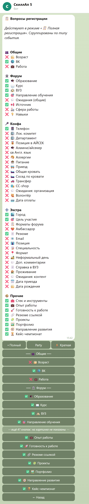
Что можно и нельзя
- Можно включать и выключать вопросы из готового набора (около 50).
- Нельзя менять порядок вопросов, добавлять свой вопрос и делать вопрос необязательным. Обязательны все, кроме телефона (и портфолио в мини-профиле).
- «Фамилия и имя» спрашивается всегда, выключить его нельзя.
- Для вопросов «ВУЗ», «Курс», «Направление обучения» есть правило «🎓 ВУЗ/курс только у студентов»: тем, кто не учится, эти вопросы не задаются.
Тот, кто уже начал анкету, дописывает её по новому списку: если вопрос выключили, он пропускается.
Подробнее: полная, краткая форма и вечеринка
- Какая форма сейчас принимает заявки, видно по кнопке «📝 Регистрация: 📋 Полная → ⚡ Краткая» в разделе «📝 Анкета» (подпись читается «сейчас → станет»). Полная это основная анкета форума или конференции. Краткая это короткая анкета для акций: в ней по умолчанию не задаётся ни один вопрос, включайте только нужные.
- 🎤 обычно конференция Вечеринка это отдельный трек со своими вопросами и своей вкладкой таблицы. Включается тумблером «🎉 Трек вечеринки». Тумблер «🔀 Вопрос-развилка формата» добавляет обычному делегату экран выбора формата. Тексты трека в группе «🎉 Party».
- 🏙 только несколько городов При включённых городах у каждого города может быть свой набор вопросов: выберите город в шапке раздела, откроется «📋 Вопросы регистрации — Город». Кнопка «↩️ Как везде» возвращает общий набор.
Тексты вопросов и подсказки
Откройте «📝 Анкета» → «✏️ Тексты вопросов». Выберите вопрос и пришлите свой текст («-» вернёт стандартный). Значок ✅ значит «текст переопределён», ✏️ значит «стандартный».
У некоторых вопросов рядом есть «💡 Подсказка»: серая строка под вопросом, видна только в приложении, в чате её нет. Подсказка должна описывать то, что бот принимает. Иначе делегат будет получать ошибку, делая всё по подсказке.
Варианты ответов: списки
Варианты кнопок (источники, города, направления, стек, цели, вузы, статусы образования) лежат в группе «📝 Анкета» → «📝 Регистрация». Нажмите на список. Бот покажет его целиком и три кнопки:
- «➕ Добавить пункт»: один пункт за сообщение, ставится в конец. Несколько строк или «;» в одном сообщении нельзя, дубль бот не пропустит.
- «🗑 Удалить пункт»: нажмите на пункт, и он удалится сразу, без подтверждения. Вернуть можно через «➕ Добавить пункт».
- «✏️ Заменить список целиком»: пришлите весь список заново, пункты с новой строки или через «;». Старый список заменится полностью.
Подробнее: служебные слова и то, что кнопками не меняется
Слова «Отмена», «Другое» и «Пропустить» бот использует сам. Если вы добавили их в список, бот предупредит, что они будут недоступны для выбора.
Варианты курса, «Да/Нет» у кейс-чемпионата и кнопки резюме (кроме подписей) кнопками не меняются.
Английская версия анкеты и новая анкета в приложении
Оба модуля по умолчанию выключены и включаются тумблерами в разделе «📝 Анкета».
Английский язык
- «🌐 Английский язык анкеты» включает делегатам английскую версию. Тексты бота переводятся машиной. Пока перевод конкретного текста не готов, делегат видит русский. Админка остаётся на русском.
- «🌐 Спрашивать язык при старте» переключается по кругу: «Не спрашивать», «Только нерусским клиентам» (так по умолчанию), «Всем при первом /start».
- Экран «🌐 Английские тексты» показывает, сколько переведено, и даёт поправить перевод: выберите строку, «✏️ Изменить английский». Кнопка «⟳ Догнать перевод» ставит в очередь всё, что ещё не переведено. Ручные правки она не трогает.
Тексты рассылок и пункты частых вопросов на английский сами не переводятся.
Новая анкета в приложении
Тумблер «🆕 Новая анкета: Старая анкета → Новая анкета» включает в приложении новый вид анкеты. Если что-то пойдёт не так, его можно выключить одним нажатием, ответы делегатов останутся. Под ним мелкие тумблеры нового вида:
- «🧩 Чипы частых значений»: популярные ответы кнопками под вопросом.
- «🔎 Поиск в справочнике»: города и вузы ищутся по первым буквам.
- «🎓 Образование одним экраном», «➕ Повторяемые блоки» (несколько проектов в опыте и портфолио), «🔢 Счётчик лимита в заголовке».
- «📶 Экран статуса заявки во всю ширину», «⚙️ Настройки в шапке анкеты», «📳 Вибрация».
Экран «📚 Справочники» нужен для тонкой настройки: туда попадают ответы «Другое», их можно влить в список как другое написание, и там же закрепляются частые варианты для вузов и городов.
Где менять какой текст
Приветствия, одобрение, отказ и напоминания правятся в разных разделах. Полная шпаргалка раскрывается ниже.
Подробнее: где править каждый текст
| Что видит делегат | Где править |
|---|---|
Приветствие при первом /start (фото и текст одним сообщением) | «🎪 Событие» → «🎪 Событие/Медиа» → «✏️ 💬 Приветствие» и «📷 💬 Фото приветствия». Подпись к фото до 1024 символов |
| Приветствие тем, у кого анкета уже есть; тем, кто был в прошлом сезоне | там же: «🔁 Приветствие вернувшимся», «🔄 Приветствие делегату прошлого сезона» |
| «Анкета отправлена…» | «📋 Заявки» → «⚙️ Тексты и настройки» → «✏️ ✅ После регистрации» |
| Одобрение и отказ | там же: «✏️ 🎉 После одобрения», «✏️ 🚫 При отклонении» |
| «Твоя заявка на рассмотрении…» при нажатии кнопок меню до решения | там же: «✏️ ⏳ Заявка на рассмотрении» |
| Напоминание тому, кто бросил анкету (один раз, по умолчанию через 2 часа) | там же: «⏰ Догонялка: текст напоминания» и «⏰ Догонялка: через сколько минут» |
| Что видит человек в пустом чате до нажатия «Начать» и в профиле бота | «🎪 Событие» → «🎪 Событие/Медиа» → «🪪 Описание бота (до /start)» (до 512 символов) и «🪪 Строка «О боте» в профиле» (до 120 символов, видна и в превью, когда ссылкой на бота делятся). Обычный текст без разметки, ссылки Телеграм сделает кликабельными сам. Бот применяет оба поля сразу после сохранения |
| Название, дата, место, контакты, канал | «🎪 Событие» → «🎪 Событие/Медиа» («🎪 Название мероприятия», «🗓 Дата», «🗓 Дата начала форума», «📍 Место», «🔹 TG») |
| Тексты «Задать вопрос» и частых вопросов | «🎪 Событие/Медиа»: «❓ Задать вопрос: приглашение», «❓ Частые вопросы: вступление» и соседние |
| Текст и кнопка согласия, версия, PDF | «📝 Анкета» → «📋 Согласия» и «🧾 PDF согласий» |
| Тексты экранов приложения (подтверждение «Заявка принята», статус заявки) | Только в приложении: «⚙️ Настройки» с поиском по слову |
Поле «🗓 Дата начала форума» включает форумные функции (QR, «🆘 SOS», меню дня форума) и используется для возраста в правилах автоотказа. Если вы её меняете, бот сам перепланирует связанные задачи.
Поле «🎭 Тип события» решает, как бот называет событие делегатам. При «Конференции» в меню будут «ℹ️ О конференции» и «📅 Программа конференции», а на экране даты «Конференция пройдет…». При любом другом значении и пустом поле бот пишет «форум». Форуму поле трогать не нужно.
При смене поле ещё и переключает модули. «Конференция» включает оплату, согласия и вопрос о локальном комитете. «Форум» выключает оплату и согласия. «Вручную» ничего не трогает. «Форум СкиллАп» применяет весь пресет СкиллАп с его текстами (что в нём), поэтому выбирайте его только на СкиллАпе.
Кнопка «🎛 Тип события (пресет)» в разделе «📝 Анкета» задаёт набор вопросов анкеты: выбор кнопками и подтверждение. Поле «🎭 Тип события» она не меняет, поэтому конференции нужны оба шага.
Где задать поле. В приложении: плитка «🚀 Первая настройка» → шаг «🎭 Тип события», там выбор кнопками. В боте поле лежит в «🎪 Событие» → «🎪 Событие/Медиа» → «🎭 Тип события», но заполняется служебным словом, а не кнопкой. Если приложения у вашего события нет, попросите @qleafye поставить нужный тип.

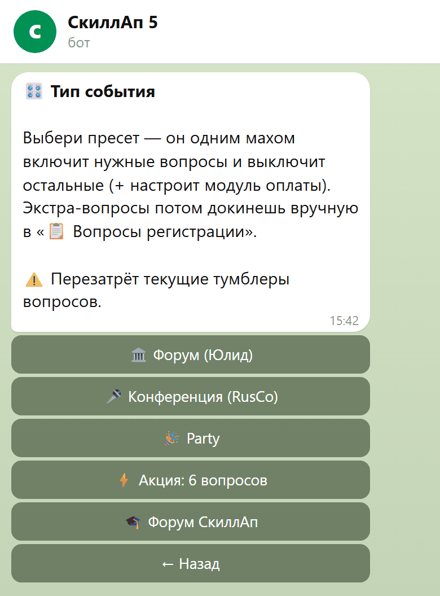
Подробнее: какие пресеты есть и что они включают
Пресет одним нажатием включает нужные вопросы и выключает остальные. Текущие тумблеры вопросов он перезаписывает. 🏙 только несколько городов Если в шапке выбран один город, пресет не применится: бот попросит переключиться на «🌍 Все города».
| Пресет | Что включает | Оплата |
|---|---|---|
| «🏛 Форум» | Возраст, ВК, источник, образование, вуз, курс, направление обучения, работа, сфера работы, навыки, ожидания | Выключает |
| «🎤 Конференция (RusCo)» | Возраст, ВК, телефон, комитет, работа, департамент, позиция в АЙСЕК, английский, аллергии, питание, приезд, общая кровать и сосед, трансфер, дата оплаты, CC-shop, ожидания от организации, волонтёрство | Включает |
| «🎉 Party» | Возраст, телефон, статус выпускника, ВК, город, аллергии, питание. Меняет только трек вечеринки | Не трогает |
| «⚡ Акция: 6 вопросов» | ФИО, телефон, ВК, город, образование, курс. Меняет только краткую форму | Не трогает |
| «🎓 Форум СкиллАп» | Только для СкиллАпа. 18 вопросов (стек, опыт, готовность, резюме, мини-профиль, кейс-чемпионат и другие), а также балл заявки, развилку резюме, догонялку через сутки и предложение личной ссылки после анкеты. Ступени амбассадоров заготавливает (пороги 1, 3 и 7 и тексты), но не включает | Выключает |

Программа форума
Откройте «🎪 Событие» → «🗓 Программа форума». Здесь заводятся дни, залы и сессии (время 10:00-11:30, название, зал, спикер, описание) или загружается фото программы.
Переключатель «🔄 Переключить вид» решает, что увидит делегат: таблицу сессий или фото. Удаление сессии, зала и фото идёт с подтверждением, которое называет последствия. В заголовке экрана программы в админке стоит подпись города по умолчанию из «🏙 Города мероприятия», делегаты её там не видят. Отметка «идёт сейчас» считается по часовому поясу форума (как его задать).
Что можно включить под своё событие
Зачем это. Чтобы собрать из модулей бота именно ваше событие и не включить лишнего.
Бот один для всех событий, а различаются они набором включённых модулей. Ниже для каждого модуля: кому он обычно нужен, где включается и как стоит в новом боте. Какое значение сейчас у вашего бота, видно по подписи кнопки: она читается «сейчас → станет».
- Работает всегда анкета и разбор заявок,
/find, рассылки и опросы, вопросы делегатов и частые вопросы, Google-таблица, статистика, ссылки с метками, роли. - Обычно включают поля карточки заявки, тексты одобрения и отказа, описание бота, кнопки меню, приложение и дашборд.
- По необходимости всё из таблицы ниже.
Какие модули обычно нужны форуму в одном городе, форуму в нескольких городах и конференции и в каком порядке их настраивать, собрано в главе «Какое у вас событие?». Это ориентир, а не правило: любой модуль можно включить на любом событии.
Подробнее: полная таблица модулей
| Модуль | Кому нужен | Где включить, и что по умолчанию |
|---|---|---|
| Набор вопросов анкеты | Всем | «📝 Анкета» → «🎛 Тип события (пресет)» один раз при запуске, потом «📋 Вопросы регистрации» (подробнее) |
| Краткая форма для акций | Акции, промо | «📝 Анкета» → «📝 Регистрация: 📋 Полная → ⚡ Краткая». Одобрение краткой формы по умолчанию «Авто» |
| Вечеринка отдельным треком | Конференции | «📝 Анкета» → «🎉 Трек вечеринки». Выключен |
| Согласия на обработку данных | Всем, кто собирает данные; обязательно на конференциях | «📝 Анкета» → «📋 Согласия: ❌ Выкл → ✅ Вкл», тексты в группе «📋 Согласия», файлы в «🧾 PDF согласий». Выключены |
| Режим одобрения | Всем | «📋 Заявки» → «✅ Полная форма: 👮 Ручная → ⚡ Авто». По умолчанию ручной. «Авто» одобряет без очереди и без проверки, бот спросит подтверждение |
| Балл заявки и сортировка по баллу | Форумы с отбором | «📋 Заявки» → «🧮 Автоматический балл заявки», «🧮 Очередь заявок: сначала с высоким баллом», правила в «🧮 Правила балла». Выключены |
| Автоотказ по правилам | События с жёсткими условиями (возраст, курс) | «📋 Заявки» → «🚫 Правила автоотказа». Правила создаются выключенными, правило не умеет одобрять (подробнее) |
| Предотбор по списку | Закрытые события по списку ников | «📋 Заявки» → «🎯 Предотбор по таблице». Пускает к анкете только тех, чей ник есть во вкладке «Отобранные». Выключен |
| Уведомления о заявках | Всем | «📋 Заявки» → «🔔 Уведомление»: по умолчанию сводкой раз в 30 минут, «📨 Сразу» даст сообщение на каждую заявку |
| Напоминание тем, кто бросил анкету | Всем | «📋 Заявки» → «⏰ Догонялка анкет». Включено, один раз через 2 часа |
| Тихие часы | Всем, кто не хочет писать делегатам ночью | «📋 Заявки» → «🌙 Тихие часы», окно в «🌙 Когда молчим: «с» и «до»». Выключены |
| Оплата и чеки | Конференции, платные события | «💳 Оплата» → «💳 Оплата». Выключена (подробнее) |
| Несколько городов | Региональные форумы | «🔧 Управление» → «🏙 Города мероприятия» → «🏙 Выбор города». Выключен (подробнее) |
| Часовой пояс форума | Форумы не по московскому времени, в том числе в одном городе | «📋 Заявки» → «🎪 Форум: функции» → «🕐 Часовой пояс». По умолчанию «МСК» |
| QR на вход, отметки, SOS, бюро находок, регистрация на месте | Очные форумы и конференции | «📋 Заявки» → «🎪 Форум: функции». Почти всё выключено и работает только при заданной «🗓 Дата начала форума» (подробнее) |
| Программа | Очные события | «🎪 Событие» → «🗓 Программа форума» и кнопка «📅 Программа форума» в «🔘 Кнопки меню» |
| Геймификация (задания, монеты, рейтинг) | Форумы с активностями до события | Завести задания, включить «🪙 Мои монеты» и «🎯 Задания» в «🔘 Кнопки меню» и разделы в «🎨 Оформление» (подробнее) |
| Амбассадоры: личная ссылка, Система Мари, ступени | События, где делегаты зовут других | Личная ссылка работает всегда. Отбор в команду: тумблер «🎮 Геймификация» → «⚙️ Тексты и настройки» → «🤝 Отбор амбассадоров» плюс способ входа «🗳 Отбор менеджером» в появившемся разделе «🤝 Амбассадоры» → «🚪 Вход и лимит», по умолчанию выключен. Ступени: «🎓 Ступени амбассадоров» → «🎓 Программа», выключена (какая система вам нужна) |
| Личная ссылка делегата | Всем, кто считает приглашённых | Кнопки «🔗 Моя реферальная ссылка» и «👥 Мои приглашённые» включены. «📝 Анкета» → «🎁 Предлагать свою ссылку после анкеты» выключено |
| Делегации вузов | События с делегациями от вузов | «📋 Заявки» → «🏫 Делегации», форма подключается в «📝 Внешние формы» (подробнее) |
| Внешние формы (Яндекс, Google) | Партнёрские анкеты, опросы | «📊 Данные» → «📝 Внешние формы» |
| Английская версия анкеты | События с иностранными участниками | «📝 Анкета» → «🌐 Английский язык анкеты». Выключена |
| Новая анкета в приложении | По желанию | «📝 Анкета» → «🆕 Новая анкета». Выключена |
| Бонус за регистрацию | По желанию | «🎪 Событие» → «🎁 Бонус: ❌ Выкл → ✅ Вкл», файл в «🎪 Событие/Медиа». Выключен |
| Приложение (Mini App) | Всем, у кого оно подключено | «🔧 Управление» → «🎨 Оформление» → «Mini App включён» |
| Дашборд | Всем | «📊 Данные» → «📊 Дашборд» (галочки блоков) |
| Итоги дня менеджерам | Всем, кому удобна вечерняя сводка | «🔧 Управление» → «📊 Итоги дня менеджерам». Выключены |
| Учёт и рейтинг чата делегатов | События с общим чатом | Бот администратором в чате, затем «🔧 Управление» → «💬 Учёт чата делегатов». Выключен (подробнее) |
Оплата и чеки 🎤 обычно конференция
Зачем это. Чтобы принять взносы за платное событие, обычно конференцию или съезд. На бесплатном форуме глава не нужна.
Если оплата включена, одобренный делегат вместо обычного письма получает выбор варианта участия и реквизиты, а затем присылает чек. Вы проверяете чеки в боте.
Путь: «💳 Оплата». В разделе кнопка «🧾 Чеки», тумблеры «💳 Оплата» и «⏰ Автонапоминания оплаты», а также «⚙️ Тексты и настройки». По умолчанию оплата выключена, напоминания включены.
Что настроить до первого одобрения
Всё в «💳 Оплата» → «⚙️ Тексты и настройки»:
- «💳 Варианты оплаты»: строки вида
Название | Цена, напримерПолный билет|5000иСтудент|3000, каждый вариант отдельной строкой или через «;». Цена 0 значит бесплатно. Если вариант один, делегат его не выбирает. - «💰 Реквизиты оплаты»: общие реквизиты. «💳 Реквизиты по ЛК»: свои реквизиты для отдельных комитетов, строки
комитет | реквизиты. Если комитета делегата нет в списке, показываются общие. - «📅 Дедлайн оплаты» в формате
ДД.ММ.ГГГГ ЧЧ:ММ. По нему идут напоминания и просрочка. - «⚠️ Штрафы за отмену»: строки
дата | сумма. - Тексты экранов: «💳 Выбор варианта: заголовок», «💰 Экран оплаты: шаблон», «⏭ «Оплачу позже»: ответ», «✅ Чек получен: подтверждение», «⏰ Текст напоминания об оплате», «⌛ Текст «оплата просрочена»».
Пресет «🎤 Конференция (RusCo)» включает оплату сам, пресеты форумов её выключают (про пресеты).
Что видит делегат и что делаете вы
- После одобрения делегат получает «💳 Выбери вариант участия:» с кнопками «Название — цена ₽» и «⏭ Оплачу позже». Если цена 0 и реквизитов нет, оплата пропускается.
- Делегат видит сумму, реквизиты и срок и загружает чек: PDF или фото, до 10 МБ. Пока чек не отправлен, в его меню есть кнопка «💳 Оплата».
- Менеджерам с правом «🧾 Модерация чеков» приходит «🧾 Новый чек оплаты от …». Откройте «💳 Оплата» → «🧾 Чеки»: карточка «🧾 Чек 1/N», кнопки «✅ Подтвердить», «❌ Отклонить», «🧾 Чек» (показать файл), «⏭ Следующий».
- «✅ Подтвердить»: делегат получает «✅ Оплата подтверждена! Спасибо, ваш взнос получен.» и итоговое письмо одобрения, напоминания снимаются. «❌ Отклонить»: бот спросит причину (можно «-»), делегат получит «❌ Чек отклонён.» с причиной и сможет загрузить чек заново.
Подробнее: напоминания и просрочка
- Напоминания уходят за 3 дня и за 1 день до «📅 Дедлайн оплаты». Они ставятся, когда делегат выбрал вариант или нажал «Оплачу позже», и не уходят тем, кто уже оплатил или прислал чек.
- Тумблер «⏰ Автонапоминания оплаты» проверяется в момент отправки: если выключить его, не уйдут и уже запланированные напоминания.
- Раз в сутки бот проверяет дедлайн. Кто не оплатил к сроку, получает статус «просрочено». Сообщение о просрочке уходит, только если включены автонапоминания.
- Делегатам вузов (делегации) оплата не предлагается и не напоминается.
- В рассылке есть фильтр «💰 Оплата»: можно написать только тем, кто ещё не оплатил.
Несколько городов
Зачем это. Чтобы один бот вёл регистрацию на форумы в разных городах, как на региональных форумах Юлида. Если город один, глава не нужна. Часовой пояс форума задаётся без модуля городов, он описан в главе «День форума» (как задать).
Модуль городов добавляет в начало анкеты выбор города. Заявки каждого города пишутся на свою вкладку таблицы, а у менеджера можно ограничить работу одним городом.
Путь: «🔧 Управление» → «🏙 Города мероприятия». Нужно право «⚙️ Настройки».
- Наведите порядок в списке. Под каждым городом кнопки: «✅ Город» или «⛔ Город» (включить или выключить), «⭐» (город по умолчанию), «✏️ Переименовать», «📄 База вкладки». Новый город: «➕ Добавить город». Бот спросит подпись, которую увидят делегаты (например, «Казань, 14 ноября»), и вкладку таблицы.
- Включите модуль кнопкой «🏙 Выбор города: ❌ Выкл → ✅ Вкл». Пока он выключен, делегаты город не выбирают и все заявки идут в основной лист.
- Делегат при
/startувидит «Выбери город мероприятия:». Если открыт ровно один город или человек пришёл по ссылке города, вопроса не будет. Ссылки городов показаны в списке рядом с названием.
Подробнее: выключить, удалить, закрыть регистрацию
- Выключенный город пропадает из выбора, уже собранные заявки остаются.
- Кнопка «🗑» появляется только у города, в котором нет делегатов и заданий. Город по умолчанию удалить нельзя, пока не отмечен другой «⭐». Вкладка таблицы при удалении остаётся.
- Закрыть регистрацию в город с определённой даты можно полем «🔒 Город: регистрация закрывается» в «📝 Анкета» → «📝 Регистрация». Выберите город в шапке раздела и нажмите «✏️ Изменить для» этого города. Если в шапке «🌍 Все города», дата закроет все города сразу. С 00:00 этого дня город пропадает из выбора, тексты для этого случая: «🔒 Город закрыт: текст» и «🔒 Все города закрыты: текст». Уже поданные анкеты закрытие не трогает.
- Смена «📄 База вкладки» переносит в новую вкладку только новые заявки.
Шапка «🏙 Город» и менеджеры городов
Когда модуль включён, в каждом разделе админки первой строкой стоит «🏙 Город: название» или «🌍 Все города». Нажмите на неё, чтобы выбрать город: всё в админке (заявки, чеки, выгрузка, задания, тексты и кнопки меню) будет про этот город. Тексты и вопросы можно задать городу отдельно, иначе действуют общие.
- Привязать менеджера к городу может только суперадмин: «👥 Роли и доступы», кнопка «🏙 …» в строке человека.
- Привязанный менеджер видит только свой город и переключить его не может. Экран «🏙 Города мероприятия» ему закрыт.
- Перевести делегата в другой город:
/find @ник→ «🏙 Перевести в город» (подробнее). Текст уведомления делегату: «🏙 Уведомление о переводе в другой город» в «📋 Заявки» → «⚙️ Тексты и настройки».
День форума: QR, отметки, SOS
Зачем это. Чтобы пропускать делегатов по QR, считать пришедших и помогать им на площадке. Нужно очным форумам и конференциям.
Чек-ин это отметка, что делегат пришёл: волонтёр сканирует его личный QR-код на входе или на сессии. SOS это кнопка экстренной помощи у делегата в дни форума. Все форумные функции собраны на одном экране: «📋 Заявки» → «🎪 Форум: функции» (право «📋 Модерация заявок»). На нём статус каждой функции строкой и кнопка, которая ведёт в её настройки. 🏙 только несколько городов Если включены города, сначала выберите город.
Часовой пояс форума
Если форум идёт не по московскому времени, задайте часовой пояс. Это нужно и форуму в одном городе: модуль городов для этого включать не надо. Путь: «📋 Заявки» → «🎪 Форум: функции» → «🕐 Часовой пояс». Кнопки от «МСК−1» до «МСК+9», текущее значение отмечено «✅». По умолчанию «МСК». Например, для Тюмени «МСК+2».
🏙 только несколько городов У каждого города свой часовой пояс: открыв «🎪 Форум: функции», сначала выберите город.
По местным часам бот считает:
- рассылку QR накануне и утром в день форума;
- тихие часы делегатов этого города;
- отметку «идёт сейчас» в программе и в точках сканера, время сессий;
- отзыв о сессии после её конца;
- время в загруженной выгрузке офлайн-сканера;
- время в карточке SOS, в приветствии после отметки, в колонке «Пришёл» таблицы и в отчёте дня.
Проверка готовности
Первая кнопка экрана «🚦 Готовность к форуму» показывает светофор по семи пунктам: дата форума, вход по QR и рассылка, сколько людей с правом отметки, программа, чат SOS, запись в таблицу, чат делегатов. У красных и жёлтых строк есть кнопки исправления, например «🗓 Задать дату форума» или «👥 Назначить волонтёров». Итог внизу: «Всё готово.» или «Красных строк: N — начните с них.». После исправлений нажмите «🔄 Проверить снова».
Личный QR делегата
- Включите выпуск QR: «📋 Заявки» → «🎟 QR для чек-ина на форуме: ❌ Выкл → ✅ Вкл» или на экране «🎪 Форум: функции» кнопкой «🎟 Вход по QR (общий для всех городов)». Этот выключатель один на все города. Менеджер, привязанный к городу, его не меняет.
- После этого у одобренного делегата в меню появляется «🎟 Мой QR».
- Рассылка QR настраивается в «🎟 Настройки рассылки QR»: «Рассылка», «🕕 Вечером» (по умолчанию 18:00 накануне), «🌅 Утром» (08:00 в день форума, повтор тем, кто не нажал «✅ Сохранил, открывается»). Время по часам города.
- Тихие часы и «🔕 Не присылать сегодня» на QR не действуют. Ручная кнопка «📤 Разослать QR сейчас» на экране отметок работает не раньше чем накануне форума.
Если делегат потерял QR или его переслали другому, перевыпустите: /find @ник → «🔄 Перевыпустить QR». Старый QR перестанет работать.
Отметки на входе и на сессиях
Сканируют волонтёры с ролью «🎗 Волонтёр форума» или «🎗 Волонтёр регистрации». В приложении у них плитка «Сканер (чек-ин)»: выбрать город и точку («🚪 Вход» или сессия), нажать «📷 Сканировать». Свою отметку можно отменить в первые секунды кнопкой «↩️ Отменить». Если QR нет, человека ищут «Поиск по фамилии».
Экран «📋 Заявки» → «✅ Отметки на форуме» показывает «Сегодня пришли: N из M одобренных», рассылку QR и тех, кто не пришёл.
Подробнее: офлайн-сканер, тренировка, «не пришли»
- Если на площадке нет сети, сканируйте любым приложением-сканером, потом выгрузите историю в CSV. «📤 Загрузить файл сканера» → пришлите файл документом (до 20 МБ) → выберите точку («🚪 Вход» или сессия). Время из файла читается по часам города.
- «🧪 Проверить приложение-сканер» проверяет, подходит ли формат файла, ничего не отмечая. «🧪 Учебные QR» присылает лист A4 с пятью учебными кодами для тренировки волонтёров, их можно сканировать в точке «🧪 Тренировка».
- «📨 Написать не пришедшим» отправляет сообщение с кнопками «🚶 Уже еду», «😔 Не смогу прийти», «📍 Я на месте». Если отметки ещё догружаются файлами, часть пришедших получит его по ошибке: бот предупредит.
- Там же «📊 Статистика прихода», «📍 Сейчас на площадке», «📓 Журнал площадки».
Волонтёры и регистрация на месте
- «🔗 Пригласить волонтёров» (на экране «🎪 Форум: функции» или в «👥 Роли и доступы») создаёт ссылку, по которой человек сам получает право сканировать в этом городе, без набора ника. Включите «Приглашения», затем «🔗 Создать ссылку» (только отметки) или «🔗 Ссылка + одобрение на месте». Бот спросит срок ссылки, срок прав и лимит переходов. Отзыв ссылки («⛔ Отозвать») уже выданные права не снимает, снять человека можно в «👥 N вошли».
- «🎫 Настройки шпаргалки»: накануне форума волонтёрам уходит шпаргалка (по умолчанию в 17:00 по Москве). Текст «🎫 Шпаргалка волонтёра чек-ина» правится в «📋 Заявки» → «⚙️ Тексты и настройки», без текста рассылка не уйдёт.
- «📝 Регистрация на месте» нужна, если на форум приходят без заявки. Человек сканирует QR у стойки («📎 QR для стойки»), отвечает на три вопроса (имя, телефон, вуз), а волонтёр с правом «📝 Одобрение на месте» находит его в сканере по фамилии и пропускает одной кнопкой. Тем, у кого заявка есть, но не одобрена, сканер предлагает «✅ Пропустить и одобрить». Решение записывается на волонтёра. Включается отдельно для каждого города.
SOS и бюро находок
Кнопка «🆘 SOS» у делегата появляется только в дни форума. Одно нажатие сразу отправляет сигнал оргкомитету, дальше делегат может дописать, что случилось, прислать фото или геопозицию.
- Экран «📋 Заявки» → «🆘 SOS»: счётчики «открыто · взято · решено сегодня» и фильтры. Привяжите чат оргкомитета кнопкой «🔗 Привязать чат SOS» (добавьте бота в чат и перешлите оттуда сообщение или наберите в чате
/sos_id). Без чата сигналы приходят менеджерам в личку. - Под сигналом в чате кнопки «🙋 Беру», «🔁 Перехватить», «✅ Решено». Если никто не нажал «Беру» за 5 минут, бот напоминает.
- Тексты и тайминги SOS в «⚙️ Тексты и тайминги» на том же экране и в «🎪 Событие/Медиа».
«🧳 Бюро находок» включается в «🧳 Настройки бюро находок» и требует привязанного чата делегатов. Волонтёр нажимает «🧳 Нашли вещь» в админке (или /found), присылает фото и где забрать, проверяет предпросмотр и публикует в чат делегатов. Под постом кнопка «✅ Нашёлся хозяин».
Что бот отправляет сам в дни форума
Всё ниже по умолчанию выключено и включается на экране «🎪 Форум: функции» отдельно для каждого города. Рассылка QR и шпаргалка волонтёрам описаны выше.
| Что уходит | Когда | Кнопка настроек |
|---|---|---|
| Меню «день форума» у делегата | С 18:00 накануне, по Москве | «📱 Настройки меню «день форума»» |
| Приветствие после первой отметки на входе | Сразу после отметки | «👋 Настройки приветствия после отметки» |
| Отзыв о сессии одним тапом | Через 10 минут после конца сессии, только отмеченным на ней | «⭐ Настройки отзывов» |
| Отчёт дня форума менеджерам | 21:00 каждого дня форума, по Москве | «📊 Настройки отчёта дня форума» (там же «📥 Выгрузить отметки (CSV)») |
| Опрос неявившихся «почему не пришёл» | 12:00 на следующий день после форума | «❓ Настройки опроса неявившихся» (там же сводка ответов) |
| Предложение неявившимся приехать на форум в Москве | 12:00 на следующий день после форума | «🚌 Настройки переноса в Москву» |
| Карточка «Мы в цифрах» | Только вручную | «📊 Настройки карточки «Мы в цифрах»»: фон, превью себе, рассылка пришедшим или всем одобренным |
Тексты этих сообщений лежат в «📋 Заявки» → «⚙️ Тексты и настройки» и в «🎪 Событие» → «🎪 Событие/Медиа».
Геймификация: задания и монеты
Зачем это. Чтобы делегаты выполняли задания за монеты. Например, задания были на Юлиде. На событии без заданий глава не нужна. Про амбассадоров, волны и ступени отдельная глава «Амбассадоры: три системы».
Геймификация это игра для делегатов до события: задания за монеты и рейтинг. Общего выключателя геймификации нет. Она начинается, когда вы заводите задания и показываете делегатам кнопки «🪙 Мои монеты» и «🎯 Задания». Нужно право «🎮 Модерация геймификации».
Как запустить
- Заведите задания: «🎮 Геймификация» → «🎯 Задания» → «➕ Новое задание». Мастер спросит название, описание, фото-обложку (можно «⏭ Пропустить»), категорию, сколько монет, что должен прислать делегат («📷 Скриншот/фото», «📄 PDF», «✍️ Текст», «🔗 Ссылка» или ничего не отмечать), город, волну, кому («Всем делегатам» или «Только амбассадорам») и дедлайн. В конце превью «👁 Так увидит делегат» и «✅ Опубликовать».
- Проверьте, что кнопки «🪙 Мои монеты» и «🎯 Задания» включены в «🎪 Событие» → «🔘 Кнопки меню», а разделы «Задания», «Монеты», «Рейтинг» в «🔧 Управление» → «🎨 Оформление».
- Попросите делегатов нажать
/start: меню обновится.
Задания видят одобренные делегаты текущего сезона. Делегатам вузов они закрыты, пока не включён тумблер «🎮 Геймификация для делегатов» на экране «🏫 Делегации».
Проверка сдач и монеты
- «🎮 Проверка заданий»: карточка сдачи и кнопки «✅ Принять», «✏️ Другая сумма», «❌ Отклонить», «⏭ Пропустить». Принятая сдача приносит делегату «✅ Задание «…» одобрено! +N🪙». При отказе бот спросит причину (можно «-»). После отказа делегат может сдать заново, лимит задаёт «🔁 Лимит перезаливов после отклонения».
- Как приходят новые сдачи, решает тумблер «📥 Сдачи менеджеру: Каждую сдачу отдельно / Пачкой (дайджест)» в «⚙️ Тексты и настройки» раздела.
- «🪙 Монеты вручную»: перешлите сообщение человека или пришлите его ник, выберите «➕ Начислить» или «➖ Списать», сумму и причину, затем «✅ Подтвердить». Делегат получит сообщение с причиной и новым балансом. Все ручные операции в «📜 Журнал монет», там же выгрузка CSV.
- «📊 Статистика геймы»: участников, на проверке, одобрено, отклонено. «🔄 Таблица геймы» пересобирает вкладки геймификации в таблице, заметки, написанные в них руками, пропадут.
Подробнее: дедлайн задания и напоминание
- Дедлайн выбирается кнопками: «Сегодня 23:59», «+3 дня», «+7 дней», «По умолчанию — конец волны», «🚫 Без срока», «✏️ Своя дата». Сдать после дедлайна можно, но «⏰ Штраф за сдачу после дедлайна, %» уменьшит награду.
- За сутки до дедлайна бот напоминает тем, кто ещё не сдал. Получают его только те, кому задания открыты: одобренные делегаты текущего сезона (делегаты вузов только при включённой геймификации для делегаций). Задание волны напоминает только участникам идущей волны. Отклонённая сдача считается несданной.
- Текст напоминания: «🌊 Напоминание о дедлайне» в группе «🤝 Амбассадоры». Путь: «🤝 Амбассадоры» → «⚙️ Тексты и настройки», а если отбор амбассадоров выключен, «🎮 Геймификация» → «🤝 Амбассадоры».
- Отдельного выключателя у напоминания нет. Его не будет у задания «🚫 Без срока», у задания в архиве и у удалённого. Если до дедлайна меньше суток, напоминание не ставится.
Амбассадоры: три системы
Зачем это. Чтобы делегаты звали других и за это что-то получали. Систем в боте три, и на разных событиях включают разные. Сначала выберите свою, потом читайте только её подглаву и общий блок.
Амбассадор это делегат, который зовёт других по личной ссылке. Ссылка одна во всех системах, а различаются они тем, кто становится амбассадором и что он за приглашённых получает.
Какая система у вас?
| Система | Кому подходит | Что видит делегат | Где включается |
|---|---|---|---|
| «Обычная: личная ссылка» | Любому событию, где хотят знать, кто кого привёл | «🔗 Моя реферальная ссылка» и «👥 Мои приглашённые» в меню, кнопку «Хочу свою ссылку» | Включать нечего, работает всегда. Нужны только кнопки меню |
| «Система Мари» | Событию, где команда амбассадоров соревнуется в волнах заданий. Если мест в команде меньше, чем желающих, людей ещё и отбирают | То же, плюс «🎯 Задания» волны и «🏅 Рейтинг волны». С отбором ещё статус: кандидат или в команде | «🌊 Волны» в разделе «🎮 Геймификация». Если нужен отбор, ещё «🎮 Геймификация» → «⚙️ Тексты и настройки» → «🤝 Отбор амбассадоров» и способ входа «🗳 Отбор менеджером» (три шага) |
| «Ступени (как на СкиллАпе)» | Событию, где обещают награду за число приглашённых, прошедших отбор | То же, что в обычной, плюс прогресс «сколько до ступени» и сообщение о каждой ступени | «🎓 Ступени амбассадоров» → «🎓 Программа: выключена» |
Можно ли совмещать и что от чего зависит
- Обычная работает всегда. Две другие строятся поверх неё: амбассадоры в них зовут людей по той же личной ссылке, и бот считает одних и тех же приглашённых.
- Ссылка ещё не делает амбассадором. Баллы, волны и ступени получает только амбассадор: кто нажал «Хочу свою ссылку» (при отборе — кого вы потом взяли) или кого вы назначили сами. Остальные делегаты тоже могут звать людей по ссылке, но получают за это только строчки в «👥 Мои приглашённые».
- Волнам отбор не нужен. Без отбора в волне участвуют все, кто нажал «Хочу свою ссылку», как было на Юлиде. Отбор включают, только если мест в команде меньше, чем желающих, или вы хотите сами решать, кого взять.
- Ступени и отбор включаются отдельно, но отбор решает, кто амбассадор. У ступеней свой выключатель «🎓 Программа», у отбора свой «🤝 Отбор амбассадоров». При «🗳 Отбор менеджером» кандидат не получает ни ступеней, ни баллов, пока вы его не возьмёте кнопкой «✅ Взять». Ступени после этого придут задним числом: бот посчитает всех его одобренных приглашённых за сезон. Баллы за приглашённых, которых одобрили, пока он был кандидатом, не придут никогда. Когда места в команде заняты, кнопка у делегатов пропадает, и попасть в команду можно только через вас. Совмещаете ступени с отбором — берите кандидатов быстро или поставьте в «🚪 Вход и лимит» способ «⚡ Сразу по кнопке».
- Волны и ступени считают одно и то же одобрение. Волна это соревнование на отрезке дат, ступени это награды за сезон. Одобрение приглашённого засчитывается и туда, и туда.
- Тумблер «🤝 Отбор амбассадоров» меняет админку. Пока он выключен, раздела «🤝 Амбассадоры» в корне
/adminнет, а «🌊 Волны», «🎓 Ступени амбассадоров» и тексты «🤝 Амбассадоры» лежат в разделе «🎮 Геймификация». Включили — в корне появляется девятый раздел «🤝 Амбассадоры», и всё это переезжает туда. Выключили снова — кандидаты, волны, ступени и тексты не стираются. Сам тумблер не меняет, как попадают в команду: пока он выключен, амбассадором становятся сразу по кнопке и без лимита мест, и после включения так и останется, пока не поменяете способ входа и число мест в «🤝 Амбассадоры» → «🚪 Вход и лимит» (три шага).
Какая кнопка к какой системе
В боте все три системы пока лежат в одном разделе «🤝 Амбассадоры», потому что считают одних и тех же приглашённых по одной ссылке. Если не уверены, к чему относится кнопка, смотрите таблицу. «Общее» значит, что кнопка действует на все системы сразу.
| Кнопка | Где | Система |
|---|---|---|
| «🔗 Моя реферальная ссылка», «👥 Мои приглашённые» | Меню делегата, включаются в «🎪 Событие» → «🔘 Кнопки меню» | Обычная |
| «🎁 Предлагать свою ссылку после анкеты», «🧡 Засчитывать только амбассадоров», «🔗 Не спрашивать «Откуда узнал» у пришедших по ссылке» | «📝 Анкета» | Обычная |
| «🤝 Отбор амбассадоров» | «🎮 Геймификация» → «⚙️ Тексты и настройки» | Система Мари, если нужен отбор (плюс способ входа в «🚪 Вход и лимит») |
| «🚪 Вход и лимит», «🙋 Кандидаты и команда» | «🤝 Амбассадоры» | Система Мари |
| «🌊 Волны», «🏅 Призовых мест в волне», тексты волн с 🌊 | «🤝 Амбассадоры», при выключенном отборе «🎮 Геймификация» | Система Мари (волны работают и без отбора) |
| «🎓 Ступени амбассадоров», «🪜 Лестница ступеней», тексты с 🎓 | «🤝 Амбассадоры», при выключенном отборе «🎮 Геймификация» | Ступени |
| «💰 Баллы и приватность», «🤝 Баллы за приглашённого» | «🤝 Амбассадоры», при выключенном отборе только «🤝 Баллы за приглашённого» в «🎮 Геймификация» → «🤝 Амбассадоры» | Общее |
| «🌊 Путь амбассадора: вопрос», «🌊 Путь: …», «🌊 Амбассадорский блок: заголовок», «🌊 Кнопка «Перестать быть амбассадором»», «🌊 Выход из амбассадоров: …» | Тексты «🤝 Амбассадоры» | Общее, хоть и помечены 🌊 |
| «🚫 Исключить приглашённого из зачёта» | Экран «🎓 Ступени амбассадоров», работает и при выключенной программе ступеней | Общее |
| «🚫 Исключения из зачёта» (список и «↩️ Вернуть в зачёт») | «🤝 Амбассадоры», при выключенном отборе «📋 Исключённые» на экране «🎓 Ступени амбассадоров» | Общее |
| «📎 Закрепить приглашённого» | «🤝 Амбассадоры», при выключенном отборе кнопки нет | Общее |
Обычная: личная ссылка
Личная ссылка есть у любого делегата: она лежит в «🔗 Моя реферальная ссылка». Кто пришёл по ней, записывается за пригласившим, даже если тот ещё не амбассадор. На том же экране делегат нажимает «Хочу свою ссылку» и становится амбассадором: выбирает путь («Зову людей», «Делаю контент» или «Пока не выбрал»), видит прогресс и может нажать «Перестать быть амбассадором». В «👥 Мои приглашённые» он видит, кого привёл.
Три тумблера в разделе «📝 Анкета»:
- «🎁 Предлагать свою ссылку после анкеты»: сразу после анкеты бот предложит делегату ссылку кнопками «Хочу свою ссылку» и «Позже». Текст предложения правится только в приложении (осторожно с пресетом СкиллАп).
- «🧡 Засчитывать только амбассадоров»: пришедший по ссылке записывается за пригласившим, только если тот уже амбассадор или ответил «да» на вопрос анкеты «🧡 Амбассадор». Иначе человек регистрируется как обычно, без пригласившего, и не попадёт в «👥 Мои приглашённые».
- «🔗 Не спрашивать «Откуда узнал» у пришедших по ссылке»: бот пропустит этот вопрос анкеты.
Проверьте, что «🔗 Моя реферальная ссылка» и «👥 Мои приглашённые» включены в «🎪 Событие» → «🔘 Кнопки меню». Баллы за приглашённых в этой системе тоже можно начислять (общий блок).
Система Мари: команда и волны заданий
Команда амбассадоров соревнуется в волнах заданий. Систему придумали вместе с РилТолком. Отбор в команду по желанию: на Юлиде волны шли без него.
Без отбора. Амбассадором становится каждый, кто нажал «Хочу свою ссылку», мест без лимита. «🌊 Волны» лежат в разделе «🎮 Геймификация». Включать ничего не нужно, переходите к волнам (ниже).
Если нужен отбор (мест меньше, чем желающих, или вы сами решаете, кого взять), сделайте три шага до того, как делегаты начнут нажимать кнопку:
- Включите тумблер «🤝 Отбор амбассадоров: ❌ Выкл → ✅ Вкл» в «🎮 Геймификация» → «⚙️ Тексты и настройки». Для него нужно право «⚙️ Настройки» (права). В корне
/adminпоявится раздел «🤝 Амбассадоры», и «🌊 Волны» переедут туда. - «🤝 Амбассадоры» → «🚪 Вход и лимит» → «Способ входа: ⚡ Сразу по кнопке» → «✅ Переключить: 🗳 Отбор менеджером». Сам тумблер способ входа не меняет: без этого шага бот по-прежнему берёт в команду всех сразу, а список кандидатов остаётся пустым. Тех, кто уже вступил, потом придётся выводить по одному.
- Там же «🎁 Мест в команде» → пришлите число мест, например
17. Если прислать0, лимита не будет, так стоит по умолчанию.
Что лежит в разделе «🤝 Амбассадоры»:
| Экран | Что в нём |
|---|---|
| «🚪 Вход и лимит» | Как вступают («⚡ Сразу по кнопке» или «🗳 Отбор менеджером», по умолчанию сразу по кнопке), сколько мест в команде (0 значит без лимита), тексты для делегатов |
| «🙋 Кандидаты и команда» | Списки «🙋 Кандидаты», «🤝 В команде», «📭 Без пакета», «🚫 Отказано». В карточке «✅ Взять», «⏸ Не сейчас», «🎁 Пакет выдан», «🚪 Вывести из команды». Внизу «➕ Назначить амбассадором», «🙅 Вежливо отказать всем оставшимся», выгрузки CSV |
| «🌊 Волны» | Соревнование команды на отрезке дат со своими заданиями и рейтингом |
При «🗳 Отбор менеджером» делегат, который нажал «Хочу свою ссылку» (в админке бот называет её «Хочу стать амбассадором», это та же кнопка) или ответил «да» на вопрос анкеты «🧡 Амбассадор», становится кандидатом, а в команду его берёте вы. Пока его не взяли, он не получает ни баллов, ни ступеней (что это значит для ступеней). Место в лимите занимает только амбассадор с одобренной заявкой на событие. Остальные в команде «без пакета»: со ссылкой, заданиями и баллами.
Подробнее: как провести волну
- «🌊 Волны» (в «🎮 Геймификация», с отбором в «🤝 Амбассадоры») → «➕ Новая волна» или «📋 Скопировать прошлую» (даты заданий сдвинутся вместе с волной). Пришлите даты в формате
ДД.ММ.ГГГГ, вводный текст или «⏭ Без текста», затем «✅ Создать». - Заведите задания (как) и при создании выберите эту волну.
- Если в волне считаются приглашённые, задайте баллы за одного: «🤝 Амбассадоры» → «💰 Баллы и приватность» → «💰 Баллов за приглашённого», а при выключенном отборе «🤝 Баллы за приглашённого» в «🎮 Геймификация» → «🤝 Амбассадоры». По умолчанию там 0, и тогда приглашённые в рейтинг волны не попадают.
- На карточке волны «▶️ Запустить волну» → «▶️ Да, запустить». Без заданий или после даты конца запустить нельзя.
- В конце волны менеджерам придёт топ. «🏁 Итоги волны» → «🏁 Объявить итоги» → «✅ Да, объявить»: всем участникам уйдёт объявление, призёрам поздравление. Число призёров задаёт «🏅 Призовых мест в волне» (по умолчанию 3). Для одной волны можно задать своё число кнопкой «🏅 Призовых мест» на карточке волны, и оно важнее общей настройки.
В волне участвуют амбассадоры, которые стали ими не позже её начала. Рейтинг волны складывается из монет за задания этой волны и баллов за приглашённых, одобренных в даты волны (если баллы за приглашённого не 0). Нумерация волн у каждого города своя. Более подробный разбор волн есть отдельным гайдом, попросите его у @qleafye.
Ступени (как на СкиллАпе)
Амбассадор получает ступень, когда набирает нужное число приглашённых, прошедших отбор, то есть с одобренной заявкой. Отклонённые и ещё не рассмотренные не считаются. Ступеней от одной до пяти, у каждой свой порог и своё сообщение. Пресет «🎓 Форум СкиллАп» заготавливает три ступени (пороги 1, 3 и 7), но не включает их.
- Экран «🎓 Ступени амбассадоров»: при выключенном отборе он в «🎮 Геймификация», при включённом в «🤝 Амбассадоры». Главный выключатель «🎓 Программа: выключена / включена». Там же «🙈 Имена приглашённых», «📥 Выгрузить CSV по амбассадорам» для раздачи наград, исключения из зачёта.
- «🪜 Лестница ступеней»: добавить или убрать ступень, порог, текст, ограничение числа наград (дальше лист ожидания). Освободившееся место отдаёт менеджер кнопкой «🎁 Отдать место», ступень снимает «🚫 Снять ступень у амбассадора».
- По умолчанию ступени получает только амбассадор, чью собственную заявку одобрили. После «🎓 До какого момента выдаём ступени» новые ступени не выдаются.
Включите программу до первого одобрения. Если одобрения уже идут, сначала напишите @qleafye: приглашённых, которых одобрили раньше, нужно пересчитать, иначе они не попадут в зачёт. Для экрана нужно право «🎮 Модерация геймификации», а чтобы менять пороги, число наград и тексты, ещё «⚙️ Настройки» (права).
Общее для всех систем
- Баллы за приглашённого. «💰 Баллы и приватность» → «💰 Баллов за приглашённого», а при выключенном отборе «🤝 Баллы за приглашённого» в «🎮 Геймификация» → «🤝 Амбассадоры». По умолчанию 0, то есть не начисляются. Это те же монеты 🪙, что за задания. Они приходят, когда приглашённого одобрили, и только если пригласивший в этот момент амбассадор. Если идёт волна, баллы попадают и в её рейтинг. Позже отказ приглашённому их не снимает.
- Исключения из зачёта против накрутки: снимают баллы за этого приглашённого, очки в волне и зачёт в прогрессе. Уже выданную ступень не снимают. Исключить: «🎓 Ступени амбассадоров» → «🚫 Исключить приглашённого из зачёта». Экран работает и при выключенной программе ступеней, он нужен и в Системе Мари. Пришлите @username приглашённого, затем коротко причину и нажмите «✅ Исключить». Список исключённых и «↩️ Вернуть в зачёт» лежат в «🚫 Исключения из зачёта» раздела «🤝 Амбассадоры», а при выключенном отборе в «📋 Исключённые» на том же экране ступеней.
- «📎 Закрепить приглашённого»: вручную записать, кто кого привёл, если человек пришёл без ссылки. Кнопка есть только в разделе «🤝 Амбассадоры», то есть при включённом отборе.
- Тексты отбора, волн и ступеней в одной группе: «⚙️ Тексты и настройки» раздела «🤝 Амбассадоры», при выключенном отборе «🎮 Геймификация» → «🤝 Амбассадоры». Тексты ступеней помечены 🎓. Пометкой 🌊 бот отмечает тексты волн, но и тексты выбора пути, заголовка блока амбассадора и выхода из амбассадоров. Эти три действуют в любой системе, в том числе в обычной. Тексты самой ссылки («🔗 Реферальная ссылка: текст», «👥 Приглашённые: …») лежат в «🎮 Геймификация» → «⚙️ Тексты и настройки».
- Дашборд. Блок «🏅 Амбассадоры» показывает число амбассадоров, рейтинг идущей волны, воронку приглашённых по амбассадорам и, при включённых ступенях, числа по ним. По умолчанию он выключен (где включить).
- Права. Экраны амбассадоров открывает право «🎮 Модерация геймификации». Для части шагов нужно ещё «⚙️ Настройки»:
- включить «🤝 Отбор амбассадоров»: без права вы не увидите и сам экран «⚙️ Тексты и настройки»;
- на «🪜 Лестнице ступеней» менять порог, число наград и тексты («✏️ Порог», «✏️ Наград на ступени», «📝 Текст», «📝 Лист ожидания»): без права этих кнопок нет;
- при выключенном отборе задать «🤝 Баллы за приглашённого», а при любом — «🎓 До какого момента выдаём ступени»: они лежат в настройках «🤝 Амбассадоры»;
- менять любые тексты амбассадоров, в том числе тексты в «🚪 Вход и лимит».
Делегации вузов и внешние формы
Зачем это. Чтобы принять в бот людей, которые заполнили не анкету бота, а внешнюю форму: список делегации от вуза, анкету партнёра, опрос.
Внешние формы
Путь: «📊 Данные» → «📝 Внешние формы», нужно право «⚙️ Настройки». Подключаются Яндекс Формы и Google Формы. Бот забирает ответы, связывает их с делегатами по нику или телефону и при желании копирует на вкладку таблицы.
- Яндекс Формы требуют один раз подключить доступ: «🔑 Ключи приложения Яндекса» (инструкция на экране) и «🔑 Войти через Яндекс». Затем «➕ Подключить Яндекс Форму»: пришлите ссылку, подтвердите, какие вопросы содержат ник и телефон, выберите вкладку и вставьте адрес из «🔗 Адрес и инструкция» в «Интеграции» самой формы.
- Google Форма: «➕ Подключить Google Форму», дайте служебному адресу бота доступ «Читатель» к таблице ответов и пришлите ссылку на неё. Бот читает таблицу раз в 5 минут.
- На карточке формы: пауза, «🔔 Уведомления о новых ответах», «📋 Вкладка таблицы», «⛔ Отключить» (собранное остаётся), «🗑 Удалить собранное» (необратимо, строки в таблице не трогает).
- Ответы человека видны в
/findпо кнопке «📝 Ответы форм». В рассылке есть фильтр «📝 Внешняя форма»: «✅ Заполнил» или «❌ Не заполнил».
Делегации вузов
Модуль для случая, когда вуз присылает список своих студентов через Яндекс Форму делегаций. Бот сам решает, подходит ли человек под целевую аудиторию по курсу, находит его по нику из формы и одобряет без анкеты и без оплаты. Делегат получает одно сообщение и обычное меню одобренного участника.
Путь: «📋 Заявки» → «🏫 Делегации», право «📋 Модерация заявок». Форму сначала подключите во «📝 Внешние формы», потом нажмите «📝 Выбрать форму» и проверьте, какие вопросы содержат ФИО, вуз и курс.
- Итоги наверху: в форме, ЦА, не ЦА, проверить, зашли в бота, пришли.
- «📅 Отсечка ЦА»: кто заполнил форму до этой даты, проходит при любом курсе, кто после, по списку «🎓 Курсы не ЦА». После смены этих настроек бот спросит, применить ли их к уже пришедшим ответам: те, кто станет ЦА, будут одобрены и получат сообщение.
- «❔ Проверить курс»: ответы, где бот не уверен в курсе. Решайте кнопками «✅ ЦА» или «🚫 Не ЦА». Если человеку раньше отказали в боте, одобрение просит второе подтверждение.
- «⏳ Не зашли»: ЦА по форме, которых бот не узнал по нику. Кнопка с именем → пришлите ник, номер или пересланное сообщение человека, который уже открывал бота.
- «🏫 По вузам», «📋 Лист UR REGS» (запись итогов в общий лист, сначала «🔍 Сверка с листом» без записи), «✏️ Тексты делегату», «🎮 Геймификация для делегатов».
В рассылке для них есть фильтры «🏫 Делегации» и «🏫 Вуз делегации». Подробный разбор есть в презентации «Как работают делегации вузов в боте» на той же доске.
Чат делегатов
Зачем это. Чтобы видеть, кто из одобренных зашёл в чат делегатов, и поддерживать активность рейтингом.
- Добавьте бота в чат делегатов и сделайте администратором. Сделать это должен суперадмин или человек с правом «⚙️ Настройки», иначе бот промолчит.
- Бот напишет вам в личку (не в чат): «Бот добавлен в чат «…» и подключён к событию.». 🏙 только несколько городов Если включены города, он спросит, к какому городу относится чат.
- Включите «🔧 Управление» → «💬 Учёт чата делегатов». В таблице появится колонка «В чате»: «да», «нет» или «не проверено».
- «🔄 Сверить состав чата» пересчитывает, кто в чате, и работает даже при выключенном учёте. Сам бот сверяет состав по умолчанию раз в 6 часов.
- «🏆 Рейтинг чата»: режим «📈 По формуле активности» (веса в группе «💬 Чат делегатов», одни на все города) или «🪙 По правилам города» (баллы за комментарии, приглашённых друзей, упоминания, дни форума). Сам рейтинг смотрите на дашборде на странице «💬 Чат». Публикацию рейтинга в чат включает «📣 Публиковать рейтинг в чат», расписание в «📣 Когда и что публиковать», проверить можно «👁 Отправить сейчас (проверка)». В пост попадают только люди с ником.
- «🧹 Служебные сообщения в чате»: галочками выберите, какие служебные сообщения бот удаляет («Вступил(а) в группу», закрепы, смена названия и другие). Боту нужно право администратора «Удаление сообщений».
- В рассылке есть фильтр «💬 Чат делегатов»: можно написать тем, кто в чат не вступил.
Если бота убрали из чата, привязка снимается, а вам придёт «⚠️ Бота убрали из чата «…»».
Приложение менеджера (Mini App)
Зачем это. Чтобы разбирать заявки и отвечать на вопросы с телефона удобнее, чем в чате.
Приложение это веб-страница, которая открывается внутри Телеграм. У делегата там анкета, профиль и частые вопросы.
У менеджера рабочие экраны: отбор заявок, вопросы делегатов, частые вопросы, настройки. Всё то же есть и в боте.
Как открыть
- Кнопка в меню чата слева от поля ввода: «📱 Открыть приложение». Она появляется, когда приложение включено.
- Кнопка «📱 Приложение» в нижнем меню. Бот отвечает коротким сообщением и кнопкой «📱 Открыть приложение». Именно через эту кнопку Телеграм передаёт приложению, кто вы.
- Запасной вход в обычном браузере (только для менеджеров, удобнее с компьютера): откройте дашборд кнопкой «🌐 Открыть дашборд» и допишите в адресной строке
/appв конце адреса. Откроется экран «Откройте через бота». Нажмите «Войти через Telegram».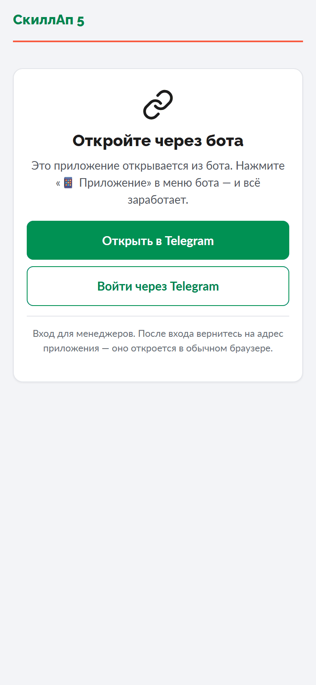
Экран «Откройте через бота». «Открыть в Telegram» ведёт в бота, «Войти через Telegram» открывает вход для менеджеров.

Вход тот же, что у дашборда, а после входа браузер вернёт на дашборд, поэтому откройте адрес приложения ещё раз.
Если приложение открыто не из бота, вы увидите именно этот экран. Он не сломан: приложение просто не знает, кто вы.
Главный экран менеджера
Плитки зависят от ваших прав и от галочек в «🎨 Оформление». Заголовки групп рисуются, только если в группе есть хотя бы одна плитка.
Под плиткой может быть счётчик: «N без ответа», «15 настроек». Если вы одновременно менеджер и делегат с анкетой, вверху есть переключатель «Делегат | Менеджер».
Подробнее: какая плитка от какого права
| Плитка | Право |
|---|---|
| «Отбор заявок» | «📋 Модерация заявок» |
| «Вопросы делегатов», «Частые вопросы» | «📋 Модерация заявок» |
| «Настройки», «Первая настройка» | «⚙️ Настройки» |
| «Дашборд» | Плитку видит любой менеджер, но войти на дашборд пустит только с правом «📊 Статистика». Без него дашборд покажет «Нет доступа» |
| «Сканер (чек-ин)» | «✅ Отметки на форуме (чек-ин)» |
| «Статистика» | одновременно «📊 Статистика» и «🎮 Модерация геймификации» (это статистика заданий). У менеджера регистраций плитки нет, статистику смотрите на дашборде |

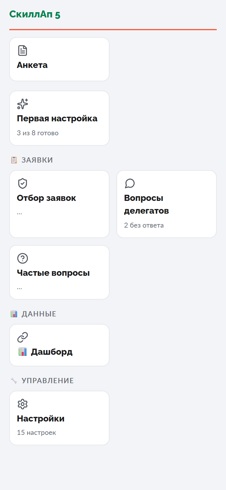
Отбор заявок, вопросы, частые вопросы, настройки
Отбор заявок: вверху фильтры по форме («Все», «Полный», «Вечеринка», «Краткая», «Изменённые», «Помечены правилом») и «Принять всех N».
На карточке виден балл, ответы, резюме. После принятия или отказа 5 секунд можно нажать «Отменить», пока письмо не ушло. Для отказа есть три готовых причины и поле «Своя причина».
Чтобы видеть все ответы, сначала поправьте «🧾 Поля карточки заявки»: порядок и поля карточки те же, что в боте.

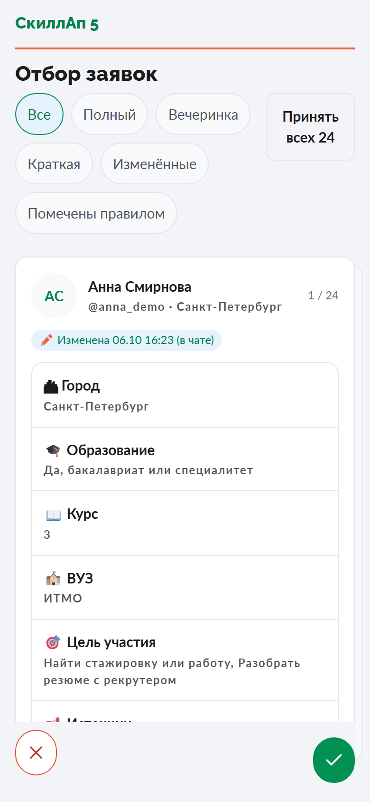
Вопросы делегатов: журнал с фильтрами «Все», «Без ответа», «В работе», «Отвечены» и кнопкой ответа.

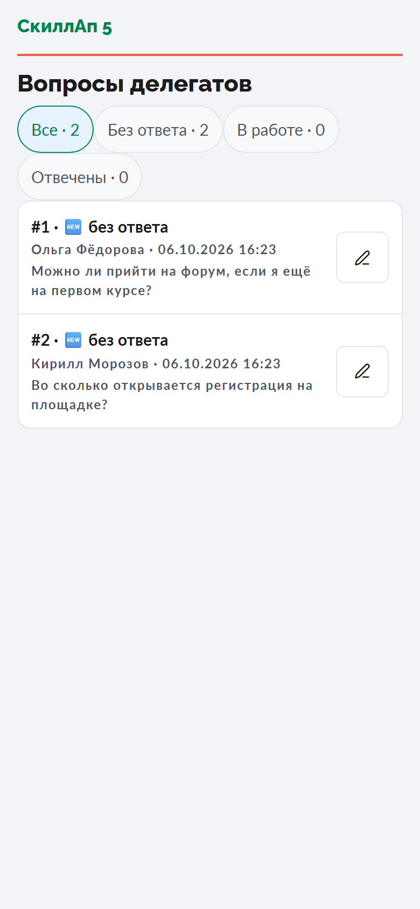
Настройки: тематические плитки («Событие», «Анкета», «Заявки», «Данные» и другие) и строка «Найти настройку…». Здесь же те тексты экранов приложения, которых нет в боте (подтверждение «Заявка принята», статус заявки). Ищите их по слову.

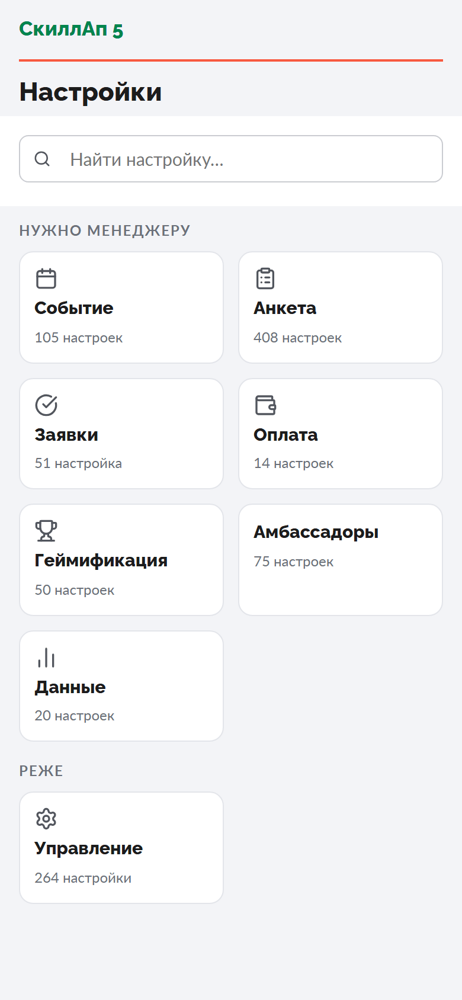
Частые вопросы: те же пункты, что в боте. Их можно добавлять, править и скрывать.

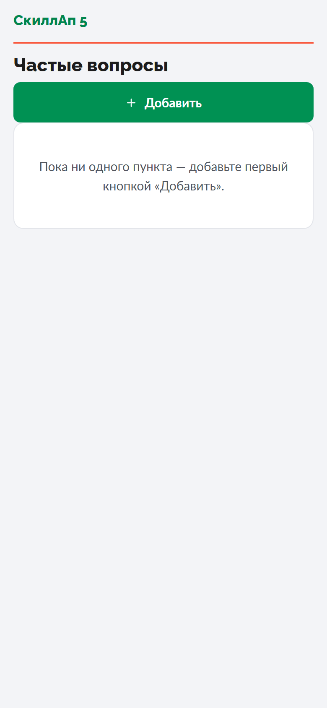
Включить, выключить и оформить приложение
Путь: «🔧 Управление» → «🎨 Оформление» (право «⚙️ Настройки»). Экран «🎨 Оформление приложения» показывает:
- «Mini App включён»: выключатель всего приложения. Действует сразу. При выключении бот предупредит: «Выключить Mini App? Приложение исчезнет у всех делегатов и менеджеров, включая вас — включить обратно получится только из бота.»
- «Только менеджерам»: делегаты кнопку не увидят, у менеджеров есть запасной вход.
- Галочки разделов: что видно в приложении («Профиль», «Анкета», «Частые вопросы», «Отбор заявок», «Вопросы делегатов», «Настройки», «Сканер (чек-ин)», «Задания», «Монеты», «Рейтинг» и другие).
- «✨ Анимации» и «🎭 Пресеты и ручки оформления»: настройки внешнего вида приложения, то есть цвета, шрифт заголовков, логотип, обложка. Картинки принимаются только фото, не файлом.

#009153, вторичный #F85A40, фон #F3F4F7.Если в приложении «всё по-старому», закройте его полностью (смахните) и откройте заново. Не помогло — напишите @qleafye.
Новый сезон и прошлые делегаты
Зачем это. Чтобы запустить следующее событие в том же боте и узнать тех, кто уже был у вас раньше.
Сезон это одно событие, например «СкиллАп 5» или «Юлид 26/2». Делегаты прошлого сезона остаются в базе, при /start бот узнаёт их и предлагает обновить анкету, а в статистике они видны как «🔁 Повторных».
«🔄 Новый сезон»
Кнопку в «🔧 Управление» видит и нажимает только суперадмин.
- Бот покажет текущий сезон и попросит название нового (до 64 символов).
- Экран «🔄 Начать сезон «…»?» перечислит, что произойдёт: делегаты текущего сезона станут «прошлыми», статусы заявок, монеты и чеки не трогаются, база не чистится. Если включён отбор амбассадоров, сбросятся их статусы (история останется в выгрузке «Прошлые сезоны»). Нажмите «➡️ Продолжить».
- Для подтверждения бот попросит напечатать название старого сезона. Если фраза не совпала, ничего не произойдёт.
«📥 Импорт прошлого события»
Переносит делегатов из базы другого бота, например прошлогоднего, чтобы новый бот их узнал. Нужно право «⚙️ Настройки». Пришлите файл базы данных старого бота (до 20 МБ, его даёт @qleafye). Бот покажет, сколько людей найдено, сколько уже есть и сколько добавит, и спросит название сезона для них (текущее название не подойдёт). Подтвердите кнопкой «📥 Да, импортировать».
Монеты, оплаты и рефералы не переносятся, существующие записи не меняются, файл после импорта бот не хранит.
Карта админки по разделам
Зачем это. Чтобы знать, в каком разделе что искать.
В корне /admin восемь кнопок, а при включённом отборе амбассадоров девять. Они идут в порядке пути делегата: узнал о событии, заполнил анкету, ждёт решения, платит, получает рассылки, играет. «Данные» и «Управление» нужны вам самим.
Раздел, в котором для вас нет ни одной кнопки, вы не увидите вообще.
Ниже для каждого раздела коротко: зачем он и как выглядит у менеджера с ролью «🛂 Менеджер регистраций» на примере бота СкиллАп 5. Если включены города, первой строкой каждого раздела стоит шапка «🏙 Город: …» (про шапку).
🎪 Событие
Всё, что делегат видит до регистрации: название, даты, место, контакты, приветствие, фото, программа.
- «🎪 Событие/Медиа»: экран с полями.
- «🔘 Кнопки меню»: какие кнопки есть у делегата.
- «🎁 Бонус»: файл за регистрацию, по умолчанию выключен.
- «🗓 Программа форума»: залы и сессии.
Чтобы поправить поле, нажмите «✏️ поле» и пришлите значение сообщением. Чтобы очистить, пришлите «-». Подробнее про настройку анкеты и текстов.

📝 Анкета
Какие вопросы задаём при регистрации и как они выглядят: включение вопросов, тексты вопросов, согласие на обработку данных, английский язык, переключатели новой анкеты.
Раздел длинный (31 строка), но ежедневно нужны две-три кнопки: «📋 Вопросы регистрации», «✏️ Тексты вопросов», «📋 Согласия». На картинке первые и последние кнопки.

📋 Заявки
Главный рабочий раздел. Сверху действия: очередь, список, вопросы делегатов, частые вопросы, «🆘 SOS», «🎪 Форум: функции» (день форума). Ниже настройки: поля карточки, правила балла, правила автоотказа, «🏫 Делегации», режимы одобрения, уведомления, тихие часы, выпуск QR.
Волонтёрам форума здесь доступны только «✅ Отметки на форуме» и «🧳 Нашли вещь». Разбор в главе про заявки.

💳 Оплата
Чеки делегатов, реквизиты, сроки и напоминания. по умолчанию выключено
Пока оплата выключена, после одобрения делегат получает обычное письмо. Если её включить, одобренному придёт «💳 Выбери вариант участия:», а менеджеры будут проверять чеки в «🧾 Чеки». Глава про оплату.

📢 Общение

🎮 Геймификация
Задания, проверка сдач, монеты, а пока отбор амбассадоров выключен, ещё волны и ступени. Менеджеру без права «🎮 Модерация геймификации» раздел показывает только «🤝 Амбассадоры» (тексты для амбассадоров) и «⚙️ Тексты и настройки». Суперадмин видит все кнопки. На картинке раздел бота СкиллАп 5, где заданий не было.
Подробнее: как включить геймификацию
Общего выключателя нет. Заведите задания, включите кнопки меню и разделы приложения, а затем попросите делегатов нажать /start. Глава про геймификацию.

🤝 Амбассадоры
Раздел появляется, только когда включён «🤝 Отбор амбассадоров» («🎮 Геймификация» → «⚙️ Тексты и настройки»). В нём вход и места в команде, кандидаты, баллы за приглашённых, ступени, волны, исключения из зачёта и ручное закрепление приглашённого. Если раздел выключен, а вы нажали его старую кнопку, бот подскажет, где его включить. Какая кнопка к какой системе амбассадоров относится: таблица.
📊 Данные
Статистика, выгрузки, Google-таблица и внешние формы. Читайте главы про таблицу, статистику и дашборд и внешние формы.

🔧 Управление
Города, роли, оформление приложения, новый сезон и импорт прошлого события, чат делегатов, итоги дня, справка. Чаще всего вы бываете здесь ради «👥 Роли и доступы» и «🎨 Оформление». Про города, чат и новый сезон есть отдельные главы.
- Кнопка «📖 Справка по настройкам» присылает короткую справку о том, что где настраивается. То же даёт команда
/settings_guide. - Кнопку «🔄 Новый сезон» видит только суперадмин.
- Группа «🔧 Система» нужна разработчику, новому менеджеру заходить туда не нужно.

Глоссарий
Зачем это. Чтобы сверить слова из бота, если что-то непонятно.
Слова даны в том виде, в каком они называются в боте. Одно и то же состояние в разных местах называется по-разному, это нормально.
- Админка
- Меню для организаторов внутри того же бота, что и у делегатов. Открывается командой
/adminв личной переписке с ботом. Делегаты его не видят, а вы видите только разделы, на которые у вашей роли есть права (подробнее). - Делегат
- Участник события. В базе человек появляется, когда отправляет анкету. Тот, кто нажал «Начать» и не дописал, хранится отдельно, это «Незавершённые».
- Мини-профиль
- Замена резюме для тех, у кого его нет. Если в анкете выбрать «нет резюме», бот задаёт три коротких вопроса: о проектах, ссылку на портфолио (можно пропустить) и в каком направлении человек хочет развиваться. Это часть заявки, а не дополнительные сведения.
- Анкета и заявка
- Анкета это опросник, который заполняет человек. Заявка это отправленная анкета, ждущая решения.
- Статус заявки
- Ожидает решения: «Новая» (в таблице), «⏳ Ожидают» (в списке), «на модерации» (в статистике). Одобрена и Отклонена пишутся одинаково везде.
- Ручная и Авто
- Режим одобрения. Ручная: решает менеджер. Авто: заявка одобряется сама, без очереди, а делегат получает короткое «Заявка принята» вместо письма «прошёл отбор».
- Балл и «IT 3+»
- Автоматическая оценка заявки по ответам, до 7. «IT 3+» значит: IT-направление (или стек) и старший курс.
- Автоотказ
- Правило, которое отклоняет или помечает заявку по условию. Одобрять не умеет. Правила создаются выключенными.
- Пачкой и Сразу
- Режим уведомлений менеджерам о заявках: сводкой «Заявок в ожидании: N» по таймеру (по умолчанию раз в 30 минут) или сообщением на каждую заявку.
- Догонялка
- Одно напоминание тому, кто бросил анкету.
- Тихие часы
- Окно ночью, когда бот откладывает сообщения делегатам до утра.
- Тумблер
- Кнопка-переключатель. Подпись «Выкл → Вкл» означает «сейчас выключено, нажатие включит».
- Право и роль
- Право это одна возможность в админке (девять штук). Роль это набор прав, выдаётся человеку.
- Суперадмин
- Человек со всеми правами, которого назначает владелец бота @qleafye. Из бота его нельзя снять. Список виден внизу экрана «👥 Роли и доступы».
- Рассылка
- Сообщение выбранной аудитории (все, по фильтру, не завершившим регистрацию), сразу или по расписанию. «❗ Важное» доходит и до тех, кто выключил рассылки на сегодня.
- Опрос
- Настоящий опрос Телеграм с вариантами, отправляется как рассылка.
- FAQ
- Частые вопросы: готовые ответы для делегатов.
- Вкладка
- Лист Google-таблицы. Бот находит вкладку по имени, поэтому переименовывать её нельзя.
- Дашборд
- Веб-страница со статистикой, доступна с правом «📊 Статистика».
- Приложение (Mini App)
- Страница внутри Телеграм: у делегата анкета и профиль, у менеджера отбор заявок, вопросы, настройки.
- Сезон
- Одно событие, например «СкиллАп 5». «🔁 Повторных» это те, кто был в прошлом сезоне. Новый сезон начинает суперадмин.
- Метка (ссылка с меткой)
- Ссылка на бота, по которой видно, откуда пришёл человек.
- Недоступно
- В отчёте рассылки: сообщение не дошло (заблокировал бота, удалил аккаунт или не открывал бота).
- Пресет
- Готовый набор вопросов и настроек под тип события. Применять нужно осознанно: он перезаписывает вопросы.
- Модуль
- Часть бота, которую включают под событие: оплата, города, день форума, геймификация и другие. Список в главе «Что можно включить под своё событие».
- Город и шапка города
- При включённом модуле городов у каждого города своя вкладка, свои даты и тексты. Строка «🏙 Город: …» в разделах админки выбирает, про какой город вы сейчас настраиваете.
- Дата начала форума
- Дата, от которой бот считает дни форума. Без неё не работают QR накануне, SOS, меню дня форума, отчёт дня и опрос неявившихся.
- QR и чек-ин
- Личный код делегата для входа. Волонтёр сканирует его в приложении, и бот отмечает, что человек пришёл.
- Амбассадор
- Делегат, который нажал «Хочу свою ссылку» или которого взяли в команду, и зовёт других по личной ссылке. За одобренных приглашённых может получать баллы и ступени (три системы).
- Система Мари
- Система амбассадоров, где команда соревнуется в волнах заданий, придумана вместе с РилТолком. Волны заводятся в «🌊 Волны». Если мест в команде меньше, чем желающих, ещё включают отбор: тумблер «🤝 Отбор амбассадоров» и способ входа «🗳 Отбор менеджером» в появившемся разделе «🤝 Амбассадоры» → «🚪 Вход и лимит» (подробнее).
- Волна
- Отрезок дат со своими заданиями и рейтингом амбассадоров. В конце менеджер объявляет итоги и призёров.
- Делегация вуза
- Студенты, которых вуз прислал списком через внешнюю форму. Бот одобряет их без анкеты, если они подходят по курсу.
- Внешняя форма
- Яндекс или Google Форма, ответы которой бот забирает и связывает с делегатами.
- ЦА
- Целевая аудитория. В делегациях вузов так называют тех, кто подходит по курсу и дате заполнения формы.
- Карточка заявки
- Сообщение бота с одной заявкой: имя, ответы анкеты, балл и кнопки решения. Какие ответы в ней видны, задаёт экран «🧾 Поля карточки заявки».
- Очередь
- Заявки, которые ждут решения. Открывается кнопкой «📋 Заявки» и показывает по одной карточке.
- Реплай
- Ответ на конкретное сообщение в Телеграм: нажать на сообщение и выбрать «Ответить». Так менеджер отвечает на вопрос делегата.
- Трек
- Вид анкеты, которую заполнил человек: полная, вечеринка (с ночёвкой или без), краткая для акций.
- Геймификация
- Игра для делегатов: задания за монеты, рейтинг. Включается, когда вы заводите задания и показываете кнопки «🪙 Мои монеты» и «🎯 Задания».
- Ступени амбассадоров
- Награды амбассадору за число приглашённых, которые прошли отбор. Пороги и тексты задаются в «🎓 Ступени амбассадоров».
- SOS
- Кнопка экстренной помощи у делегата. Видна только в дни форума, сигнал уходит оргкомитету.
- Чек-ин
- Отметка, что делегат пришёл на форум или на сессию. Её ставит волонтёр, сканируя личный QR делегата.
- БД
- База данных бота: его собственный учёт делегатов и заявок. Главная копия данных хранится здесь, а Google-таблица её повторяет.
- CSV
- Простая таблица в одном файле. Открывается в Excel и Google Таблицах.
- UTM
- Метки в рекламных ссылках. На дашборде по ним видно, какая реклама привела людей.
- Ручки оформления
- Так в боте названы настройки внешнего вида приложения: цвета, шрифт, логотип, обложка.